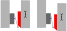
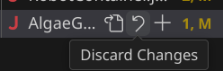

tags:
aliases:
- NetworkTablesThe official radio documentation is complete and detailed, and should serve as your primary resource.
https://frc-radio.vivid-hosting.net/
However, It's not always obvious what you need to look up to get moving. Consider this document just a simple guide and jumping-off point to find the right documentation elsewhere
Setting up the radio for competition
You don't! The Field Technicians at competitions will program the radio for competitions.
When configured for competition play, you cannot connect to the radio via wifi. Instead, use an ethernet cable, or
Setting up the radio for home
The home radio configuration is a common pain point
Option 1: Wired connection
This option is the simplest: Just connect the robot via an ethernet or USB, and do whatever you need to do. For quick checks, this makes sense, but obviously is suboptimal for things like driving around.
Option 2: 2.4GhZ Wifi Hotspot
The radio does have a 2.4ghz wifi hotspot, albeit with some limitations. This mode is suitable for many practices, and is generally the recommended approach for most every-day practices due to ease of use.
Note, this option requires access to the tiny DIP switches on the back of the radio! You'll want to make sure that your hardware teams don't mount the radio in a way that makes this impossible to access.
Option 3: Tethered Bridge
This option uses a second radio to connect your laptop to the robot. This is the most cumbersome and limited way to connect to a robot, and makes swapping who's using the bot a bit more tricky.
However, this is also the most performant and reliable connection method. This is recommended when doing extended driving sessions, final performance tuning, and other scenarios where you're trying to simulate competition-ready environments.
This option has a normal robot on one end, and your driver-station setup will look the following image. See https://frc-radio.vivid-hosting.net/overview/practicing-at-home for full setup directions
Bonus Features
Port Forwarding
Port forwarding allows you to bridge networks across different interfaces.
The practical application in FRC is being able to access network devices via the USB interface! This is mostly useful for quickly interfacing with Vision hardware like the Limelight or Photonvision at competitions.
//Add in the constructor in Robot.java or RobotContainer.java
// If you're using a Limelight
PortForwarder.add(5800, "limelight.local", 5800);
// If you're using PhotonVision
PortForwarder.add(5800, "photonvision.local", 5800);
Scripting the radio
The radio has some scriptable interfaces, allowing programmatic access to quickly change or read settings.
Goals
Understand how to efficiently communicate to and from a robot for diagnostics and control
Success Criteria
- Print a notable event using the RioLog
- Find your logged event using DriverStation
- Plot some sensor data (such as an encoder reading), and view it on Glass/Elastic
- Create a subfolder containing several subsystem data points.
As a telemetry task, success is thus open ended, and should just be part of your development process; The actual feature can be anything, but a few examples we've seen before are
Why you care about good telemetry
By definition, a program runs exactly as you the code was written to run. Most notably, this does not strictly mean the code runs as it was intended to.
When looking at a robot, there's a bunch of factors that can have be set in ways that were not anticipated, resulting in unexpected behavior.
Telemetry helps you see the bot as the bot sees itself, making it much easier to bridge the gap between what it's doing and what it should be doing.
Printing + Logging
Simply printing information to a terminal is often the easiest form of telemetry to write, but rarely the easiest one to use. Because all print operations go through the same output interface, the more information you print, the harder it is to manage.
This approach is best used for low-frequency information, especially if you care about quickly accessing the record over time. It's best used for marking notable changes in the system: Completion of tasks, critical events, or errors that pop up. Because of this, it's highly associated with "logging".
The methods to print are attached to the particular print channels
//System.out is the normal output channel
System.out.println("string here"); //Print a string
System.out.println(764.3); //you can print numbers, variables, and many other objects
//There's also other methods to handle complex formatting....
//But we aren't too interested in these in general.
System.out.printf("Value of thing: %n \n", 12);
A typical way this would be used would be something like this:
public ExampleSubsystem{
boolean isAGamePieceLoaded=false;
boolean wasAGamePieceLoadedLastCycle=false;
public Command load(){
//Some operation to load a game piece and run set the loaded state
return runOnce(()->isAGamePieceLoaded=true);
}
public void periodic(){
if(isAGamePieceLoaded==true && wasAGamePieceLoadedLastCycle==false){
System.out.print("Game piece now loaded!");
}
if(isAGamePieceLoaded==false && wasAGamePieceLoadedLastCycle==true){
System.out.print("Game piece no longer loaded");
}
wasAGamePieceLoadedLastCycle=isAGamePieceLoaded
}
}
Rather than spamming "GAME PIECE LOADED" 50 times a second for however long a game piece is in the bot, this pattern cleanly captures the changes when a piece is loaded or unloaded.
In a more typical Command based robot , you could put print statements like this in the end() operation of your command, making it even easier and cleaner.
The typical interface for reading print statements is the RioLog: You can access this via the Command Pallet (CTRL+Shift+P) by just typing > WPILIB: Start Riolog. You may need to connect to the robot first.
These print statements also show up in the DriverStation logs viewer, making it easier to pair your printed events with other driver-station and match events.
NetworkTables
Data in our other telemetry applications uses the NetworkTables interface, with the typical easy access mode being the SmartDashboard api. This uses a "key" or name for the data, along with the value. There's a couple function names for different data types you can interact with
// Put information into the table
SmartDashboard.putNumber("key",0); // Any numerical types like int or float
SmartDashboard.putString("key","value");
SmartDashboard.putBoolean("key",false);
SmartDashboard.putData("key",field2d); //Many built-in WPILIB classes have special support for publishing
You can also "get" values from the dashboard, which is useful for on-robot networking with devices like Limelight, PhotonVision, or for certain remote interactions and non-volatile storage.
Note, that since it's possible you could request a key that doesn't exist, all these functions require a "default" value; If the value you're looking for is missing, it'll just give you the provided default.
SmartDashboard.getNumber("key",0);
SmartDashboard.getString("key","not found");
SmartDashboard.getBoolean("key",false);
Networktables also supports hierarchies using the "/" seperator: This allows you to separate things nicely, and the telemetry tools will let you interface with groups of values.
SmartDashboard.putNumber("SystemA/angle",0);
SmartDashboard.putNumber("SystemA/height",0);
SmartDashboard.putNumber("SystemA/distance",0);
SmartDashboard.putNumber("SystemB/angle",0);
While not critical, it is also helpful to recognize that within their appropriate heirarchy, keys are displayed in alphabetical order! Naming things can thus be helpful to organizing and grouping data.
Good Organization -> Faster debugging
As you can imagine, with multiple people each trying to get robot diagnostics, this can get very cluttered. There's a few good ways to make good use of Glass for rapid diagnostics:
- Group your keys using
group/key. All items with the samegroup/value get put into the same subfolder, and easier to track. Often subsystem names make a great group pairing, but if you're tracking something specific, making a new group can help. - Label keys with units: a key called
angleis best when written asangle degree; This ensures you and others don't confuse it withangle rad. - Once you have your grouping and units, add more values! Especially when you have multiple values that should be the same. One of the most frequent ways for a system to go wrong is when two values differ, but shouldn't.
A good case study is an arm: You would have
- An absolute encoder angle
- the relative encoder angle
- The target angle
- motor output
And you would likely have a lot of other systems going on. So, for the arm you would want to organize things something like this
SmartDashboard.putNumber("arm/enc Abs(deg)",absEncoder.getAngle());
SmartDashboard.putNumber("arm/enc Rel(deg)",encoder.getAngle());
SmartDashboard.putNumber("arm/target(deg)",targetAngle);
SmartDashboard.putNumber("arm/output(%)",motor.getAppliedOutput());
A good sanity check is to think "if someone else were to read this, could they figure it out without digging in the code". If the answer is no, add a bit more info.
Glass
Glass is our preferred telemetry interface as programmers: It offers great flexibility, easy tracking of many potential outputs, and is relatively easy to use.

Glass does not natively "log" data that it handles though; This makes it great for realtime diagnostics, but is not a great logging solution for tracking data mid-match.
This is a great intro to how to get started with Glass:
https://docs.wpilib.org/en/stable/docs/software/dashboards/glass/index.html
For the most part, you'll be interacting with the NetworkTables block, and adding visual widgets using Plot and the NetworkTables menu item.
Elastic
Elastic is a telemetry interface oriented more for drivers, but can be useful for programming and other diagnostics. Elastic excels at providing a flexible UI with good at-a-glance visuals for various numbers and directions.

Detailed docs are available here:
https://frc-elastic.gitbook.io/docs
As a driver tool, it's good practice to set up your drivers with a screen according to their preferences, and then make sure to keep it uncluttered. You can go to Edit -> Lock Layout to prevent unexpected changes.
For programming utility, open a new tab, and add widgets and items.
Plotting Data
tags:
- stubRequires:
Triggers
Basic Telemetry
Success Criteria
- Configure a Limelight to
- Identify an April Tag
- Create a trigger that returns true if a target is in view
- When a target is in view, print the offset between forward and the target
- Estimate the distance to the target
- Configure the LL to identify a game piece of your choice.
- Indicate angle between forward and game piece.
aliases:
- HomingHoming is the process of recovering physical system positions, typically using relative encoders.
Part of:
SuperStructure Arm
SuperStructure Elevator
And will generally be done after most requirements for those systems
Success Criteria
- Home a subsystem using a Command-oriented method
- Home a subsystem using a state-based method
- Make a non-homed system refuse non-homing command operations
- Document the "expected startup configuration" of your robot, and how the homing sequence resolves potential issues.
Lesson Plan
- Configure encoders and other system configurations
- Construct a Command that homes the system
- Create a Trigger to represent if the system is homed or not
- Determine the best way to integrate the homing operation. This can be
- Initial one-off sequence on enable
- As a blocking operation when attempting to command the system
- As a default command with a Conditional Command
- Idle re-homing (eg, correcting for slipped belts when system is not in use)
Success Criteria
- Home an elevator system using system current
- home an arm system using system current
- Home a system
What is Homing?
When a system is booted using Relative Encoders, the encoder boots with a value of 0, like you'd expect. However, the real physical system can be anywhere in it's normal range of travel, and the bot has no way to know the difference.
Homing is the process of reconciling this difference, this allowing your code to assert a known physical position, regardless of what position it was in when the system booted.
To Home or not to home
Homing is not a hard requirement of Elevator or Arm systems. As long as you boot your systems in known, consistent states, you operate without issue.
However, homing is generally recommended, as it provides benefits and safeguards
- You don't need strict power-on procedures. This is helpful at practices when the bot will be power cycled and get new uploaded code regularly.
- Power loss protection: If the bot loses power during a match, you just lose time when re-homing; You don't lose full control of the bot, or worse, cause serious damage.
- Improved precision: Homing the system via code ensures that the system is always set to the same starting position.
Homing Methods
When looking at homing, the concept of a "Hard Stop" will come up a lot. A hard stop is simply a physical constraint at the end of a system's travel, that you can reliably anticipate the robot hitting without causing system damage.
In some bot designs, hard stops are free. In other designs, hard stops require some specific engineering design.
Any un-homed system has potential to perform in unexpected ways, potentially causing damage to itself or it's surroundings.
We'll gloss over this for now, but make sure to set safe motor current constraints by default, and only enable full power when homing is complete.
No homing + strict booting process.
With this method, the consistency comes from the physical reset of the robot when first powering on the robot. Humans must physically set all non-homing mechanisms, then power the robot.
From here, you can do anything you would normally do, and the robot knows where it is.
This method is often "good enough", especially for testing or initial bringup. For some robots, gravity makes it difficult to boot the robot outside of the expected condition.
With this method, make sure your code does not reset encoder positions when initializing.
If you do, code resets or power loss will cause a de-sync between the booted position and the operational one. You have to trust the motor controller + encoder to retain positional accuracy.
Current Detection
Current detection is a very common, and reliable method within FRC. With this method, you drive the system toward a hard stop, and monitor the system current.
When the system hits the hard stop, the load on your system increases, requiring more power. This can be detected by polling for the motor current. When your system exceeds a specific current for a long enough time, you can assert that your system is homed! A Trigger is a great tool for helping monitor this condition.
Velocity Detection
Speed Detection works by watching the encoder's velocity. You expect that when you hit the hard stop, the velocity should be zero, and go from there. However, there's some surprises that make this more challenging than current detection.
Velocity measurements can be very noisy, so using a filter is generally required, although debounced Triggers can sometimes work.
This method also suffers from the simple fact that the system velocity will be zero when homing starts. And zero is also the speed you're looking for as an end condition. You also cannot guarantee that the system speed ever increases above zero, as it can start against the hard stop.
As such, you can't do a simple check, but need to monitor the speed for long enough to assert that the system should have moved if it was able to.
Limit Switches
Limit switches are a tried and true method in many systems. You simply place a physical switch at the end of travel; When the bot hits the end of travel, you know where it is.
Limit switches require notable care on the design and wiring to ensure that the system reliably contacts the switch in the manner needed.
The apparent simplicity of a limit switch hides several design and mounting considerations. In an FRC environment, some of these are surprisingly tricky.
- A limit switch must not act as an end stop. Simply put, they're not robust enough to sustain impacts and will fail, leaving your system in an uncontrolled, downward driving stage.
- A limit switch must be triggered at the end of travel; Otherwise, it's possible to start below the switch.
- A switch must have a consistent "throw" ; It should trip at the same location every time. Certain triggering mechanisms and arms can cause problems.
- If the hard stop moves or is adjusted, the switch will be exposed for damage, and/or result in other issues
Because of these challenges, limit switches in FRC tend to be used in niche applications, where use of hard stops is restricted. One such case is screw-driven Linear Actuators, which generate enormous amounts of force at very low currents, but are very slow and easy to mount things to.
Switches also come in multiple types, which can impact the ease of design. In many cases, a magnetic hall effect sensor is optimal, as it's non-contact, and easy to mount alongside a hard stop to prevent overshoot.
Most 3D printers use limit switches, allowing for very good demonstrations of the routines needed to make these work with high precision.
For designs where hard stops are not possible, consider a Roller Arm Limit Switch and run it against a CAM. This configuration allows the switch to be mounted out of the line of motion, but with an extended throw.

Index Switches
Index switches work similarly to Limit Switches, but the expectation is that they're in the middle of the travel, rather than at the end of travel. This makes them unsuitable as a solo homing method, but useful as an auxiliary one.
Index switches are best used in situations where other homing routines would simply take too long, but you have sufficient knowledge to know that it should hit the switch in most cases.
This can often come up in Elevator systems where the robot starting configuration puts the carriage far away from the nearest limit.
In this configuration, use of a non-contact switch is generally preferred, although a roller-arm switch and a cam can work well.
Absolute Position Sensors
In some cases we can use absolute sensors such as Absolute Encoders, Gyros, or Range Finders to directly detect information about the robot state, and feed that information into our other sensors.
This method works very effectively on Arm based systems; Absolute Encoders on an output shaft provide a 1:1 system state for almost all mechanical designs.
Elevator systems can also use these routines using |Range Finders , detecting the distance between the carriage and end of travel.
Clever designers can also use Absolute Encoders for elevators in a few ways
- You can simply assert a position within a narrow range of travel
- You can gear the encoder to have a lower resolution across the full range of travel. Many encoders have enough precision that this is perfectly fine.
- You can use multiple absolute encoders to combine the above global + local states
For a typical system using Spark motors and Through Bore Encoders, it looks like this:
public class ExampleSubsystem{
SparkMax motor = new Sparkmax(/*......*/);
ExampleSubsystem(){
SparkBaseConfig config = new SparkMaxConfig();
//Configure the motor's encoders to use the same real-world unit
armMotor.configure(config,/***/);
//We can now compare the values directly, and initialize the
//Relative encoder state from the absolute sensor.
var angle = motor.getAbsoluteEncoder.getPosition();
motor.getEncoder.setPosition(angle);
}
}
Time based homing
A relatively simple routine, but just running your system with a known minimum power for a set length of time can ensure the system gets into a known position. After the time, you can reset the encoder.
This method is very situational. It should only be used in situations where you have a solid understanding of the system mechanics, and know that the system will not encounter damage when ran for a set length of time. This is usually paired with a lower current constraint during the homing operation.
Backlash-compensated homing
In some cases you might be able to find the system home state (using gravity or another method), but find backlash is preventing you from hitting desired consistency and reliability.
This is most likely to be needed on Arm systems, particularly actuated Shooter systems. This is akin to a "calibration" as much as it is homing.
In these cases, homing routines will tend to find the absolute position by driving downward toward a hard stop. In doing so, this applies drive train tension toward the down direction. However, during normal operation, the drive train tension will be upward, against gravity.
This gives a small, but potentially significant difference between the "zero" detected by the sensor, and the "zero" you actually want. Notably, this value is not a consistent value, and wear over the life of the robot can impact it.
Similarly, in "no-homing" scenarios where you have gravity assertion, the backlash tension is effectively randomized.
To resolve this, backlash compensation then needs to run to apply tension "upward" before fully asserting a fully defined system state. This is a scenario where a time-based operation is suitable, as it's a fast operation, from a known state. The power applied should also be small, ideally a large value that won't cause actual motion away from your hard stop (meaning, at/below kS+kG ).
For an implementation of this, see CalibrateShooter from Crescendo.
Online position recovery
Nominally, homing a robot is done once at first run, and from there you know the position. However, sometimes the robot has known mechanical faults that cause routine loss of positioning from the encoder's perspective. However, other sensors may be able to provide insight, and help correct the error.
This kind of error most typically shows up in belt or chain skipping.
To overcome these issues, what you can do is run some condition checking alongside your normal runtime code, trying to identify signs that the system is in a potentially incorrect state, and correcting sensor information.
This is best demonstrated with examples:
- If you home a elevator to the bottom of a drive at position 0, you should never see encoder values be negative. As such, seeing a "negative" encoder value tells you that the mechanism has hit end of travel.
- If you have a switch at the limit of travel, you can just re-assert zero every time you hit it. If there's a belt slip, you still end up at zero.
- If an arm should rest in an "up" position, but the slip trends to push it down, retraction failures might have no good detection modes. So, simply apply a re-homing technique whenever the arm is in idle state.
Online Position Recovery is a useful technique in a pinch. But, as with all other hardware faults, it's best to fix it in hardware. Use only when needed.
If the system is running nominally, these techniques don't provide much value, and can cause other runtime surprises and complexity, so it's discouraged.
In cases where such loss of control is hypothetical or infrequent, simply giving drivers a homing/button tends to be a better approach.
Modelling Un-homed systems in code
When doing homing, you typically have 4 system states, each with their own behavior. Referring it to it as a State Machine is generally simpler
Unhomed
The UnHomed state should be the default bootup state. This state should prepare your system to
- A boolean flag or state variable your system can utilize
- Safe operational current limits; Typically this means a low output current or speed control.
It's often a good plan to have some way to manually trigger a system to go into the Unhomed state and begin homing again. This allows your robot drivers to recover from unexpected conditions when they come up. There's a number of ways your robot can lose position during operation, most of which have nothing to do with software.
Homing
The Homing state should simply run the desired homing strategy.
Modeling this sequence tends to be the tricky part, and a careless approach will typically reveal a few issues
- Modelling the system with driving logic in the subsystem and Periodic routine typically clashes with the general flow of the Command structure.
- Modelling the Homing as a command can result in drivers cancelling the command, leaving the system in an unknown state
- And, trying to continuously re-apply homing and cancellation processes can make the drivers frustrated as the system never gets to the known state.
- Trying to make many other commands check homing conditions can result in bugs by omission.
The obvious takeaway is that however you home, you want it to be fast and preferably completed before the drivers try to command the system. Working with your designers can streamline this process.
Use of the Command decorator withInterruptBehavior(...) allows an easy escape hatch. This flag allows an inversion of how Command are scheduled; Instead of new commands cancelling running ones, this allows your homing command to forcibly block others from getting scheduled.
If your system is already operating on an internal state machine, homing can simply be a state within that state machine.
Homed
This state is easy: Your system can now assert the known position, set your Homed state, apply updated power/speed constraints, resume normal operation.
Example Implementations
Command Based
Conveniently, the whole homing process actually fits very neatly into the Commands model, making for a very simple implementation
init()represents the unhomed state and resetexecute()represents the homing stateisFinished()checks the system state and indicates completionend(cancelled)can handle the homed procedure
This example implements a a "current draw detection" strategy:
class ExampleSubsystem extends SubsystemBase(){
SparkMax motor = ....;
private boolean homed=false;
ExampleSubsystem(){
motor.setMaxOutputCurrent(4); // Will vary by system
}
public Command goHome(){
return new FunctionalCommand(
()->{
homed=false;
motor.setMaxOutputCurrent(4);
},
()->{motor.set(-0.5);},
()->{return motor.getAppliedCurrent()>3}, //isFinished
(cancelled)->{
if(cancelled==false){
homed = true;
motor.setMaxOutputCurrent(30);
}
};
)
//Optionally: prevent other commands from stopping this one
//This is a *very* powerful option, and one that
//Should only be used when you know it's what you want.
.withInterruptBehavior(kCancelIncoming)
// Failsafe in case something goes wrong,since otherwise you
// can't exit this command by button mashing
.withTimeout(5);
}
}
This command can then be inserted at the start of autonomous, ensuring that your bot is always homed during a match. It also can be easily mapped to a button, allowing for mid-match recovery. If needed, it can also be broken up into a slightly more complicated command sequence.
For situations where you won't be running an auto (typical testing and practice field scenarios), the use of Triggers can facilitate automatic checking and scheduling
class ExampleSubsystem extends SubsystemBase(){
ExampleSubsystem(){
Trigger.new(Driverstation::isEnabled)
.and(()->isHomed==false)
.whileTrue(goHome())
}
}
Alternatively, if you don't want to use the withInterruptBehavior(...) option, you can consider hijacking other command calls with Commands.either(...) or new ConditionalCommand(...)
class ExampleSubsystem extends SubsystemBase(){
/* ... */
//Intercept commands directly to prevent unhomed operation
public Command goUp(){
return either(
stop(),
goHome(),
()->isHomed
}
/* ... */
While generally not preferable, a DefaultCommand and the either/ConditionalCommand notation can be used to initiate homing. This is typically not recommended due to defaultCommands having an implicit low priority, while homing is a very high priority task.
tags:
- stubSuccess Criteria
-
Configure a NavX or gyro on the robot
-
Find a way to zero the sensor when the robot is enabled in auto
-
Create a command that tells you when the robot is pointed the same way as when it started
-
Print the difference between the robot's starting angle and current angle
-
TODO
-
what's an mxp
-
what port/interface to use, usb
-
which axis are you reading
Absolute encoders are sensors that measure a physical rotation directly. These differ from Relative Encoders due to measurement range, as well as the specific data they provide.
Success Criteria
- Take testbench, define a range of motion with measurable real-world angular units.
- Configure an absolute encoder to report units of that range
- Validate that the reported range of the encoder is accurate over the fully defined range of motion.
- Validate the
Differences to Relative encoders
If we recall how Relative Encoders work, they tell us nothing about the system until verified against a reference. Once we have a reference and initialize the sensor, then we can track the system, and compute the system state.
In contrast, absolute encoders are designed to capture the full system state all at once, at all times. When set up properly, the sensor itself is a reference.
Similarities to Relative Encoders
Both sensors track the same state change (rotation), and when leveraged properly, can provide complete system state information
Mechanical Construction
While the precise construction can vary, many absolute encoders tend to work in the same basic style: divide your measured distance into two regions. Then divide those two regions into two more regions each, and repeat as many times as needed to get the desired precision!
When you do this across a single rotation, you get a simple binary encoder shown here:
With 3 subdivisions, you can divide the circle in
Commonly, you'll see encoders with one of the following resolutions.
| a | b | c | |
| 1 | Resolution (bits) | divisions | Resolution (degrees) |
|---|---|---|---|
| 2 | 8 | 256 | 1.40 |
| 3 | 10 | 1024 | 0.35 |
| 4 | 11 | 2048 | 0.17 |
| 5 | 12 | 4096 | .09 |
Reading Absolute Encoders
The typical encoder we use in FRC is the Rev Through Bore Encoder . This is a 10 bit encoder, and provides interfaces by either
- Plugging it into the Spark Max
- Plugging it into the RoboRio's DIO port.
Connected as a RoboRio DIO device
When plugged into the RoboRio, you can interface with it using the DutyCycleEncoder class and associated features.
public class ExampleSubsystem{
// Initializes a duty cycle encoder on DIO pins 0
// Configure it to to return a value of 4 for a full rotation,
// with the encoder reporting 0 half way through rotation (2 out of 4)
DutyCycleEncoder encoder = new DutyCycleEncoder(0, 4.0, 2.0);
//... other subsystem code will be here ...
public void periodic(){
//Read the encoder and print out the value
System.out.println(encoder.get());
}
}
Real systems will likely use encoder ranges of 2*Math.PI (for Radians) or 360 (for degrees).
The "zero" value will depend on your exact system, but should be the encoder reading when your system is at a physical "zero" value. In most cases, you'd want to correlate "physical zero" with an arm horizontal, which simplifies visualizing the system, and calculations for FeedForwards for Arm subsystems later. However, use whatever makes sense for your subsystem, as defined by your Robot Design Analysis's coordinate system.
Connected as a Spark Max device
When a Through Bore Encoder is connected to a Spark, it'll look very similar to connecting a Relative Encoder in terms of setting up the Spark and applying/getting config, with a few new options
ExampleSubsystem extends SubsystemBase{
SparkMax motor = new SparkMax(10, MotorType.kBrushless);
// ... other stuff
public void ExampleSubsystem(){
SparkBaseConfig config = new SparkMaxConfig();
//Configure the reported units for one full rotation.
// The default factor is 1, measuring fractions of a rotation.
// Generally, this will be 360 for degrees, or 2*Math.PI for radians
var absConversionFactor=360;
config.absoluteEncoder
.positionConversionFactor(absConversionFactor);
//The velocity defaults to units/minute ; Units per second tends to
//preferable for FRC time scales.
config.absoluteEncoder
.velocityConversionFactor(absConversionFactor / 60.0);
//Configure the "sensor phase"; If a positive motor output
//causes a decrease in sensor output, then we want to set the
// sensor as "inverted", and would change this to true.
config.absoluteEncoder
.inverted(false);
motor.configure(
config,
ResetMode.kResetSafeParameters,
PersistMode.kPersistParameters
);
}
// ... other stuff
public void periodic(){
//And, query the encoder for position.
var angle = motor.getAbsoluteEncoder().getPosition();
var velocity = motor.getAbsoluteEncoder.getVelocity();
// ... now use the values for something.
}
}
Discontinuities
Remember that the intent of an absolute encoder is to capture your system state directly. But what happens when your system can exceed the encoder's ability to track it?
If you answered "depends on the way you track things", you're correct. By their nature absolute encoders have a "discontinuity"; Some angle at which they jump from one end of their valid range to another. Instead of [3,2,1,-1,-2] you get [3,2,1,359,358]! You can easily imagine how this messes with anything relying on those numbers..
For a Through Bore + Spark configuration, by default it measures "one rotation", and the discontinuity matches the range of 0..1 rotations , or 0..360 degrees with a typical conversion factor. This convention means that it will not return negative values when read through motor.getAbsoluteEncoder().getPosition() !
Unfortunately, this convention often puts the discontinuity directly in range of motion, meaning we have to deal with it frequently. PID controllers especially do not like discontinuities in their normal range.
Ideally, we can move the discontinuity somewhere we don't cross it due to physical hardware constraints.
There's a few approaches you can use to resolve this, depending on exactly how your system should work, and what it's built to do!
Zero Centering
This is the easiest and probably ideal solution for many systems. The Spark has a method that changes the system from reporting [0..1)rotations to (-0.5..0.5]. rotations. Or, with a typical conversion factor applied, (-180..180] degrees.
ExampleSubsystem extends SubsystemBase{
// ... other stuff
public void ExampleSubsystem(){
SparkBaseConfig config = new SparkMaxConfig();
config.absoluteEncoder.zeroCentered(true);
// .. other stuff
}
}
Most FRC systems won't have a range of 180 degrees, making this a very quick and easy fix.
Rev documentation makes it unclear if zeroCentered(true) works as expected with the onboard Spark PID controller.
If you test this, report back so we can replace this warning with correct information.
Handle the Discontinuity in your Closed Loop
Since this is common, some PID or Closed Loop controllers can simply take the discontinuity directly in their configuration. This bypasses the need to fix it on the sensor side.
For Sparks, the configuration option is as follows:
sparkConfig.closedLoop.positionWrappingInputRange(min,max);
Be mindful of how setpoints are wrapped when passed to the controller! Just because the sensor is wrapped, doesn't mean it also handles setpoint values too.
If the PID is given an unreachable setpoint due to sensor wrapping, it can generate uncontrolled motion. Make sure you check and use wrapper functions for setpoints as needed.
Handle the discontinuity in a function
In some cases, you can just avoid directly calling motor.getAbsoluteEncoder().getPosition(), and instead go through a function to handle the discontinuity. This usually looks like this
// In a subsystem using an absolute encoder
private double getAngleAbsolute(){
double absoluteAngle = motor.getAbsoluteEncoder().getPosition();
// Mote the discontinuity from 0 to -90
if(absoluteAngle>270){
absoluteAngle-=360;
}
return absoluteAngle;
}
This example gives us a range of -90 to 270, representing a system that could rotate anywhere but straight downward.
This pattern works well for code aspects that live on the Roborio, but note this doesn't handle things like the onboard Spark PID controllers! Those still live with the discontinuity, and would cause problems.
Transfer the reading to a relative encoder
Instead of using the Absolute encoder as it's own source of angles, we simply refer to the Relative Encoder. In this case, both encoders should be configured to provide the same measured unit (radians/degrees/rotations of the system), and then you can simply read the value of the absolute, and set the state of the relative.
More information for this technique is provided at Homing Sequences, alongside other considerations for transferring data between sensors like this.
Build Teams, Code, and Encoders
Since an absolute encoder represents a physical system state, an important consideration is preserving the physical link between system state and the sensor.
On the Rev Through Bore, the link between system state and encoder state is maintained by the physical housing, and the white plastic ring that connects to a hex shaft.

You can see that the white hex ring has a small notch to help track physical alignment, as does the black housing. The notch's placement itself is unimportant; However, keeping the notch consistency aligned is very important!
If we take a calibrated, working system, but then re-assemble it it incorrectly, we completely skew our system's concept of what the physical system looks like. Let's take a look at an example arm.
We can see in this case we have a one-notch error, which is 60 degrees. This means that the system thinks the arm is pointing up, but the arm is actually still rather low. This is generally referred to as a "clocking" error.
When we feed an error like this into motor control tools like a PID, the discrepancy means the system will be driving the arm well outside your expected ranges! This can result in significant damage if it catches you by surprise.
As a result, it's worth taking the time and effort to annotate the expected alignment for the white ring and the other parts of the system. This allows you to quickly validate the system in case of rework or disassembly.
Ideally, build teams should be aware of the notch alignment and it's impact! While you can easily adjust offsets in code, such offsets have to ripple through all active code branches and multiple users, which can generate a to a fair amount of disruption. However, in some cases the code disruption is still easier to resolve than further disassembling and re-assembling parts of the robot. It's something that's bound to happen at some point in the season.
Further Reading
Grey Code
Grey code encoders use binary subdivision similar to the "binary encoder" indicated above, but structure their divisions and output table differently. These differences make for some useful properties:
- Only one bit changes at a time during rotation
- Subdivisions are grouped in a way that reduces the rate of change on any given track
If you look closely, the Quadrature signal used by Relative Encoders is a special case of a 2 bit Grey Code! Looking for this "quadrature" pattern where each track has a 50% overlap to the change across adjacent tracks is a giveaway that an encoder is using gray code.

Analog absolute Encoders
In certain systems, you can measure an X and a Y offset, generating a sin and cosine value. The unique sin and cos values generate a unique angle with high precision.

Fun Theory: Range extension through gearing
In some cases like an Elevator you might want to track motion across a larger range than a single encoder could manage. This is most common for linear systems like Elevators.
By stepping an encoder down, can convert 1 rotation of travel (maybe ~1-3 inches at ~0.01" precision) into a more useful ~50 inches at ~0.5" precision! This gives you absolute knowledge of your system, but at a much lower precision.
However, if you were to stack a normal encoder on top, you could use each encoder within their optimal ranges: One encoder can provide a rough area, and the other can provide the precision.
Fun Theory: Chinese Remainder Theorem
This is a numerical trick that can allow use of two smaller encoders and some clever math to extend two encoders ranges out a significant distance at high precision. This would permit absolute encoders to effectively handle Elevator systems or other linear travel.
TODO
- Advantages
- Disadvantages
- Discontinuity handling
- Integration with relative encoders
Homing Sequences
Goals
Understand the typical Git operations most helpful for day-to-day programming
Completion Requirements
This module is intended to be completed alongside other tasks: Learning Git is best done by doing, and doing requires having code to commit.
- Read through the Git Fundamentals section
- Initialize a git repository in your project
- Create an initial commit
- Create several commits representing simple milestones in your project
- When moving to a new skill card, create a new branch to represent it. Create as many commits on the new branch as necessary to track your work for this card.
- When working on a skill card that does not rely on the previous branch, switch to your
mainbranch, and create a new branch to represent that card. - On completion of that card (or card sequence), merge the results of both branches back into Main.
- Upon resolving the merge, ensure both features work as intended.
Topic Summary
- Understanding git
- workspace, staging, remotes
- fetching
- Branches + commits
- Pushing and pulling
- Switching branches
- Merging
- Merge conflicts and resolution
- Terminals vs integrated UI tools
Git Fundamentals
Git is a "source control" tool intended to help you manage source code and other text data.
Git has a lot of utility, but the core concept is that git allows you to easily capture your files at a specific point in time. This allows you to see how your code changes over time, do some time travel to see how it used to look, or just see what stuff you've added since your last snapshot.
Git does this by specifically managing the changes to your code, known as "commits". These build on each other, forming a chain from the start of project to the current code.
At the simplest, your project's history something like the following
Git is very powerful and flexible, but don't be intimidated! The most valuable parts of git are hidden behind just a few simple commands, and the complicated parts you'll rarely run into. Bug understanding how it works in concept lets you leverage it's value better.
Diffs
Fundamental to Git is the concept of a "difference", or a diff for short. Rather than just duplicating your entire project each time you want to make a commit snapshot, Git actually just keeps track of only what you've changed.
In a simplified view, updating this simple subsystem
/**Example class that does a thing*/
class ExampleSubsystem extends SubsystemBase{
private SparkMax motor = new SparkMax(1);
ExampleSubsystem(){}
public void runMotor(){
motor.run(1);
}
public void stop(){/*bat country*/}
public void go(){/*fish*/}
public void reverse(){/*shows uno card*/}
}
to this
/**Example class that does a thing*/
class ExampleSubsystem extends SubsystemBase{
private SparkMax motor = new SparkMax(1);
private Encoder encoder = new Encoder();
ExampleSubsystem(){}
public void runMotor(double power){
motor.run(power);
}
public void stop(){/*bat country*/}
public void go(){/*fish*/}
public void reverse(){/*shows uno card*/}
}
would be stored in Git as
class ExampleSubsystem extends SubsystemBase{
private SparkMax motor = new SparkMax(1);
+ private Encoder encoder = new Encoder();
ExampleSubsystem(){}
- public void runMotor(1){
- motor.run(1);
+ public void runMotor(double power){
+ motor.run(power);
}
public void stop(){/*bat country*/}
With this difference, the changes we made are a bit more obvious. We can see precisely what we changed, and where we changed it.
We also see that some stuff is missing in our diff: the first comment is gone, and we don't see go(), reverse() or our closing brace. Those didn't change, so we don't need them in the commit.
However, there are some unchanged lines, near the changed lines. Git refers to these as "context". These help Git figure out what to do in some complex operations later. It's also helpful for us humans just taking a casual peek at things. As the name implies, it helps you figure out the context of that change.
We also see something interesting: When we "change" a line, Git actually
- Marks it as deleted
- adds a new line that's almost the same
Simply put, just removing a line and then adding the new one is just easier most of the time. However, some tools detect this, and will bold or highlight the specific bits of the line that changed.
When dealing with whole files, it's basically the same! The "change" is the addition of the file contents, or a line-by-line deletion of them!
Commits + Branches
Now that we have some changes in place, we want to "Commit" that change to Git, adding it to our project's history.
A commit in git is a just a collection of smaller changes, along with some extra data for keeping track. The most relevant is
- A commit "hash", which is a unique key representing that specific change set
- The "parent" commit, which these changes are based on
- The actual changes + files they belong to.
- Date, time, and author information
- A short human readable "description" of the commit.
These commits form a sequence, building on top from the earliest state of the project. We generally assign a name to these sequences, called "branches".
A typical project starts on the "main" branch, after a few commits, you'll end up with a nice, simple history like this.
It's worth noting that a branch really is just a name that points to a commit, and is mostly a helpful book-keeping feature. The commits and commit chain do all the heavy lifting. Basically anything you can do with a branch can be done with a commit's hash instead if you need to!
Multiple Branches + Switching
We're now starting to get into Git's superpowers. You're not limited to just one branch. You can create new branches, switch to them, and then commit, to create commit chains that look like this:
Here we can see that mess for qual 4 and mess for qual 8 are built off the main branch, but kept as part of the competition branch. This means our main branch is untouched. We can now switch back and forth using git switch main and git switch competition to access the different states of our codebase.
We can, in fact, even continue working on main adding commits like normal.
Being able to have multiple branches like this is a foundational part of how Git's utility, and a key detail of it's collaborative model. This is more traditionally referred to as a "git tree", since we can see it starts from a single trunk and then branches out into all these other branches.
However, you might notice the problem: We currently can access the changes in competition or main, but not both at once.
Merging
Merging is what allows us to do that. It's helpful to think of merging the commits+changes from another branch into your current branch.
If we merge competition into main, we get this. Both changes ready to go! Now main can access the competition branch's changes.
However, we can equally do main into competition, granting competition access to the changes from main.
Now that merging is a tool, we have unlocked the true power of git. Any set of changes is built on top of each other, and we can grab changes without interrupting our existing code and any other changes we've been making!
This feature powers git's collaborative nature: You can pull in changes made by other people just as easily as you can your own. They just have to have the same parent somewhere up the chain so git can figure out how to step through the sequence of changes.
Workspace, Staging, and Commits
When managing changes, there's a couple places where they actually live.
The most apparent one is your actual code visible on your computer, forming the "Workspace". As far as you're concerned, this is just the files in the directory, or as seen by VSCode. However, Git sees them as the end result of all changes committed in the current branch, plus any additional, uncommitted changes.
The next one is "staging": This is just the next commit, but in an incomplete state. When setting up a commit, staging is where things are held in the meantime. Once you complete a commit, the staging area is cleared, and the changes are moved to a proper commit in your git tree.
Staging is not quite a commit, as the changes represented here can be easily over-written by staging new changes from your Workspace. But, it's not quite the workspace either, and doesn't automatically follow modifications to your code.
Because of this, Staging is extremely useful for code review! Staging a specific change is a great way to assert that that part is working and tested, even if you're not ready to make a commit yet.
In terms of our usual git tree, Staging and Workspace fit in right at the end, like so.
Lastly, is the actual commits that form your history. We generally won't deal with them individually, and instead just bundle them up in "branch". A branch is is just a helpful shorthand that names a specific commit, but in practice is used to refer to all prior changes leading up to that current commit.
Remotes + Github
Git is a distributed system, and intentionally designed so that code can be split up and live in a lot of different places at once, but interact with each other in sensible ways for managing the code.
The most obvious place it lives is your computer. You have a full copy of the git tree, plus your own staging and workspace. This is often called the "local" repository.
Next is a "remote" repository, representing a remote git server. Often this is Github, using the default remote name of "origin".
The important consideration is that your computer operates totally independently of the remote unless you intend to interact with it! This means you can do almost any Git task offline, and don't even need a remote to make use of Git.
Of course, being set up this way means that if you're not paying attention, you might not catch differences between Remote and Local git states. It's rarely an actual problem, but can be confusing and result in extra work. It's good practice to be aware of where your code is relative to origin, and make sure you push your code up to it when appropriate.
When the origin is indicated specifically, you'll see it shown before the branch name: Main would go from main -> origin/main, like you see here in Git Graph, showing that we have 1 commit locally that doesn't exist on the origin. Or, we're ahead by one commit.

Handling Merge Conflicts
Often when doing merges, you'll run into a "merge conflict", and some parts of your code get replaced with massive compiler errors and weird syntax. Don't panic!
Merge conflicts happen when two branches change the same code. Git can't figure out what the "right answer" is, and so it needs a helping hand. To facilitate this, it has some special syntax so that you can see all information at a glance, but it's not always obvious that it's just being helpful!
Let's look at the simplest possible merge conflict: Being in main, and merging dessert
From an original file containing
Best food is pizza
The commit in main has the following change
-Best food is pizza
+Best food is salad
with dessert having this change
-Best food is pizza
+Best food is cheesecake
The merge is then making Git decide what's the optimal food. Git is not equipped for this debate, so it's up to us humans. Git prepares the file in question using "merge markers" around the issue, which provide some useful info to resolve it
<<<<<<< HEAD
Best food is salad
=======
Best food is cheesecake
>>>>>>> dessert
<<<<<<< HEAD -> indicates the start of a merge conflict. HEAD just means "last commit on current branch". Since we're on main, that means this code is just the result of following the code along the Main branch. VSCode will add additional information above this to help clarify.
>>>>>>> dessert -> is the end of merge conflict. dessert is the branch you're merging from; In other words, it's the result of following the proposed changes along the cheesecake branch. Again, VSCode will add additional info to help.
======= -> is the separator between the two branches' code.
It's helpful to remember the goal of a merge: To put the two codebases together in a way that makes sense and is correct! So a merge conflict is resolved by making code that works, meaning there's several different ways to fix it!
One option is just accepting the change in your current branch, yielding
Best food is salad
This just means you've ignored the proposed change from the other branch (dessert in this case)
The other option is accept the incoming change, and ignore what your branch had.
Best food is cheesecake
In some cases it's both! Maybe you're just fine with two best foods.
Best food is salad
Best food is cheesecake
Of course, you're after correctness. It's possible that after the update neither branch is quite right, and you have to adjust both.
Best side dish is salad
Best dessert is cheesecake
Or, it could be neither! Maybe the right solution has become something else entirely.
Best food is breakfast burritos
Most of the time, a merge conflict should be very easy to deal with if you know the parts of the code you're working with.
Just move the code around until it works like both branches expected, then delete the merge marker, separator, and any unnecessary code, and you're good to go!
And, don't worry if you missed one! Git will spot these conflict markers if you try to commit one without sorting it out.
If you get lost, ask for help! When dealing with code someone else wrote, you simply might not know what the best option is when coming out of it. That's fine! No tool can replace good communication.
Handling Compile errors caused by merges
Merge conflicts aside, just because a merge didn't have a conflict, doesn't mean the code works. A sometimes surprising result stems from the fact that Git doesn't understand code, it just understands changes!
The most likely reason you'll see this is someone changing a function name in one branch, while the other branch adds a new occurrence of it. Let's consider adding this code in our current branch
@@ MainBranch: RobotContainer.java @@
//filecontext
+ exampleSubsystem.callSomeFunction();
//filecontext
and merging in this change from another branch.
@@ CleanupBranch: ExampleSubsystem.java @@
//filecontext
- public void callSomeFunction(){
+ public void betterNamedFunction(){
//filecontext
In this case, main doesn't know about the name change, and CleanupBranch doesn't know that you added a new call to it. This means callSomeFunction() no longer exists, leading to an error.
As with merge conflicts, it's up to you to figure out what's correct. In cases like this, you just want to adjust your new code to use the new name. But it sometimes happens that the other branch did something that needs to be changed back, such as deleting a function no one was using... until now you're using it.
Again, the purpose of the merge is to make it work! You're not done with a merge until everything works together as intended.
The critical Git commands
A lot of Git's power boils down to just using the simple usage of a few basic commands.
While using the command line is optional, most good Git tools retain the name of these operations in graphical interfaces. After all, they're using the same operations behind the scenes.
Because of this, a bit of command line knowledge can help clarify what the more user-friendly tools are trying to do, and show you exactly why they're helpful.
Creating a new repository
git init will creates a new git repository for your current project. It sets the "project root" as the current folder, so you'll want to double-check to make sure you're in the right spot!
VSCode's built in terminal will default to the right folder, so generally if your code compiles, you should be in the right spot. Once the repository is created, git commands will work just fine from anywhere inside your project.
Getting Status
Knowing what your code is up to is step 1 of git. These commands
git status just prints out the current repo status, highlighting what files are staged, and what have unstaged changes, and where you are relative to your remote. If you've used other git commands, the effects will show up in git status. Run it all the time!
git log will open a small terminal dialogue walking you through changes in your branch (hit q to exit). However, it's often unhelpful; It contains a lot of data you don't care about, and is missing clarity on ones you do.
git log --oneline tends to be more helpful ; This just prints a one-line version of relevant commits, making it much more useful.
Adding Changes to build a commit
git add <files> is all that's needed in most cases: This will add all changes present in a specific file.
git add <directories> works too! This adds all changes below the specified folder path. Be mindful to not add stuff you don't want to commit though! Depending on the project and setup, you may or may not want to add all files this way.
git add . is a special case you'll often see in git documentation; . is just a shorthand for "the current folder" . Most documentation uses this to indicate "Stage the entire project", and is mostly helpful for your very first commit. Afterwards, we'd recommend a more careful workflow.
git reset <staged file/dir> will will remove a file's changes from Staging and put them back in the Workspace ; Meaning, the change itself is preserved, but it won't be changed. In practice, you probably won't do this much, as it's easier to use a GUI for this.
Confirming a commit
git commit -m "describe changes here" tends to be the beginner friendly approach. This makes a new commit with any staged changes.
git commit will usually open a small terminal editor called Vim with commit information and let you type a commit message. However, this editor is famous for it's "modal" interface, which is often surprising to work with at first. We'll generally avoid using it in favor of VSCode's commit tooling.
If you get caught using the Vim editor for a commit, this is a quick rundown of the critical interaction.
escape key-> undo whatever command you're doing, and and exit any modes. Mash if you're panicking.
i -> When not in any mode, enter Insert mode (INSERT will be shown at the bottom). You can then type normally. Hit escape to go back to "command mode"
: -> start a command string; Letters following it are part of an editor command.
:w -> Run a write command (this saves your document)
:q -> Run a quit command (exit the file). This will throw an error if you have unsaved changes.
:q! -> The ! will tell Vim to just ignore warnings and leave. This is also the "panic quit" option.
:wq -> Runs "save" and then "quit" using a single command
This means the typical interaction is i (to enter insert mode), type the message, escape, then :wq to save and quit.
You can also abandon a commit by escape + :q!, since an empty commit message is not allowed by default.
Creating Branches
git branch NameOfNewBranch: This just makes a new branch with the current name. Note, it does not switch to it! You'd want to do that before trying to do any commits!
Note, the parent node is the last commit of your current branch; This is not usually surprising if you're working solo, but for group projects you probably want to make sure your local branch is up to date with the remote!
Switching Branches
git switch NameOfBranch: This one's pretty simple! It switches to the target branch.
git switch --detach <commithash> : This lets you see the code at a particular point in time. Sometimes this can be useful for diagnosing issues, or if you want to change where you're starting a new branch (maybe right before a merge or something). --detach just means you're not at the most recent commit of a branch.
You might see git checkout NameOfBranch in some documentation; This is a common convention to "check out" a branch. However, the git checkout command can do a lot of other stuff too. For what we need, git switch tends to be less error prone.
Note, Git will sometimes block you from changing branches! This happens if you have uncommitted changes that will conflict with the changes in the new branch. It's a special kind of merge conflict.
Git has a number of tools to work around this, but generally, there's a few simpler options, depending on the code in question
- Delete/undo the changes: This is a good option if the changes are inconsequential such as accidental whitespace changes, temporarily commented out code for testing, or "junk" changes. Just tidy up and get rid of stuff that shouldn't be there.
- Clean up and commit the changes: This is ideal if the changes belong to the current branch, and you just forgot them previously
- "Work in progress" commit: If you can't delete something, and it's not ready for a proper commit, just create a commit with message beginning with "WIP"; This way, it's clear to you and others that the work wasn't done, and to not use this code.
- use "git stash" the changes: This is git's "proper" resolution for this, but the workflow can be complicated, easy to mess up, and it's out of scope for this document. We won't use it often.
Merging code
git merge otherBranchName : This grabs the commits from another branch, and starts applying them to your current branch. Think of it as merging those changes into yours. If successful, it creates a merge commit for you.
git merge otherBranchName --no-commit : This does the merge, but doesn't automatically make a commit even when successful! This is often preferable, and makes checking and cleanup a bit easier. Once you've ran it, you can finish the commit in the usual way with git commit
git merge --abort is a useful tool too! If your merge is going wrong for whatever reason, this puts you back to where you were before running it!
git merge (note no branch name) merges in new commits on the same branch; This is useful for collaborate projects, where someone else might update a branch.
Keeping up to date with a Remote
git fetch connects to your remote (Github), and makes a local copy of everything the remote system has! This is one of the few commands that actually needs internet to function.
Note, this does not change anything on your system. It does as the name implies, and just fetches it. Your local copies of branches remain at the commit you left them, so git fetch is always safe to run, and some tools run it automatically.
Pulling code from a remote + updating branches
git pull will contact the remote system, and apply changes from the remote branch to your local branch.
Behind the scenes, this is just running git fetch and then git merge. So, if you run git fetch and then try to work without internet, you can still get things done! Just use git merge with no branch name.
Pushing code to a remote
git push does this. By default it uses the same name, making this a short and simple one.
git push will fail if the push would cause a merge conflict on the remote system. This can happen if the remote branch has been modified since you branched off of it.
If this happens, you'll need to update your repository with git fetch or git pull , resolve the conflict, and try again
Git from VSCode
Handling Git operations from VS Code is normally a very streamlined operation, and it has good interfaces to do otherwise tricky operations.
Git Graph Plugin
This plugin provides some notable visualization tools that further improves Git handling in VS Code. We'll assume this is installed for the remainder of the tutorial here.
https://marketplace.visualstudio.com/items?itemName=mhutchie.git-graph
Install that first!
Git Sidebar
The icon on left side will open the git sidebar, which is the starting point for many git operations.
Opening it will provide some at a glance stuff to review.

We can see a lot of useful things:
At the top we can see any uncommitted changes, and the file they belong to. We'll deal with this when reviewing changes and making new commits.

At the bottom (which might be folded down and labelled > Outline or > Graph), we can see our commit history for the current branch. The @main represents the current branch state, and icon represents the Origin (Github). If we're ahead or behind the origin, we can see it at a glance here.

Note, we also see main at the very bottom; That's always there, giving us our current branch at a glance.
Reviewing Changes + Making commits
The easiest way to review changes is through the Git Sidebar: Just click the file,and you'll see a split view.
Changes will be shown in one of two ways. "Additions" are shown as a green highlight on the right side. On the left, you can see a ///////////////// placeholder; This helps align the code so that you can easily keep track of where stuff gets inserted!

Deletions look similar, but reversed. Left gets a red, right gets a placeholder.
Changes to part of a line are either an addition and removal, or a small highlighted change of the particular bits.
Note, you can actually type here! The right hand side is editable, allowing you to revise things if you see a change that's concerning. That side just represents the current state of the file in the workspace.
The left side is locked; This represents the prior state of the file, which can only be changed by adding more commits.
You can approve/confirm changes in a couple ways. The easiest is to simply use the "Stage Changes" button by the filename in the sidebar; This stages all changes in a particular file.

In many cases, it's helpful to handle them one by one: If you right click on a change (or selected text that includes one or more changes), you'll see some options besides the normal text editing ones
As the name implies, you can Stage changes if you want them, Unstage them (if you want to remove it from the commit you're putting together).
Note, you can also Revert it. In this case, reverting means that the change is gone! Added lines vanish, changed numbers go back to what they were, and reverting a deletion puts all the lines back! Be very careful here to not undo your work!
Note, that there's also a Revert/Discard Changes button too! Fortunately, this one checks with you. We'll rarely use it, but make sure to not hit it accidentally!

Once we've staged some changes, we'll any staged changes separate from any unstaged changes

You can commit with un-staged changes just fine, just be mindful! We'll touch on best practices later.
Once you've added all changes you want to include in the commit, just enter the message and click "Commit". Done!
Remote interactions + VS Code
VS Code has some useful built in operations to push or pull branches! These will typically pop up automatically, with the helpful options being
Push-> Does a standard pushPull-> Does a standard pullPublish Branch-> This is a normal Push, but applies to newly created local branches. This normally requires a couple other small steps, which this handles automaticallySync-> Don't use this one!
Be careful about the "Sync" button! Unlike other VSCode options, "Sync" will try to push and pull at the same time; However, in case of a merge conflict, it might try to resolve it using esoteric git operations behind the scenes. While this sometimes works, when something goes wrong fixing it properly is extremely challenging!
In almost all cases, using a git pull , verifying the merge, and then a git push is a better workflow!
Viewing the git tree with Git Graph
We're now looking at the Git Graph specific stuff, so make sure that's installed!
There's two ways to launch it. One is using VS Code's Command Palette, activated by CTRL+Shift+P then typing "View Git Graph" or "git log" to pull up this particular one.
The other is by clicking "Git Graph" along the bottom toolbar.

Both of these will take you to a good review interface, where you can see the status of many branches, the commit log, and how things merged and diverted! This is from our 2025 season code.

Just this interface provides a lot of value: You can easily see the commit history, how branches have diverged and been merged, and check to see what branches are ahead or behind of the origin.
If you click a commit, you get a more detailed status, but most notably what files were altered.

And, if you click the file in the commit details, it'll show you what that commit changed!

This is a very fast and effective way to look through your project and catch up on what's happening.
There's a lot of other value here if you click around, including being able to right click and checkout or switch to various branches!
VSCode's Git Terminal
VS Code's terminal often pops up during many other operations, but if you don't see it, you can access it through the menu.

Since we usually work on Windows, this will often open up a Powershell, which is usually sub-optimal for what we want to use a terminal for. Git Bash is usually nicer. You can change this with the Command Pallete (CTRL+Shift+P), and selecting Terminal: Select Default Profile.
If Bash is available, click it! Any new terminals will use the Git bash, which will have color, some at-a-glance git info, and generally more helpful all around.
Other Git tools
There's a lot of tools that interact with your Git repository, but it's worth being mindful about which ones you pick! A lot of tools wind up changing normal git operations into renamed or altered versions that do a lot of things at once. This can make learning it harder, and if something goes wrong, fixing the results can be extremely difficult. Stick to the basics until you know what's happening and you can properly judge if a new tool is worth using.
Making the best use of git in FRC
A typical FRC workflow
Creating the initial project setup:
git initto set up our new project.git add .to stage all the files in their blank, default state- Commit the code, using VSCode's interface or with the terminal
git commit -m "initial commit"
Doing the code work:
git branch featurebeingaddedto set up a new branch for your taskgit switch featurebeingaddedto select your new branch- Add the code
- Review the new code using VSCode, staging parts that are confirmed to work
- Commit the code (via Code or terminal)
- Repeat commits until done
Handling review and merging. Be mindful of local and remote branch states for this!
- Test and review your code! Make sure it works in the final state.
git fetchto ensure your git repo is aware of any changes.git merge origin/main --no-commit-> Bring in all new changes- Fix, test, review your code with all the new base project code.
git committo finalize the merge.git pushto push your branch with the merge completed.- Work with your maintainer (a mentor or veteran) to pull your new, validated changes back into
main!
Feature Branches
Branches are best when they're small, focused, and well defined.
A great workflow is using so called "topic branches" or "feature branches": In this workflow, a branch represents a feature you're adding, or a bug you're fixing. Once the feature is added and working, the branch is Done. You merge your branch back into the Main branch, and you can move onto another feature in a new branch!
By doing this, you keep each branch simple, easy to test, and easy to merge. It also helps prevent the issue of long-running branches; Where your code is isolated from a long time, and drifts apart from everyone else's code in main. That ends up with you not working on quite the same code base as other people, and you'll miss out on features, fixes that everyone else has, and they'll miss out on yours.
A good feature branch name also helps keep you as a programmer constrained to the task at hand.
Branch Naming
To facilitate "feature branch" convention, name your branches after feature itself, rather than the part of code it's affecting. Make sure that the branch name implies an "end state" at which point you can consider it Done and stop working on it.
As an example, some good initial branch names are add-far-shots, add-climb-routine, or fix-intake-stalling-issue. Since we're usually adding or fixing things, we can often omit that in the actual name leaving us with far-shots, climb-routine, intake-stall-issue), but it's helpful to always pretend it's there unless a clearer verb exists (like remove or adjust.
Early on, you might be tempted to name your branches after robot systems, like intake, shooter, or the like. But don't do this! The intake will always exist on the robot, so your branch has no clear end state!
Instead, name it something like intake-bringup. This provides an end-condition: Once the intake is brought up, functioning, and tested, the branch is done, and you can merge it back into main.
In some cases, it's helpful to indicate which part of the robot you're working on though: The optimal method is using subsystemname/feature. This is especially true of features relevant to various subsystems like bringup, which just yields intake/bringup, elevator/bringup, etc.
Merge other branches into yours
Merging is more useful than just sending your changes back to Main. You can use merging to keep up with other features that interact with the code you're working with.
As an example, let's say you're trying to bring up an Indexer system, which interacts with a Intake and a Shooter. During early development, you might see some branches like this
Intake and Shooter aren't done enough to merge back into main, but the indexer can't really be tested because you need to move it through the intake and shooter. But, you also don't want to actually do all that work yourself.
So, just merge the intake/bringup and shooter/bringup branches!
There you go! Now you can continue your work, using the preliminary work from the other branches. As they adjust and fix things, you can merge their code, and they could also merge yours into their branches before finally verifying 2 or 3 of these subsystems work properly.
There's a catch here: The branches in question might not be fully ready for you to pull them! It's always a good idea to talk to whoever's working on that code to make sure that it's in a state that's good to go. Sometimes they'll just need to adjust up one or two things, fix a variable/method name, or other times they might suggest you wait for some bigger cleanup or process fixes.
Merge main->Topic before Topic->main
Similar in concept to the above in some ways! By our process definitions, Main should always be in a good state, meaning you can pull it at any time. So, before declaring your branch Done and getting it in Main, go ahead and pull Main and test things first!
Now you can test the indexer in the full codebase without any risk of accidentally putting a bug in main, and any adjustments are part of the indexer/bringup branch like shown here
At long last, with everything fully integrated, we can finally get our changes back into main, knowing with confidence it works as expected.
tags:
aliases:
- Trigger
- ControllersSynopsis
Triggers are a simple boolean condition that robot code can use to interact with commands, including starting and stopping them.
Success Criteria
- Start a command when the robot is enabled, and ends automatically
- Create a Trigger with multiple required conditions before running a command
- Read a sensor input in a Trigger, and run a command when the sensor enters a true state.
Learning objectives
- Support command+trigger subsystem interfaces
- Model system state into binary regions
- loose coupling of subsystems
- Tolerances on sensors
- Joystick buttons = trigger ; Hidden common use case
- Starting commands with triggers
- ending commands with triggers
- sequencing component
Controllers
The first, easiest introduction to Triggers is the CommandXboxController class, used to interact with the driver's joystick!
Each button is a trigger, and a great learning reference. Each new project has some triggers for you, set up and ready to go!
public class RobotContainer{
private final CommandXboxController m_driverController =
new CommandXboxController(OperatorConstants.kDriverControllerPort);
//That constant equals 0 btw
private void configureBindings() {
m_driverController.b()
.whileTrue(m_exampleSubsystem.exampleMethodCommand());
}
In this case, m_driverController.b() generates a new Trigger interacting with the B button on the controller.
Here, we see that the Trigger uses .whileTrue(command) . This Trigger option 1) Starts the command when the button is pressed, and 2) Cancels the command when it's released.
whileTrue tends to be a very good option for Drivers and controller inputs : it enables good muscle memory, and predictable human->robot interactions. Similarly, with no buttons being pressed, no commands are running: This means your robot is predictably running only defaultCommands and becomes easy to reason about as a programmer.
Subsystems + Sensors
Triggers are a great way to wrap sensor and subsystem "state", and expose it to be integrated with Commands.
While it's less common to launch commands based on these types of Triggers, Triggers provide several functions that prove useful, and help clean up your subsystem and command code.
Common triggers include
- Confirming you're at an arbitrary commanded position, usually written isOnTarget / isAtGoal / isAtSetpoint(), or something similar.
- Confirming that you're at a relevant named position, such as atScoringPosition, atLevel2, atLevel3, atPickupAngle
- Confirming the state of a game piece: Usually isGamepieceLoaded, replacing Gamepiece with the name of the current year's item.
- isWithinRange() ; Common for rangefinders like LaserCan
Usually, these are further customized to provide very clear, yes/no queries with true/false responses.
Exploring Trigger methods
For a full reference of available options, see here:
https://github.wpilib.org/allwpilib/docs/release/java/edu/wpi/first/wpilibj2/command/button/Trigger.html
The most helpful ones will tend to be
whileTrue: Extremely useful for driver interactions
onTrue : Very good for automated sensor interactions, such as automatically starting intake processes.
and and or : Allow joining two existing Triggers. This can clean up some code, most notably writing command.until(...) conditions.
and is also helpful for attaching multiple conditions to existing triggers, to further filter conditions.
getAsBoolean can be useful, as it simply returns the true/false value of the checked condition. This allows Triggers to be used as simple Boolean functions, or as boolean variables.
debounce(time) prevents the trigger from changing output until the condition is in the new state for time seconds. A small debounce can improve reliability and prevent misfires by handling sensor quirks or environmental errors that can trigger the condition without really being in the intended state.
- This is especially useful for measuring time-sensitive readings like velocity and current, as they provide extremely noisy signals otherwise.
- Helpful for Position-based measures, ensuring that the system is "stable" and not bouncing around the target position
- Helpful when
anding multiple sensor reading, to ensure that the system has settled on the desired state properly.
Where do Triggers go?
Triggers are a bit strange; When they're created, they're included in the robot's Command Scheduler, and it's not needed to make sure they stay in scope to continue working.
However, you do need to keep them in an accessible scope if you want other parts of the system to continue working. This leads to a few variants on where they go in your codebase.
The important detail is that a Trigger should only be created once, and not created in execute blocks or using Factory methods.
As a named subsystem class member
This style is useful for "interface" functions; Ones that will be used inside or outside of your subsystem to tell you something about it.
public class ExampleSubsystem{
public ExampleSubsystem(){
}
public Trigger isEncoderAround20 = new Trigger(
()->encoder.get()>15 && encoder.get < 25
)
}
As an anonymous subsystem trigger
If a command is just running automated actions, but won't be referenced, you can simply put it in a constructor. This will schedule the command, and work invisibly in the background.
public class ExampleSubsystem{
public ExampleSubsystem(){
new Trigger(DriverStation::isEnabled)
.and(()->isHomed==false)
.onTrue(goHome())
}
(see also Automatically launching commands at startup for more info about this use case)
In RobotContainer's initialization functions
Less common, but some Trigger checks interfacing with multiple subsystems may need to be created in RobotContainer. Generally, we want to minimize these for single-subsystem interactions.
Usually, the constructor is fine, but for complex robots, you might want to create a configureTriggers() utility function, just as the constructor has a configureBindings for joystick buttons.
public class RobotContainer{
public RobotContainer(){ //constructor
new Trigger(DriverStation::isEnabled)
.and(()->elevator.isHomed==false)
.onTrue(elevator.goHome())
}
This one even has an example in the code!
public class RobotContainer{
private void configureBindings() {
// Schedule `ExampleCommand` when `exampleCondition` changes to `true`
new Trigger(m_exampleSubsystem::exampleCondition)
.onTrue(new ExampleCommand(m_exampleSubsystem));
}
}
Uninitialized class member + Initialization
This is an unusual edge case; Sometimes, your Trigger will rely on something in your class that is not yet initialized. Because of this, you can't put it as a class member, since that would need to evaluate immediately. But you can't put it in the constructor, because that'd hide the scope, and you can't access it!
The solution is do both; We reserve the location in memory, allowing Java to process the class, and then come back and evaluate our Trigger when we construct the class.
public class ExampleSubsystem{
public Trigger isEncoderAround20; //uninitialized!
public ExampleSubsystem(){
// We now initialize it
isEncoderAround20 = new Trigger(
()->encoder.get()>15 && encoder.get < 25
);
}
}
In general we try to avoid this pattern; It often leads to forgotten initialization steps, and produces more noise and redundancy. However, it does resolve this particular problem.
Surprises
Automatically launching commands at startup
On initially reviewing this example code, you might expect it to work as written when the robot starts up
public class ExampleSubsystem{
public ExampleSubsystem(){
new Trigger(()->isHomed)==false).onTrue(goHome());
}
public Command goHome(){
return run(()->/*Do a homing process*/);
}
}
However, it fails for a very surprising reason, relating to the robot's boot process,and the fact that commands don't run when in Disabled Mode. The timeline of events is as indicated:
- The robot boots
- The ExampleSubsystem is created, and the trigger is registered with the Scheduler
- Eventually, initialization is complete
- The robot enters Disabled mode
- isHomed is checked and false.
- goHome is started, and immediately stopped.
- Eventually, the driver enables the robot
- The robot enters Enabled mode.
- isHomed is still false, rather than becoming false so nothing happens.
What the heck!
The issue is that the command state is not considered for onTrue; Only the condition is. In some cases "homing" might deserve .onTrue; But other triggers (like automatic gamepiece alignment or adjustment) might interfere with other robot processes!
The trick is to explicitly check for the robot to be enabled first, and then your other condition afterward.
public class ExampleSubsystem{
public ExampleSubsystem(){
new Trigger(DriverStation::isEnabled)
.and(()->isHomed==false)
.onTrue(goHome());
}
public Command goHome(){
return run(()->/*Do a homing process*/);
}
}
In this case, DriverStation::isEnabled will always fail until the robot is in a state where it could run a command. Only then will it check the isHomed status, see the condition is true, and attempt to schedule the command. Success!
Playing nice with other commands
Scheduling some actions based on sensors might wind up interfering with other ongoing robot tasks. Remember, they're exactly like a driver hitting a button!
For example, if you automatically "grab" a loaded game piece, like this:
public class IntakeSubsystem extends SubsystemBase{
public IntakeSubsystem(){
new Trigger(isGamePieceLoaded).onTrue(holdGamePiece());
}
public Command holdGamePiece(){
return run(()->motor.set(0.1));
}
}
and then try to run a sequence like this:
public class RobotContainer(){
public Command fancyGrabGamepiece(){
return new SequentialCommand(){
elevator.goToBottom(),
intake.intake(), //<-- This causes your trigger to run!
//Command will get cancelled here
elevator.goToScoringPosition() //won't run
}
}
}
You will be annoyed by the unexpected behavior. Worse, if there's a sensor glitch, you might cancel scoring operations too! Instead of getting points, you just suck the game piece back in.
In cases where such conflicts might come up, you can detect if a Command requires the subystem, by adding some conditions to the trigger, preventing unexpected launches during other actions.
//Check to see if *any* command is scheduled.
new Trigger(isGamePieceLoaded)
.and(this.getCurrentCommand()==null) //Null returned if no command running
.onTrue(holdGamePiece());
//Check to see if the current command is "default"
// We probably don't mind interrupting the default.
new Trigger(isGamePieceLoaded)
.and(this.getCurrentCommand()==this.getDefaultCommand())
.onTrue(holdGamePiece());
//Note, if you have no defaultCommand getDefaultCommand() will
//return null!
These methods allow your trigger to intentionally set its own priority below other commands that might be interacting with the system.
However, in some cases you might simply be better off using an intelligent DefaultCommand for such automated actions, but this is a useful tool to be aware of!
While these specific Trigger techniques been used successfully in the past, these examples are not written from older, validated code and may contain errors.
Trigger/command behavior might also be changing in 2025, rendering these obsolete or working differently.
aliases:
- Relative Encoder
tags:Requires:
Robot Code Basics
Success Criteria
- Configure a Spark motor encoder
- Read an encoder position
- Configure encoder range/units through gearing
Enable/Disable Soft Limits
Synopsis
An Encoder is a sensor that provides information about a mechanism's rotation.
Since motors generally apply power through rotation, clever use of encoders allows you to infer a significant amount of system information.
Encoders wind up being one of our primary sensors on FRC bots, due to their prevalence and flexibility.
How Encoders Work
Speed sensing with GearTooth encoders
The simplest version of an encoder is simple sensor that switches between one and zero during a rotation.

This simplified encoder is often called a "gear tooth" sensor, since it's commonly associated with sensors that directly measure the one or more teeth on a gear directly. This generates a single pulse train like this:

This pulse train switching between 0 and 1 provides some information about the rotation of the shaft: By counting the time between changes you can calculate the speed of the system. By counting the number of cycles, you can also tell how many teeth have passed.
However, this sensor is limited: The pulse train looks exactly the same whether you're going forward or backward! So you can't know what direction you're going, just how fast or how far.
As a result, this sensor type is mostly used for measuring velocity where the direction is known by some other mean: Often the output of a motor itself.
Quadrature Encoder
An effective way to add the direction back in is to just track a different position. By carefully selecting a location that triggers slightly off from the first one, you get some interesting effects.

Tracking the signals (from left to right), you get signal values that look like this:

Because of the way the two signals overlap, you now have 4 signal states: 00, 01, 11, and 00. And importantly, you from any particular state, you can only go to 2 of other 3 states! For example, you cannot go directly from 11 to 00 : You must go to either 10 or 01.
Because of this, you always know what way a rotation is happening: If you're at 11, and go to 10, you're going clockwise.
This property means that quadrature encoders are much more capable than GearTooth encoders. It can still track velocity, but can measure velocities at low speeds, or with external inputs where you wouldn't know the direction.
In addition, since you always know the direction, you can also just count the pulses as they come by. This lets you know precisely how far something has rotated, effectively indefinitely.
It's important to note that another name for these is a "Relative encoder", since it only tells you a rotation relative to when it started counting! This means where your system is when the sensor starts is an important consideration!
Java Code
The WPILib Encoder classes
The Rio can directly handle external quadrature encoders using the WPI Lib Encoders classes. While uncommon in modern FRC, they show up on occasion.
Spark Encoders
Modern FRC uses brushless motors for most operations, and have built in encoders that are ready to use! As a result, this is the most common interaction with encoders.
These are accessed by interfacing with a Spark Motor controller, like so.
ExampleSubsystem extends SubsystemBase{
//Note: Your motor ID will probably be something different!
SparkMax motor = new SparkMax(10, MotorType.kBrushless);
RelativeEncoder encoder = motor.getEncoder();
// ... other stuff this way
}
If you're still getting the hang of code structure, you can work in the ExampleSubsystem.java file for now! It's all set up on new Command Based Robot templates, and will work like you're expecting.
If you're unsure about the motor ID, you can do get it using the Rev Hardware Client > Identifying a motor ID
We now have an encoder.... but it's not doing anything. Let's make it do something. Encoders are good at telling you how far they rotated, so let's print that.
ExampleSubsystem extends SubsystemBase{
SparkMax motor = new SparkMax(10, MotorType.kBrushless);
RelativeEncoder encoder = motor.getEncoder();
// ... other stuff
public void periodic (){
System.out.println(encoder.getPosition());
}
}
Deploy this to the robot, and you should pop up with the Riolog tab in VSCode. If not, hit CTRL+Shift+P to bring up the VS Code Command Pallete. Type "Start Riolog" to select the option, then hit enter.
You should now see a screen full of numbers. So... try rotating your motor. It should change, but it's unclear how much. We haven't configured it to any sort of a known state.
To get better diagnostic information such as graphs, or multiple values at once, you might check out Basic Telemetry
Configuring Spark Encoders
The Rev Hardware Client page can assist with adjusting parameters, which is useful for quick diagnostics and testing.
To configure it in code, we need to do a few things. First, is set up a config object, and clear factory defaults. This means we have a lot of potential quirks cleaned up instantly.
ExampleSubsystem extends SubsystemBase{
SparkMax motor = new SparkMax(10, MotorType.kBrushless);
RelativeEncoder encoder = motor.getEncoder();
// ... other stuff
public void ExampleSubsystem(){
SparkBaseConfig config = new SparkMaxConfig();
armMotor.configure(
//The configuration settings to apply
config,
//Whether or not to reset all unspecivied values
ResetMode.kResetSafeParameters,
//Whether or not to keep the new values after
//power cycling the motor controller
PersistMode.kPersistParameters
);
}
// ... other stuff
}
If you run this on your test bench, you'll probably see the numbers change differently than they did prior. By default, the encoder is configured to provide "Rotations" from the getPosition() method. If you rotate the motor shaft exactly once, the encoder will return 1.
If your testbench has some gearing involved, you'll get a different number multiplied by the gearing. For example, if you're on a Kit Of Parts drivetrain, it might have a gear ratio of 12.75:1. This means it takes 12.75 motor rotations to rotate the output wheel once. Or, put the opposite way: If you rotate drivetrain wheel exactly once, you should get an encoder reading of 12.75.
However, we generally care more about the output of the system than the motor, so we want to apply a conversion factor so we can "read" the output directly.
To get this, we need to take that logic above, and rotate our system's output exactly once. Record the number of "motor rotations" as your conversion factor, and we'll add it to the code.
ExampleSubsystem extends SubsystemBase{
// ... other stuff
public void ExampleSubsystem(){
SparkBaseConfig config = new SparkMaxConfig();
var conversionfactor=12.75; //1 divided by whatever number you determined
config.encoder.positionConversionFactor(1/conversionfactor);
armMotor.configure(
config,
ResetMode.kResetSafeParameters,
PersistMode.kPersistParameters
);
}
// ... other stuff
}
The "conversion factor" is just a multiplier from the base unit (1 rotation). Since we know that 1 output rotation generates 12.75 motor rotations, we want to divide by 12.75.
And, after we deploy this, we'll see that we can rotate our wheel once, and get an "encoder" reading of 1.
Velocity
We've been glossing over velocity, but it's time! This is helpful too. The process from this point is actually pretty easy, and we can get it with just a few minor changes.
ExampleSubsystem extends SubsystemBase{
// ... other stuff
public void ExampleSubsystem(){
SparkBaseConfig config = new SparkMaxConfig();
var conversionfactor=12.75; //1 divided by whatever number you determined
config.encoder.positionConversionFactor(1/conversionfactor);
//Configure the velocity conversion factor too
config.encoder.velocityConversionFactor(1/conversionfactor/60);
armMotor.configure(
config,
ResetMode.kResetSafeParameters,
PersistMode.kPersistParameters
);
}
// ... other stuff
public void periodic (){
//Change to velocity
System.out.println(encoder.getVelocity());
}
}
The main detail of note is that we use the same conversion factor to account for gearing.
We also have two ways of doing velocity conversion, depending on our desired Rate unit.
By default, 1/conversionfactor will give us Rotations Per Minute. In this case, the extra /60 is to convert from rev's default Velocity unit of Rotations Per Minute to Rotations Per Second. For many of our tasks, having the unit in "per second" winds up being more useful since it's easier to visualize.
Generally, we'll calculate the conversion factor using Position since it removes the aspect of time; This makes it much, much simpler to get accurate results.
Rotation To Linear Distance
Now that we can convert motor rotations to output shaft rotation, we can go a step further and convert that output rotation to a linear motion. This is pretty straightforward: Over 1 rotation, you cover 1 circumference of distance. So, just divide your conversion factor by your wheel diameter. Since we're calculating "x distance per rotation", so you would expect a division here.
The final configuration will look something like this:
// ... stuff
var circumference = Math::PI * 4; // 4 inch wheel
//1 divided by whatever number you determined
var conversionfactor=12.75/circumference;
// ... the rest of the stuff
Managing unit conversions
If the units to configure your encoder is overwhelming, consider Factor Label methods to help you step through it. This is a useful method of tabulating units to keep track of conversions like this.
As a sample calculation, this is what it looks to set up the conversion for a KOP bot's drivetrain from motor rotations to inches per second.
| a | b | c | d | e | f | |
| 1 | motor rev | time | gear | wheel | output | |
|---|---|---|---|---|---|---|
| 2 | 1 motor rotation | 1 min | 1 output rotation | Pi * 4 inches | Cannot read properties of undefined (reading 'constructor') | ?? inch |
| 3 | minute | 60 seconds | 12.75 motor rotations | 1 output rotation | s |
Empirical analysis
Another way we'll commonly handle encoder configuration is through a simple empirical process:
- Set the encoder conversion to 1 , putting the units as "motor rotations"
- Put the system to known physical condition that's easy to measure. (zero feet traveled, arm at horizontal, etc)
- Zero the encoder (either a power cycle or a code reset)
- Move the system to a new physical condition that's also easy to measure. (10 feet traveled, arm at vertical, etc)
Keeping with our Kitbot example, in factor label form it would look something like this:
| a | b | c | d | |
| 1 | motor rev | conversion | Output | |
|---|---|---|---|---|
| 2 | 538 rotation | ??? inches | Cannot read properties of undefined (reading 'constructor') | 120 inches |
| 3 | ??? motor rotations |
Doing the math, we get
An advantage of this method is that it requires no knowledge about how a system is geared. This is great for getting a system running and validating calculations. It can also help with systems that have difficult to calculate ratios, such as winding ropes or straps.
One big disadvantage is precision: Every time you repeat this calculation, the results are slightly different. This may or may not be a problem, depending on the mechanism.
It's not advised to use empirical analysis for drivetrains! During competition, wheel wear will often force constant re-calibration. However, in pit environment it's very challenging to get space to push a drivetrain. This makes corrections time consuming and inaccurate, making your drivetrain and autos inconsistent.
Practical Applications
Having insight into the robot provides a ton of value, especially when combined with Triggers and Commands . This makes it easy to do things like
- See if a shooter is near a desired RPM before feeding a game piece into it
- See how far you've driven and stop
- Check a system's speed to see if it jammed.
We're not quite ready to do things like precisely control RPM, speed, or distance. For that, we need a PID.
Limitations and problems
Quadrature encoders are powerful, but not without flaws. The main thing is fundamental to position tracking with this type of encoder:
- You need to already know where you are when you you start counting pulses to have a meaningful knowledge of the system's position
- If something causes it to lose count (such as loss of power or a code reset), then you've lost the connection to the reference, and now don't know where you are.
There's a couple ways to avoid this. The easiest way is to start at your reference, and not lose count! As you might expect, this places some constraints on how you as humans boot up the robot. It also carries a small (but non-zero) risk for the second case.
For fully mitigating this, you need to make use of Homing Sequences , which allow you to fully recapture your reference from an unknown starting state.
Other options include simply using different sensors! For example, Absolute Encoders can capture rotation data.
To Reset or Not To Reset
Encoders all have functions to set or zero the current encoder value value. For our example, we could do this using the following code
ExampleSubsystem extends SubsystemBase{
// ... other stuff
public void ExampleSubsystem(){
//Reset encoder on boot ?
encoder.setPosition(0);
}
// Other stuff
But should we? We need to consider both the mechanisms physical state and the code state carefully, since we expect them to correlate. Let's examine the typical points at which one or both of these can change
- When power is applied, the mechanism is in an unknown position, the encoder is at zero, and the code runs initialization.
- When you deploy new code after running it, the mechanism can be in any state, the encoder is unchanged (by default) , and our code re-runs initialization
This leads to the following cases:
- If we power on the bot in an known reference state, the encoder will match it for the first run of code.
- If we do not reset position in initialization, we can always assert that the encoder still matches the physical position, even if we re-run or restart code.
- If we do reset position, we do so without being able to assert that we're at the hardware reference! This means we have to physically check that we're at the hardware each time manually.
Because of this, for now we probably do not want to zero the encoder, which allows us to set the physical state once on boot, and re-use it indefinitely.
If needed, you can generate Homing Sequences, which are ways for the bot to physically assert a known system state and do the reset encoders safely. These are usually optional (at least initially), but are critical for robust high-torque systems or high precision ones.
tags:
- stubRequires:
Triggers
Hardware:
- Switches
- Encoder
- LaserCan
Success Criteria
- Create a Trigger that represents a sensor condition
- Create a Joystick command that runs indefinitely, but stops when the Trigger is in a true condition.
- Repeat with a different sensor type
- Create a Trigger that performs a Command automatically when triggered
Summary
Sensing is interacting with physical objects, and changing robot behaviour based on it.
This can use a variety of sensors and methods, and will change from system to system
Sensor Information transfer
Often simple sensors like break beams or switches can tell you something very useful about the system state, which can help you set up a different, more precise sensor.
The most common application is in Homing such as a Elevator type systems. On boot, your your Encoder may not properly reflect the system state, and thus the elevator position is invalid. But, if you you have a switch at the end of travel you can use this to re-initialize your encoder, as the simple switch.
tags:
- stubRequires:
Sensing Basics
Success Criteria
-
???
-
Covering system "state" is very useful, especially in subsystems
-
ConditionalCommand + SelectCommand can be useful for attributing actions and states on simple systems
-
Need to find a sensible formal way to cover it; It's easy to make "custom" state machines for simple systems, but hard to scale up in complexity with consistent patterns.
Synopsis
In many complex applications, we track "state" representing a particular configuration of input, output, and logic conditions.
A state machine is a method of managing transitions between independent states, and applying output depending on the states.
State
A "state" represents a particular system response, and is typically defined by the outputs and logic being applied. For example, if we look at some states of a simple roller intake we might have
- Intaking: The rollers are turned on
- Loaded: The rollers are turned off
- Unloaded: The rollers are turned off
- Ejecting: The rollers are turned on in reverse
The notable thing is that we have two states with the same response, but imply very different things about our system! One indicates that we have a game piece, and the other that we do not.
State Transitions
Each state also contains some sort of transition logic, which dictates which states it can transition to, as well as what input conditions cause each of those transitions.
Inputs can be anything: A button press, a sensor change, a timer, an analog input hitting a certain range, an output not reacting as expected, and more. On occasion you might transition states automatically without any input all to just add a one-off event between states.
This encapsulates the real power of state machines: Since the response to external responses is based on states, you can easily choose how to handle them under various conditions: You can ignore external inputs, change what the reaction looks like, or even transition automatically based on timers, counters, or other checks.
State Diagrams
When discussing State Machines, we normally model the whole system using a simple diagram. This allows us to easily see the transitions and states, stripping away all the underlying details (such as code and code structure).
Example: Jumping Character
This example demonstrates a small video game character and how you might handle their Jump logic
Coding State Machines
State machines have a very wide variety of ways they can be implemented, and often you can stumble into making one without being conscious of it.
Robots on the whole are state machines, and state machines power many underlying framework details, like the Enable/Teleop/Practice modes, Commands, and more!
There's often no "right way" to make these, but you should generally consider
- Readability : How easy is it to look for a particular state or transition's logic and then find it
- Maintainability: How easy is it to fix a bug without adding new bugs
- Extensibility: How easy is it to add additional states and transitions
Simple State Machine
The easiest state machine in FRC code is just using Commands.either() or ConditionalCommand as a subsystem Default Command.
This is implemented as follows
ExampleSubsystem extends SubsystemBase{
DigitalInput sensor = new DigitalInput(0); //Some simple sensor
ExampleSubsystem(){
addDefaultCommand( defaultCommand() );
}
public Command defaultCommand(){
return Commands.either(
commandA(),
commandB(),
isSensorActuated
);
}
public Trigger isSensorActuated = new Trigger(()->sensor.get()==true);
public Command commandA(){ return run(); }
public Command commandB(){ return run(); }
// Any other command which requires the subsystem
// serves as this "state"
public Command otherCommand(){ return run(); }
}
This has a somewhat implicit behavior through our normal Subsystem +Commands requirements system, and thus does not enforce any transitions between the two defaultCommands and any other command. However, this is still very useful!
This particular setup is relatively common for handling game piece detection in a subsystem: Often you want to just power down a subsystem when the system is not loaded, but when it is loaded you might need to do something more active, such as applying some power to keep a game piece from shifting.
Note that this particular notation is very readable and maintainable, but not very extensible! Commands.either() allows only two state transitions, and thus effectively two controlled transitions.
Managing Multiple States
See official docs: Command Compositions
For really complex state machines, it's easy to generate extremely unwieldy code.
This is especially true with the number of possible inputs in FRC (via buttons, sensors, and timers), the scope of involved sensors, and number of individual monitored systems and sub-state machines, and the needs of drivers to send the state machine to arbitrary states from other arbitrary states.
Make sure to plan your state diagram in advance, and prepare as best as possible for the level of complexity you need, and set up abstractions before you get caught in a messy Refactor
For more advanced state machines, consider the step up to Commands.select, which allows arbitrary states numbers of states. This encourages a common idiom for creating State Machines:
- Defining the actual states as smaller, independent blocks of code or data
- Defining a smaller block of code managing state transition logic
- Defining a selector that manages updating and initializing the state machine.
This separation of concerns generally yields a more readable, maintainable, and updatable structure.
In FRC Java, this example code sets up such a system
public class ExampleSubsystem extends SubsystemBase {
//Here we provide the names of our states
//These should be named in a more meaningful way on a real bot
public enum State{a,b,c};
State state=State.a;
// This defines our state transition checks.
public State selector(){
//perform selection and transition logic here
var sensor = Math.random(); //Changing input to replace a real sensor
switch(state){
case a:
if(sensor<0.95){ state=State.b; }
break;
case b:
if(sensor>0.99){ state=State.a; }
if(sensor<0.01){ state=State.c; }
break;
case c:
if(sensor<0.05){ state=State.b; }
break;
}
this.state = state;
return state;
}
/** Creates a new ExampleSubsystem. */
public ExampleSubsystem() {
//Connect our state output logic to the provided named states.
Map<State,Command> stateMap = Map.ofEntries(
Map.entry(State.a, new PrintCommand("Command a was selected!")),
Map.entry(State.b, new PrintCommand("Command b was selected!")),
Map.entry(State.c, new PrintCommand("Command c was selected!"))
);
//Scheduling it as a DefaultCommand ensures runs the selector every loop,
//
Command defaultCommand=Commands.select(map, this::selector);
addDefaultCommand(defaultCommand);
}
}
This helps manage more states: Our system can now select between many different actions, and our selector allows us to switch states based on the state of one or more inputs!
However, note that we have to individually code each state transition: This means as we increase the number of state transitions, states, and inputs, our transition logic can get very complicated.
We also don't have an effective way to manage "completion" of a transition: You're in state A or state B. If it's necessary to wait for the completion of a transition, you must model this as a state! So instead of the the above code that's expressed as
public enum State{a,b,c};
///....
Map<State,Command> stateMap = Map.ofEntries(
Map.entry(State.a, commandForA()),
Map.entry(State.b, commandForB()),
Map.entry(State.c, commandForC())
);
You have to extend this out even further, to
//Revise our state to include transitions
public enum State{a,b,c, to_a,to_b,to_c};
/// Revise our state map with redundant commands
Map<State,Command> stateMap = Map.ofEntries(
Map.entry(State.a, commandForA()),
Map.entry(State.b, commandForB()),
Map.entry(State.c, commandForC()),
Map.entry(State.to_a, commandForA()),
Map.entry(State.to_b, commandForB()),
Map.entry(State.to_c, commandForC())
);
// ... and our selector logic similarly gets more complex
case a:
if(/*change condition*/){ state=State.to_b; }
break;
case to_b:
if(/*we've completed the transition*/){ state=State.b; }
break;
This limitation means that it's best used for simpler state machines, with a limited number of time-sensitive transitions.
Complex State Machines
For extremely complex state machines, we're currently developing a state machine framework to facilitate a normal Command based robot and integrate it into increasingly complex state machines. If you find yourself here, let's give this a test!
See here for development: https://github.com/stormbots/FSMControllerTesting
To handle more complex state machines, we're currently building a framework with the design goals of
- Capable of providing readable, extensible, and upgradable code for a multi-system robot superstructure.
- Use a Command/Trigger interface, allowing easy interaction with existing Command structures and Subsystem design standards
- Automatically handle slow transitions + transition completion
- Automatically handle traversal through complex state graphs
- Allow easy setup of controlled state transitions
- Work seamlessly with standard button bindings for controller setup.
- Accept automatic state transitions via Triggers
- Provide an API suitable for integrating into standard Command composition and sequencing.
- Nestable/hierarchical, such that a larger FSM can manage one or more smaller FSMs
Success Criteria
- Examine a robot design
- Generate a design plan indicating the breakdown
Recommended:
- Subsystems
- Commands
- Triggers
- Cursory check of the available subsystem types
General Analysis Process
This guide runs through how to examine a robot design, analyze the mechanics, game piece path, and form a plan to generate a code structure to control the system.
Track the Game Piece Flow
For an FRC bot, "move the game piece" is the fundamental design objective, and serves as a great way to step through the bot from a design process.
If you start at "need to obtain a game piece" and then proceed through game play cycles, you'll naturally follow a good analysis process, and observe the various handoffs and subsystem interactions.
The game piece flow often gives an intuitive sense for "forward" direction in many systems where it might be ambiguous. "intake -> score" as positive often provides a streamlined notation to make testing and bringup of systems a bit more consistent.
Quick breakdown of mechanism classes
Being able to identify basic mechanisms is key to being able to model a robot in code. This non-exhaustive list should help provide some vocabulary for the analysis on typical bots.
Rollers The simplest mechanical system: A motor and a shaft that spins.
Flywheel A specialized Roller system with extra weight, intended to maintain a speed when launching objects.
Indexer A mechanism to precisely align, prepare, or track game pieces internally in the robot. Often a Roller, but can be very complex.
Shooter A compound system, usually consisting of at least a Flywheel and an Indexer, and sometimes an Arm or other aiming structure.
Intake A specialized compound system intended for getting new game pieces into the robot. Generally consists of a Roller, often with another positioning mechanism like an Arm.
Arm A system that rotates around a pivot point. Usually positions another subsystem.
Elevator A system that travels along a linear track of some sort. Typically up/down, hence the name.
Swerve Drive or Differential Drive: Makes robot go whee along the ground.
The systems in your robot will often take these basic archetypes and rename them to something else, and in some cases combine them into compound mechanisms.
Step 1 is break down the robot into component mechanisms, and follow up how they link to eachother.
Identifying forward notations
As you're breaking down your system, it's necessary to define what values correlate to a "positive" motion. This is not as trivial as it sounds for some bots, but is necessary to ensure the team can refer to the motions and directions with the same language.
- Elevator style systems go up, so up -> Positive
- Arms should follow math convention of anti-clockwise-> Positive. It's easiest to pair 0 and "horizontal"
- Drivetrains seem obvious: Positive means forwards. However, this assumes you know "what side is the front": If you have intakes and scoring on different sides, this usually requires discussing it with the designers to get everyone in agreement.
- Intake, Indexer, and scoring mechanisms can be trickier. Often, the simplest route is to consider "intaking direction positive", which often defines all systems at once.
By doing all this, it becomes much easier for hop between subsystem bringups and diagnose motor and encoder configurations later.
Identify key states and transitions
As you track game piece flow, you will see natural states where the robot has inventory change (acquiring/losing game pieces), or changes posture (extending/retracting intakes, raising/lowering elevators, etc).
As the robot moves between states (such as unloaded, loading, loaded, preparing to score, scoring), keep an eye on both the states and the transitions to ensure that things go smoothly.
Sensors
In a few places, you'll probably see certain state transitions that are a bit less clear, or rely on information the robot may not have.
The classic example is the intake: If your robot transitions from unloaded->loaded , you may need to shut off the intake right away to prevent intaking excess game pieces, getting fouls and jams. However, if there's no good detection method, you may not be able to quickly trigger a shutoff. This often requires a supplemental sensor, and additional handling logic.
Watch your state transitions for places where a sensor provides significant benefits in robustness, efficiency, or aiding driver control. If so, consider adding sensors, and working with mechanical teams to facilitate placement.
Constraints + Conflicts
Most FRC mechanisms have physical limits that must be coded. These are often trivial to document, but notable.
While often avoided in bot designs,in some cases multiple systems will attempt to occupy the same physical space. This is clearly a problem, and one that needs careful consideration. In some cases these can be trivial handled, but in other cases the entire robot code base must plan around it.
A simple collision fix is a lockout: Say a grabber is mounted on the elevator, and when extended, it collides with the intake. Therefore, we define 2 lockouts: If elevator is below X, the grabber cannot extend. If the grabber is extended, then it cannot go below X. The two systems are intertwined, but have a lockout system that helps manage their motions.
For more complex cases, simple lockouts don't work, and systems must follow a more complex series of state transitions, forming a State Machine. We often avoid programming our robots with explicit super-structure state machines, but it's a common pattern in FRC for designs with significant collision potential or complex motion patterns.
Identifying these issues early helps you plan your overall code structure.
Critical Code tasks
Based on the above, you can identify certain code features that the robot must have to accomplish game tasks, do self-management, and otherwise hit your goals. These are general things like "Aim at the goal", "shoot a game piece", "extend up to scoring position", etc. High level overviews of the primary things you're doing.
For an example of this stage, see the case study below.
There's also few standard house-keeping tasks due to system constraints or evergreen rules:
- The robot must have suitable methods to home or acquire correct internal system states
- Robots typically have an initial starting in-frame configuration, which may require special handling
- Manage the disable/re-enable transition (which may or may not be trivial depending on bot)
Define a viable driver control scheme
With the mechanics, code, and game piece flow understood, it's worth considering what the driver interface will resemble. Once again iterate through the full game piece flow from floor to score, as well as any endgame or alignment tasks.
As you do this, look for button sequences that seem problematic: Notably button sequences that always have to go in a fixed sequence, buttons that might misbehave when loaded/unloaded or in certain bot states, or "combo" multi-button presses that put undue stress on the driver. Your goal is to have each input be unambiguous and safe.
In practice, each button will likely control a small sequence of robot actions and safety checks; This particular analysis step is intended to facilitate identifying any missing features, sensors, or processes that would make robust control challenging.
In some cases, we also need to consider the amount of available buttons: It may need to be the cases that buttons are "modal", and do two different things depending on what "mode" the robot is in. Common modal states are "which game piece is loaded", or "if X is deployed we're doing Y now". Be careful here: Any mode switches need to be very obvious to drivers, and we want to facilitate muscle memory as much as possible.
Remember to leave buttons for "error correction actions"! You'll always need at least one button to "reset" the robot, clear jams, or eject badly loaded game pieces.
The gold standard of inputs is a "win button"; The driver starts the match, hits a button, then wins. While this is not attainable in practice, we can split a complex game into smaller tasks that can be accomplished and managed by a single button; This lets the drivers focus on the higher level match strategy rather than manage the robot's interactions.
Note that your initial input analysis will not be final! Drivers will have their own preferences, and later considerations will pop up. This step is a sanity check.
Plan a Tier 2 Auto
Next is to work toward a relatively complex auto. This is typically one that at scores one game piece, and acquires+scores a second.
Unlike a Tier 1 "get the robot on the field" auto which is "score a piece and stop", a Tier 2 auto requires consideration for re-alignment, odometry, and re-acquisition. Even if we never build this auto, putting these details in our roadmap early on can help guide our code toward a solution that will work. If we do not do this, it's easy to lock ourselves into a Tier 1 auto that we cannot extend easily. When given a choice on how to code our autos, we want to ensure that a useful auto can be the foundation for a more complex one.
Note that implementing the auto indicated here is not a requirement: Considering how we can make it happen and what supporting infrastructure is needed is the valuable part at this stage.
CODE!
We're now good to code! At this time you can
- Plan out your subsystems, knowing how they interact and should be split.
- Plan out your subsystem APIs and interfaces
- Plan any lockout management
- rough out what your button sequences should be
- Get a rudimentary auto to serve as a starting point for more complex ones
The final step of analysis and prep is to "stub" your subsystems: EG, writing all the functions and signatures (parameters+return values) , but not actually putting in the code that makes them work.
The goal of this step is to ensure that higher level work (like buttons and autos) can be scripted out in advance. This means code like intake.intake() might not work, but it can still be put into code and left in place until it does.
Case Study: 2024 Crescendo Bot
Crescendo Bot Code
Note The actual code for this bot may differ from this breakdown; This is based on the initial design provided, not the final version after testing.
The game piece for this game is an 2" tall, 14" diameter orange donut called a "note", and will be referenced throughout this breakdown.
There are two note scoring objectives: Shooting into an open "speaker" slot about 8' high, or placing into an "amp", which is a 2" wide slot about 24" off the ground.
Lastly, climbing is an end game challenge, with an additional challenge of the "trap", which is effectively score an amp while performing a climb.
Mechanism Breakdown
For this, we'll start with the game piece (note) path, and just take note of what control opportunities we have along this path.
The note starts on the floor, and hits the under-bumper intake. This is a winding set of linked rollers driven by a single motor. This system has rigid control of the note, ensuring a "touch it own it" control path.
Indexer: The game piece is then handed off to an indexer (or "passthrough"). This system is two rollers + motors above and below the note path, and have a light hold on the note; Just enough to move it, but not enough to fight other systems for physical control.
Flywheel: The next in line is a Flywheel system responsible for shooting. This consists of two motors (above and below the note's travel path), and the rollers that make physical contact. When shooting, this is the end of game piece path. This has a firm grip to impart significant momentum quickly.
Dunkarm + DunkarmRollers: When amp scoring/placing notes, we instead hand off to the rollers in front of the shooter. These rollers are mounted on an arm, which move the rollers out of the way of the shooter, or can move it upward.
Shooter: The Indexer and Shooter are mounted on a pivoting arm, which we denote as the shooter. This allows us to set the note angle.
Climber: The final mechanism is the climber. There's two climber arms, each with their own motor.
Sensing
The indexer has a single LaserCan rangefinder, located a just before the shooter. This will allow detection of a game piece being loaded or not, and with some math, the precise positioning of the game piece.
Constraints + Conflicts
Again let's follow the standard game piece and flow path.
- Intake+Indexer interaction: A note can be held by both Intake and Indexer simultaneously. In this case, the intake exerts control.
- Intake + Shooter : If the shooter angle is too high, note transfer to the indexer will fail.
- Indexer + Flywheel: A note can be held by both intake and indexer simultaneously. Again, the shooter wins, but fighting the indexer would impact accuracy/momentum.
- Flywheel + Dunkarms: A note getting passed into the dunkarm rollers is held more strongly by the shooter than the dunkarm rollers. This can only be done at a fixed angle combination.
- Climber + Dunkarms. When climbing without trap scoring, the chain will come down on the dunkarms. The climber will win with catastrophic damage.
- Climber + Shooter: When trap scoring, the dunk arms are out of the way, but the chains will come down on the shooter.
- Dunkarm and shooter: The rollers can potentially be in the way of the shot path. This can occur at low shot angles, or if the dunkarm is moving down after other scoring.
This seems to be about it for conflicts between control systems
We should also do a quick check of the hard stops; These serve as reference points and physical constraints.
- Dunkarms have a lower hard stop. It has no upper hard stop, but eventually rotates too far and breaks wiring.
- Shooter has a bottom hard stop. It has a upper end of travel, but no physical stop.
- Climber has a bottom hard stop, and a upper end of travel. In both cases, high torque movement will cause damage when ran into.
- All other systems are rollers, with no hard or soft stops.
Critical code tasks
Before getting into how the code is structured, let's decide what the code should be doing during normal gameplay cycles
- Intake note: This will be running the intake, feeding the note into the indexer. Since running too far will feed it into the shooter, we can use our indexer sensor to end the process.
- Shot preparation: Before shooting a note, we need to make sure the note is not pushed into the flywheels. Once that's done, we need to get to the target angle and speed.
- Shooting: The indexer needs to feed the note into the flywheel.
- Score amp: This takes a note held in the dunk arm rollers, rotate up, and then rotate the rollers to score it.
- Load dunkarm rollers: This requires the dunkarm + shooter to be in the desired lineup, then the indexer feeds the note into the shooter, which in turn feeds it into the dunk arm rollers. The rollers must be capable of stopping/managing the note to prevent it from falling out during this process.
- Climbing, no trap: Climber goes up, climber comes down, and doesn't crush the dunkarms.
- Scoring Trap: This requires maneuvering around the chain to get the dunkarms in position. From there, it's just climbing, then amp scoring.
Code Breakdown
We can now start looking at how to structure the code to make this robot happen. Having a good understanding of Command flow helps here, but is not required.
We'll start with subsystems breakdowns. Based on the prior work, we know there's lots of loose coupling: Several subsystems are needed for multiple different actions, but nothing is strongly linked. The easy ones are:
- Intake (1 motor)
- Indexer (2 motors, the top and bottom)
- Shooter (the pivot motor)
- Flywheels (the two motors, top and bottom)
- Climber (two motors, left and right)
This allows commands to pair/link actions, or allow independent responses.
The Dunkarm + Dunkarm rollers is less clear. From an automation perspective, we could probably combine these. But the humans will want to have separate buttons for "put arm in position" and "score the note". To avoid command sequence conflicts, we'd want these separate.
- Dunkarm (1 motor, the pivot)
- Dunkarm Rollers (1 motor for the roller pair)
Next we define what the external Command API for each subsystem should look like so we can manipulate them.
- Intake:
- Intake command to pull in a note.
- Eject: In case we have to get rid of a note
- Flywheel:
- Shoot note. Would need the appropriate RPM, which may be constant, or vary based on vision/sensor data.
- Pass to dunk arm. This is likely just running at a target RPM, but may use other logic/control routines.
- Retract note: In case something goes wrong, perhaps we want to pull the note in and clear the shooter for a reset.
- isAtTargetRPM check, which is critical for sequencing
- Shooter Pivot
- SetAngle
- isAtTargetPosition for sequencing
- Dunkarm:
- Set Angle. Would just need an angle reference.
- isAtTargetAngle check for sequencing
- Manual positioning: The human may control this directly for trap score line up
- Dunkarm Rollers:
- Load, which is likely just a speed/power suitable for controlled intaking from the robot
- Score Amp, another speed/power appropriate for this task
- Score Trap, Another speed/power for the task
- drop/eject, just get rid of a note if something went wrong.
- getPosition, since certain tasks might require specific positions
- Climber:
- set height: Basically the only job of this system is go up/go down
- Is At Target Height check. Maybe useful for sequencing
- Indexer
- load/intake: For working with the intake to load notes
- hasNote check; This is required for "end of intake"
- feedShooter: Feed a held note into the flywheels as part of the shooting process
With this, we now have the structures in place to start asserting how we'd define more complex actions and sequencing.
Game Piece Cycle
Before we really dive into writing all our robot code it's now, it's helpful to walk through a basic game piece structure, and make a couple "high level code" sequences to verify that you can in fact do the things you want to do. Often you'll catch missing details this way.
This will use the Command and Trigger syntax, but it should be fairly readable without specific knowledge.
We know from prior analysis what our intake process looks like: Run the intake, feed it into the indexer, then stop when it hits the indexer's sensor. This should look something like this:
Commands.parallel(
intake.intake(),
indexer.intake()
).until(indexer.hasNote());
Once we have a note, we then have to score it. For now, we'll simply assume a fixed position on the field (which is what we did at this bot's first competition!)
Commands.sequence(
Commands.parallel(
flywheel.setRPM(3000),
pivot.setAngle(60)
).until(pivot.isAtTarget().and(flywheel.isAtTargetRPM())),
Commands.parallel(
flywheel.setRPM(3000),
pivot.setAngle(60),
indexer.feedShooter(),
).withTimeout(500)
)
And, now we can actually score. This code isn't ideal (we have duplicated sections and magic numbers), but that comes later. We're in proof of concept stage.
If we followed through with this exercise for the other Critical code tasks noted above, we could fully validate all parts of our system to make sure we've covered all necessary command and trigger interfaces.
Further refinements
With this, we've somewhat defined have confirmed our game plan for the bot code breakdown works, and provides us with the work Subsystem program
Be aware that "simple" routines like this might sometimes have surprising interactions mechanically. Indexers (or Passthroughs) are full of these. In this bot, the actual code's shoot sequence actually uses the intake too, since the note would often snag there, causing shot failures.
Similarly, intaking initially required running the flywheels; We had to stop them or the note would catch, going from an intake process to an intake-and-immediately-shoot process!
aliases:
- Field2d
- Field OdometrySuccess Criteria
- Create a Widget on a dashboard to show the field
- Populate the Field with your robot, and one or more targets
- Utilize the Field to help develop a "useful feature" displayed on the Field
As a telemetry task, success is thus open ended, and should just be part of your development process; The actual feature can be anything, but a few examples we've seen before are
- showing which of several targets your code has deemed best, and react to it
- a path your robot is following, and where the bot is while following it
- The current Vision targets and where your bot is when seeing them
- A field position used as an adjustable target
- The projected path for a selected auto
- Inidcate proximity or zones "zones" for performing a task, such as the acceptable range for a shooting task or intaking process.
Odometry Fundamentals
Odometry is also known as Position Tracking. In FRC, this is generally regarded as knowing the position of your robot in the game field. It is most beneficial when combined with the robot to then have the robot move between positions on the field, and interact with other known positions.
Actually obtaining odometry depends on the design of the bot: Differential Drive Odometry or Swerve Odometry , and often involves vision systems via LimeLight Odometry or PhotonVision Odometry
This document is concerned with the prerequisite: Being able to actually view, compare, and validate positions using robot telemetry.
Odometry Telemetry
Telemetry for Odometry revolves around the Field2D object. Both Glass and Elastic can display the Field2D object as a game field on the dashboard, including associated robot positions and any secondary objects.
In general, Glass is the superior option for most programming tasks and development, allowing easier customization to help reduce clutter and provide clarity between objects.
The WPILib Docs are excellent at helping demonstrate many of these examples:
https://docs.wpilib.org/en/stable/docs/software/dashboards/glass/field2d-widget.html
Pose
In Robots, a Pose represents a specific location and state of a robot's actuator. Within the context of odometry, a pose represents the robot's location on a 2D plane. In most cases, this means the location on the game field.
In order to represent such a state, we need 3 things: The X position, the Y position, and a rotation.
In WPILib, this is handled by the Pose2d object, which can be provided to and returned from many utilities interacting with the robot position, including drivetrain path planning, vision, simulation, and telemetry.
Field2D Basics
The Field2D object in WPILib contains a number of utilities for keeping tabs on odometry. It can be added with just a couple lines.
class Drivetrain extends SubsystemBase{
Field2D field = new Field();
public Drivetrain(){//constructor
//We only want to send the actual Field object _once_,
//so we often do it in the constructor. Changes will be
//sent automatically as the Field2d object itself is updated.
//Preferred: Set the NetworkTables name explicitly,
//and give it a unique, descriptive name
SmartDashboard.putData("ChassisField",field);
// This form uses the default name "Field" as the key.
// Not recommended in most cases
//SmartDashboard.putData(field);
}
}
This creates a blank, empty field, with your robot position, probably at (0,0) in the bottom left corner, on the blue side of the field.
Meaningfully updating the robot pose is out of scope, and differs by drivetrain type; However, the basic gist is
class Drivetrain extends SubsystemBase{
Field2D field = new Field();
//Set up an odometry object to track our robot
DifferentialDrivePoseEstimator odometry=new DifferentialDrivePoseEstimator(
/* Complex constructor parameters; not relevant*/
)
public Drivetrain(){//constructor
SmartDashboard.putData("ChassisField",field);
}
public void periodic(){
//Read the odometry object and set the pose. //Reference only
field.setRobotPose(odometry.getPoseMeters());
// Or, we can just set it manually for testing.
field.setRobotPose(new Pose2d(2.7,3.1, new Rotation2d(Math.PI/2.0) ));
}
}
Now, when we open our Field2D widget in Glass, we'll see that our robot is at a new position. If we fully implemented our Pose Estimator object, we'd see that this provides realtime tracking of our position.
A .getRobotPose() also exists, but tends to be less useful in practice, as most classes that will interact with the Robot and Field will likely have access to the Odometry object directly.
Note, that the Field2d object we create is a unique reference, with it's own unique local data; only the NetworkTables key might have overlap when using default keys. This means if we want to properly share a Field across multiple classes, we either need to fetch the NetworkTables data and copy it over, create a single Field object in RobotContainer and pass it to, or create a DriverField object as a Singleton that can facilitate a single object.
Displaying Useful Targets
Where Field2d objects really shine is in adding supplemental information about other field objects. The utility varies by game, but it's great for showing a variety of things such as
- Targets/objectives
- Nearest/best target
- Nearest game piece (detected by vision systems)
These can be done using the getObject(name) method; This grabs the named object from the field, creating it if it doesn't already exist.
class Drivetrain extends SubsystemBase{
Field2D field = new Field();
public Drivetrain(){//constructor
SmartDashboard.putData("ChassisField",field);
}
public void periodic(){
//Can provide any number of pose arguments
field.getObject("GamePieces").setPoses(
new Pose2d(1,1),
new Pose2d(1,2),
new Pose2d(1,3),
);
//You can also pass a single List<Pose2d>
//if you have a list of poses already
field.getObject("BestGamePiece").setPose(
new Pose2d(1,2)
);
}
}
Note It's worth considering that for objects that never move, you could set objects once in the constructor, and they work fine. However, if the user accidentally moves them in the UI, it creates a visual mis-match between what the code is doing and what the user sees. As a result, it's often better to just throw it in a Periodic.
Field2d + User Input
A niche, but very useful application of field objects is to get precise driver feedback on field location data. This can be done using the following code setup:
class Drivetrain extends SubsystemBase{
Field2D field = new Field();
public Drivetrain(){//constructor
SmartDashboard.putData("ChassisField",field);
//Set the pose exactly once at boot
field.getObject("DriverTarget").setPose(
new Pose2d(1,2)
);
}
public Command aimAtCustomTarget(){
return run(()->{
var target=field.getObject("DriverTarget").getPose();
//Do math to figure out the angle to target
//Set your drivetrain to face the target
};
}
public void periodic(){
//No setting DriverTarget pose here!
};
}
In this case, we take advantage of the "set once" approach in constructors; The drivers or programmers can modify the position, and then we now read it back into the code.
This can be very useful for testing to create "moving targets" to test dynamic behavior without having to drive the bot. It can also help you create "simulation" poses for testing math relating to Pose2D objects.
is especially true for simulation, as this allows you quickly test pose-related functions and makes sure that things happen how you expect.
One practical application is match-specific targets for cooperating with allies. An example is in 2024 Crescendo: a common game tactic was to "pass" rings across the field, by shooting to an open area near where your allies would be. However, since the game pieces can get stuck in/on robots, and different robots have different intakes, and each ally has different sight lines, making the ideal pass target unknown until the actual match is about to start. An adjustable target let the alliance sort it out before a match without having to change the code.
Displaying Paths
When doing path-planning for drivetrains, it's often helpful to display the full intended path, rather than a lot of individual poses.
class Drivetrain extends SubsystemBase{
Field2D field = new Field();
public Drivetrain(){//constructor
SmartDashboard.putData("ChassisField",field);
//Set the pose exactly once at boot
field.getObject("DriverTarget").setPose(
new Pose2d(1,2)
);
}
public Command buildAuto1(){
var trajectory=// Get the trajectory object from your path tool
field.getObject("autoTrajectory").setTrajectory(trajectory);
return run(()->{
//draw the rest of the owl
};
}
}
In this use case, the work will likely be done inside your Auto class after selecting the appropriate one.
tags:
- stubrequires
Auto Differential
Limelight Basics
Success Criteria
- Create a button that aims your chassis at a target
- Ensure the above button allows drivers to move toward and away from target while it's held
- Create a pipeline that allows you to drive to the left/right of the target instead of directly at it
- Create a button that aligns you with a game piece, and allows drivers to drive at it
tags:
- stubRequires
Auto Differential
Gyro Sensing
Success Criteria
- Create a button that causes the robot to face a bearing of 0 degrees
- Create 3 additional buttons to face 90, 180, and 270.
- Ensure that the drivers can hold those buttons and use the throttle to drive in the indicated direction
- Create an 4 step auto that traverses a predefined path using gyro headings and encoder distances
Success Criteria
- Install the WPILib VS Code IDE
- Make a new robot project
- Create a new subsystem
- Install the Rev third Library
- Basic requirements to start working on robot projects
- Create a new empty subsystem
- Create a new empty command
- Add your new command and subsystem to RobotContainer.
Goals
Programming prerequisites, listed in Coding Basics for now
Robot Code structure
When you open a new robot project you'll see a lot of files we'll interact with.
src/maindeployjavafrc/frc/robotcommandsExampleCommand.java
subsystemsExampleSubsystem.java
Constants.javaMain.javaRobot.javaRobotContainer.java
vendordeps
For typical projects, you'll be spending the most time in RobotContainer, subsystems, and occasionally commands.
For some early practice projects, or special use cases you might also interact with Robot.java, ExampleCommand.java, or ExampleSubsystem.java a bit.
Third Party Libraries
Many helpful utilities we'll use for robot projects are represented using code that's not available by default. WPILib has a small manager to assist with installing these, detailed here:
Third Party Tools
We'll also utilize a number of software tools for special interactions with hardware or software components. Some of these include
- Rev Hardware Client , a motor controller management tool
- GrappleHook , which manages the LaserCan configuration
- NI Driver Station is needed for systems that will want to enable and drive a robot.
Putting Things in the Proper Place
The hardest part of getting started with robots is figuring out where your robot code goes.
Robot.java : A microcausm of the complete robot
Robot.java is a very powerful file, and it's possible to write your entire robot in just this one file! For reasons we'll get into later, we do not want to do this. However, the setup of it does a good job explaining how a robot works. Let's look at the structure of this file for now
public class Robot extends TimedRobot {
private Command m_autonomousCommand;
private final RobotContainer m_robotContainer;
public Robot() {
m_robotContainer = new RobotContainer();
}
public void robotPeriodic() {}
public void disabledInit() {}
public void disabledPeriodic() {}
public void autonomousInit() {}
public void autonomousPeriodic() {}
public void teleopInit() {}
public void teleopPeriodic() {}
public void testInit() {}
public void testPeriodic() {}
//a few more ignored bits for now
}
From the pairing, we can group these into several different modes
- "Robot"
- Autonomous
- Teleop
- Test
Indeed, if we look at our Driver Station, we see several modes mentioned.

Teleop, Auto, and Test are simply selectable operational modes. However, you might want to utilize each one slightly differently.
"Practice mode" is intended to simulate real matches: This DriverStation mode runs Autonomous mode for 15 seconds, and then Teleop Mode for the remainder of a match time.
"Disabled" mode is automatically selected whenever the robot is not enabled. This includes when the robot boots up, as well as as whenever you hit "disabled" on the driver station.
Disabled mode will also cancel any running Commands .
"Robot mode" isn't an explicit mode: Instead, of "Robot Init", we just use the constructor: It runs when the robot boots up. In most cases, the primary task of this is to set up Robot Container.
robotPeriodic just runs every loop, regardless of what other loop is also running.
We can also see a grouping of
- Init
- Periodic
Whenever any new "mode" starts, we first run the Init function once, and then we run the periodic. The robot will continue run associated Periodic functions every loop, 50 times per second.
We generally won't add much code in Robot.java, but understanding how it works is a helpful starting point to understanding the robot itself.
RobotContainer.java
As mentioned above, the "Robot Container" is created when you create a new project, and one of the first things that gets executed when running robot code.
This file contains a small number of functions and examples to help you organized.
public class RobotContainer(){
ExampleSubsystem subsystem = new ExampleSubsystem();
ExampleCommand command = new ExampleCommand();
CommandXboxJoystick joystick = new CommandXboxJoystick(0);
RobotContainer(){
configureBindings();
}
public void configureBindings(){
//Not a special function; Just intended to help organize
}
public Command getAutonomousCommand(){/*stuff*/}
}
This file introduces a couple new concepts
- Commands, which form the "actions" you want the robot to perform
- Subsystems, or the different parts of the robot that could perform actions
- Joysticks , which serve as the standard input method.
The use of Commands and Subsystems goes a long way to managing complex robot interactions across many subsystems. However, they're certainly tricky concepts to get right off the bat.
Constants.java
Sometimes, you'll have oddball constants that you need to access in multiple places in your code. Constants.java advertises itself as a place to sort and organize these constants.
Without getting too into the "why", in general you should minimize use of Constants.java; It often leads to several problems as your robot complexity increases.
Instead, keep your constants as close to where they're used as possible, and move them up through the robot hierarchy as necessary. This is known as "scope management" or "encapsulation".
- If a value is used once, just use the value directly. This covers a lot of setup values like PID tuning values.
- If your value is used repeatedly inside a subsystem, make it a private constant in that subsystem. This is common for conversion factors, min/max values, or paired output values
- If a constant is strongly associated with a subsystem, but needs to be referenced elsewhere, make it a public constant in that subsystem.
- Lastly, if something is not associated with a subsystem, and used repeatedly across multiple subsystems, Constants.java is the place.
If you find yourself depending on a lot of constants, you might need to consider Refactoring your code a bit to streamline things. Note that Stormbots code generally has almost nothing in here!
ExampleSubsystem.java
The ExampleSubsystem.java file is a preconfigured, blank Subsystem. We'll explore Subsystems in depth later.
By default, this class is created, and the periodic() function it contains will run every code loop. This makes it a great place to put a lot of starter code with minimal setup and fuss.
ExampleCommand.java
This is a standard, blank Command . By itself, this file is not too useful. However, the fact that it exists allows useful joystick interactions to be set up in RobotContainer.java
Understanding The Examples
The code examples provided in early code samples will be built using ExampleSubsystem and ExampleCommand, built into every new robot project. They should work as expected without a deeper understanding of Command based robots while you get your footing, and enabling you to migrate to Command based robots once you get there. If an example doesn't talk about Command based stuff, you probably don't have to worry about it!
Creating new files
While you can just create new files in a "normal" way, it's easy to accidentally miss code details that make things harder for yourself.
Instead, WPILib+VSCode has a built in way to do this. Simply right click the appropriate folder, and find the "Create new class/command" option.

This will present you with a list of common FRC classes. The typical ones you'd use are Command and Subsystem.
Code Flow
For those familiar with coding, you might wonder "Where does code actually start from?". This is a fair question in FRC code, which is a more complicated framework. The code path itself is predictable and a simplified view looks like this
- Main Bot Initialization
- Robot.java::RobotInit
- RobotContainer
- Subsystem Constructors
- Command constructors
- Enter Disabled mode
- Disabled Mode
- Initialize
- Robot.java::DisabledInit()
- Loop
- Robot.java::DisabledPeriodic
- (each subsystem)::periodic()
- Teleop Mode
- Initialize
- Robot.java::TeleopInit()
- (any active commands)::init()
- Loop
- Robot.java::TeleopPeriodic()
- (each subsystem)::periodic()
- (any active commands)::execute()
This is a lot of complexity if you're new to coding, but don't panic. You can mostly ignore a lot of this complexity, and our examples will help you position things properly until you get your bearings.
The complex part, robot actions that move motors and do things, basically boil down into
initialize/prep on boot
disabled
initialize
run
stop
We will quickly capture this with our Commands framework, enabling you to do simple things very quickly and efficiently, like they're self-contained little programs.
Deploying Code
aliases:
- CommandRequires:
Robot Code Basics
Success Criteria
- Create a command that runs indefinitely
- Have that command start+end on a joystick button
- Create a command that starts on a joystick press, and stop it with a different button
- Create a default command that lets you know when it's running through Telemetry
- Create a runCommand using a function pointer
- Create a runCommand using a lambda
You can learn this without having done Motor Control, but it's often more fun to learn alongside it in order to have more interesting, visual commands while experimenting.
The commands provided as an example just print little messages visible in the RioLog, allowing this to be set up without motors
What is a command
A Command is an event driven code structure that allows you manage when code runs, what resources it uses, and when it ends.
In the context of a robot, it allows you to easily manage a lot of the complexity involved with managing multiple Subsystems
The code structure itself is fairly straightforward, and defines a few methods; Each method defines what code runs at what time.
class ExampleCommand extends CommandBase{
public ExampleCommand(){}
public void initialize(){}
public void execute(){}
public boolean isFinished(){ return false; }
public void end(boolean cancelled){}
}
Behind the scenes, the robot runs a command scheduler, which helps manage what runs when. Once started, a command will run according to the following flowchart, more formally known as a state machine.
This is the surface level complexity, which sets you up for how to view, read, and write commands.
Requirements and resources
A key aspect of Commands is their ability to claim temporary, exclusive ownership over a Subsystem . This is done by passing the subsystem into a command, and then adding it as a requirementcontroll
class ExampleCommand extends CommandBase{
public ExampleCommand(ExampleSubsystem subsystemName){
addRequirements(subsystemName);
}
Now, whenever the command is started, it will forcibly claim that subsystem. It'll release that claim when it runs it's end() block.
This ability of subsystems to hold a claim on a resource has a lot of utility. The main value is in preventing you from doing silly things like trying to tell a motor to go forward and backward at once.
Events and interruptions
Now that we've established subsystem ownership, what happens when you do try to tell your motor to go forward and then backward?
When you start the command, it will forcibly interrupt other commands that share a resource with it, ensuring that the new command has exclusive access.
It'll look like this
When a command is cancelled, the command scheduler runs the commands end(cancelled) block, passing in a value of true. Whole not typical, some commands will need to do different cleanup routines depending on whether they exited on a task completion, or if something else kicks em off a subsystem.
Starting and Stopping Commands
Commands can be started in one of 3 ways:
- via a Trigger's start condition
- Directly scheduling it via the command's
.schedule()method. - Automatically as a DefaultCommand
They can be stopped via a few methods
- When the command returns
truefrom it's isFinished() method - When launched by a Trigger, and the run condition is no longer met
- Calling a command's
.cancel()method directly - When the command is cancelled by a new command that claims a required subsystem.
Default Commands
It's often the case that a subsystem will have a clear, preferred action when nothing else is going on. In some cases, it's stopping a spinning roller, intake, or shooter. In others it's retracting an intake. Maybe you want your lights to do a nice idle pattern. Maybe you want your chassis joystick to just start when the robot does.
Default commands are ideal for this. Default commands run just like normal commands, but are automatically re-started once nothing else requires the associated subsystem resource.
Just like normal command, they're automatically stopped when the robot is disable, and cancelled when something else requires it.
Unlike normal commands, it's not allowed to have the command return true from isFinished(). The scheduler expects default commands to run until they're cancelled.
Also unlike other commands, a subsystem must require the associated subsystem, and cannot require other subsystems.
It's worth making a note that a Default Command cannot start during a Command Group that contains a command requiring the subsystem! If you're planning complex command sequences like an auto, make sure they don't rely on DefaultCommands as part of their operation.
When to require
As you're writing new subsystems, make sure you consider whether you should require a subsystem.
You'll always want to require subsystems that you will modify, or otherwise need exclusive access to. This commonly involves commands that direct a motor, change settings, or something of that sort.
In some cases, you'll have a subsystem that only reads from a subsystem. Maybe you have an LED subsystem, and want to change lights according to an Elevator subsystems's height.
One way to do this is have a command that requires the LEDs (needs to change the lights), but does not require the Elevator (it's just reading the encoder).
As a general rule, most commands you write will simply require exactly one subsystem. Commands that need to require multiple subsystems can come up, but typically this is handled by command composition and command groups.
External Commands
Every new project will have an example command in a dedicated file, which should look familiar
class ExampleCommand extends CommandBase{
public ExampleCommand(){
//Runs once when the command is created as the robot boots up.
//Register required subsystems, if appropriate
//addRequirements(subsystem1, subsystem2...);
}
public void initialize(){
//Runs once when the command is started/scheduled
}
public void execute(){
//Runs every code loop
}
public boolean isFinished(){
//Returns true if the command considers it's task done, and should exit
return false;
}
public void end(boolean cancelled){
//Perform cleanup; Can do different things if it's cancelled
}
}
This form of command is mostly good for instructional purposes while you're getting started.
On more complex robot projects, trying to use the file-based Commands forces a lot of mess in your Subsystems; In order for these to work, you need to make many of your Subsystem details public, often requiring you to make a bunch of extra functions to support them.
Command Factories
Command factories are the optimal way to manage your commands. With this convention, you don't create a separate Command files, but create methods in your Subsystem that build and return new Command objects. This convention is commonly called a "Factory" pattern.
Here's a short example and reference layout:
//In your subsystem
Roller extends SubsystemBase{
Roller(){}
public Command spinForward(){
return Commands.run(()->{
System.out.println("Spin Forward!!");
},this);
}
}
//In your robotContainer.java, let's create a copy of that command
RobotContainer{
RobotContainer(){
joystick.a().whileTrue(roller.spinForward());
}
}
That's it! Not a lot of code, but gives you a flexible base to start with.
This example uses Commands.run() one of the many options in the Commands Class. These command shortcuts let you provide Lambdas representing some combination of a Command's normal Initialize, Execute, isFinished, or End functions. A couple notable examples are
- Commands.run : Takes a single lambda for the Execute blocks
- Commands.startRun : Takes two lambdas for the Initialize and Execute blocks
- Commands.startEnd : Takes two lambdas for the Initialize and End Blocks
Most commands you'll write can be written like this, making for simple and concise subsystems.
Many Commands helpers require you to provide the required subsystem after the lambdas. If you forget, you can end up with multiple commands fighting to modify the current subsystem
Building on the above, Subsystems have several of these command helpers build in! You can see this.startRun(...), this.run(..) etc; These commands work the same as the Commands. versions, but automatically require the current subsystem.
There's a notable special case in new FunctionalCommand(...), which takes 4 lambdas for a full command, perfectly suitable for those odd use cases.
Command Composition
The real power of commands comes from the Command Compositions , and "decorator" functions. These functions enable a lot of power, allowing you to change how/when commands run, and pairing them with other commands for complex sequencing and autos.
For now, let's focus on the two that are more immediately useful:
command.withTimeout(time), which runs a command for a set duration.command.until(()->someCondition), which allows you to exit a command on things like sensor inputs.
Commands also has some helpful commands for hooking multiple commands together as well. The most useful is a simple sequence.
Commands.sequence(
roller.spinForward().withTimeout(0.1),
roller.spinBackward().withTimeout(0.1),
roller.spinForward().withTimeout(0.5)
)
For simple sequencing you can also use the command.andThen(otherCommand) decorator.
One of the most powerful is the Parallel compositor. This allows you to drive multiple subsystems at once. This example would spin rollers, move an elevator, and set your lighting color simultaneous.
Commands.parallel(
roller.spinForward(),
elevator.setHeight(27),
leds.setColor(Color.Red)
).until(elevator.isAtSetpoint())
There's multiple variants of this, which allow various "exit conditions" for existing commands, but a simple parallel with an explicit exit condition tends to be the easiest.
Example Command Composition
For this example, let's assume we have a shooter, consisting of
- A Pivot to control aiming
- Flywheels, which handle the shooting RPM
- a Feeder that can push a held game piece into the flywheels
Mechanically, our sequence should then be - Spin up our shooter and aim
- Once we're spun up, feed the game piece into the shooter
- Spin down and put our shooter back at a rest position
RobotContainer{
//Pretend these all work as expected!
Pivot pivot = new Pivot();
Flywheel flywheel = new Flywheel();
Feeder feeder = new Feeder();
CommandJoystick joystick = new CommandJoystick(/*...*/)
RobotContainer(){
joystick.a().whileTrueOnce(
/* The command sequence is shown below for clarity */
);
}
}
// This would go in the spot indicated above
Commands.sequence()
//Spin up and wait til we're ready
Commands.parallel(
flywheel.setShootRPM(),
pivot.setShootingAngle()
)
.until(
pivot.isAtShootingPosition())
.and( flywheels.isAtShootingRPM()
),
//Keep the shooter+pivot running, and feed it a game piece
Commands.parallel(
flywheel.setShootRPM(),
pivot.setShootingAngle(),
feeder.feedGamepieceIntoFlywheels()
).withTimeout(1),
//Set everything down.
Commands.parallel(
flywheel.stop(),
pivot.setAngleToResting(),
feeder.stop()
).pivot.isAtShootingPosition()
)
These kinds of commands are very powerful, but can get unweildy.
When building complex sequences, consider using a Factory Pattern to name and parameterize smaller, reusable snippets.
Where all the commands?
WPILib's docs document a few useful commands, but the full rundown is here:
The ones are the "newer" formats; These are subsystem methods (and factories, so you won't see new when using them), and automatically include the subsystem for you.
https://github.wpilib.org/allwpilib/docs/release/java/edu/wpi/first/wpilibj2/command/Commands.html
These ones are the older style; They do the same things with different names, and don't include commands. In general, we'll avoid using these, but it's good to know about them for occasional corner cases.
https://github.wpilib.org/allwpilib/docs/release/java/edu/wpi/first/wpilibj2/command/Command.html
Best Practices
Now that you have some command knowledge, there's a few things to keep in mind to make using commands seamless and consistent.
Command-focused interactions
When interacting with subsystems, we mostly only care about the actual commands.
As a result, avoid getting caught in the trap of writing "functions" and then pulling those into commands, like this:
public exampleSubsystem extends SubsystemBase{
public void runMotor(double power){ motor.set(power); }
public Command runMotorCommand(){
return run(this::runMotor);
}
}
Doing generates more code, uses up good names, and can generate confusion about which one you want. It can also lead you to complicate the Function to do things that a Command is better at.
Instead, just go straight into building out command factories.
public exampleSubsystem extends SubsystemBase{
public Command runMotor(double power){
return run(()->motor.set(power) );
}
}
Define Subsystem standards
Most subsystems will have a "Default Command" that handles the passive behavior, so it's not necessary for each individual command to deal with exit conditions. This greatly simplifies writing other commands, since they all get an implied stop() or holdPosition() when you're done! Your DefaultCommand is great as a "self care" operation when nothing else is going on.
There are exceptions though, and some commands might have multiple preferred "defaults" based on things like "are we holding a game piece". In such cases, your defaultCommand might have some additional logic, often using ConditionalCommands, SelectCommand, and the .repeatedly() decorator .
By default, subsystem Commands shouldn't exit!
When making your basic, simple commands, do not attach exit conditions. Doing so will significantly complicate typical usage.
As an example, let's say your intake.setAngle(...) command extends an intake arm, then exits when reaching the target angle. Now, you put that into a button for your drivers. Well, it extends, then exits. This either leaves it in "uncommanded" (retaining the last provided motor value and likely just going downward), or lets the defaultCommand run (which probably pulls the intake back in!). What you want to happen is to actually maintain the command until the driver releases the button or you intake a game piece. But.... it's unfortunately challenging to cancel the original exit behavior. It's easy to cut a process short; But much harder to make it go longer.
Instead, make base commands run forever, and create Triggers or Boolean functions that checks for common exit conditions such as isAtSetpoint(); When you use your command, just use .until(system::isAtSetpoint) if appropriate.
Later, once you start making more complicated sequences, some of them might have no reasonable case where you'd want that sequence to exit; Such as "getGamePieceFromGroundAndRetractBackIntoRobot()" . This (verbosely named) hypothetical obviously doesn't need to keep going .
Start with basic building block functions
Often, you want to start with simple Commands that do simple things. A roller system might need an intake(), stop(), eject() , which just run forever, setting a motor speed. Arms might just have a setAngle() that PIDs to an angle.
These are easy to test, and easy to work with in bigger, more complex sequences.
A practical example
Putting it all together, let's take two subsystems: a roller attached to an arm, together working as an intake. Then fill in some simple commands.
public ExampleIntake extends SubsystemBase{
//motor created here
ExampleIntake(){ //constructor
//configure motor here
setDefaultCommand(defaultCommand());
}
public Command intake(){
return run(()->motor.run(.5) );
}
public Command stop(){
return run(()->motor.run(0) );
}
public boolean isGamepieceLoaded(){
return sensor.read()==false;
}
public Command defaultCommand(){
return either(
()->motor.run(.1),
this::stop,
this::isGamepieceLoaded
);
}
}
public ExampleArm extends SubsystemBase{
//motor created here
ExampleArm(){//constructor
//configure motor here
setDefaultCommand(()->setArmAngle(90));
}
public boolean isAtTargetAngle(){
return /*out of scope for now*/;
}
public Command setArmAngle(double angle){
return run(()->motor.getPIDController().setReference(angle,/*...*/) );
}
}
public RobotContainer{
//joystick and subsystem creation would go here
RobotContainer(){
joystick.a().whileHeld(grabGamepieceFromFloor());
}
public Command grabGamepieceFromFloor(){
return new SequentialCommandGroup(
new ParallelCommandGroup(
intake.intake(),
arm.setArmAngle(20)
).until(intake::isGamepieceLoaded),
new ParallelCommandGroup(
intake.intake(),
arm.setArmAngle(90)
).until(arm::isAtTargetAngle)
)
}
}
Here you can see all this come together:
- We have a couple simple named commands for our rollers.
- We have a more complex one that sets an arm position using a PID
- We have a couple boolean conditions we can check for potential system states
- We have a composite sequence that does a full, complete task. It uses different exit conditions, from different subsystems.
- And, we have a smart defaultCommand that does something different when loaded vs unloaded, so none of our other commands have to deal with it. The intake handles it for us.
tags:Requires:Robot Code Basics
Recommends:Commands
Success Criteria
- Spin a motor
- Configure a motor with max current
- Control on/off via joystick button
- Control speed via joystick
Setup and prep
This curriculum does not require or assume solid knowledge of Command structure; It's just about spinning motors. All code here uses existing Example structure that's default on Command Based Robot projects.
However, it's recommended to learn Motor Control alongside or after Commands, as we'll use them for everything afterwards anyway.
This documentation assumes you have the third party Rev Library installed. You can find instructions here.
https://docs.wpilib.org/en/latest/docs/software/vscode-overview/3rd-party-libraries.html
This document also assumes correct wiring and powering of a motor controller. This should be the case if you're using a testbench.
Rev Hardware Client
Identifying a motor ID
- Plug in your computer into any available Spark controller. The one you're interested is easier.
- If you don't see anything useful, click "Scan For Devices" down in the bottom left
- You should see one (or more!) devices in the left side.
- Select the device that looks like your motor
- Click the "Blink" button, and look at your physical hardware. The light should be flickering
- If not, repeat this process until you find it.
- You can see the Device ID in the device settings, and put that in your code.
Java Code
Minimal Example
Conceptually, running a motor is really easy, with just a few lines of code! You can, in fact, run a motor with this.
// ExampleSubsystem.java
ExampleSubsystem extends SubsystemBase{
/// Other code+functions; Ignore for now.
int motorID = 0; //This will depend on the motor you need to run
SparkMax motor = new SparkMax(motorID,MotorType.kBrushless);
public ExampleSubsystem(){}
public void periodic(){
// Will run once every robot loop
// Motors will only run when it's enabled...
// but will *always* run when enabled!
motor.set(0.1);
//Motor range is [-1 .. 1], but we want to run slow for this
}
}
The hard part is always in making it do what you want, when you want.
Practical Example
Most useful robots need a bit more basic setup for the configuration. This example code walks through some of the most common configurations used when making a simple motor system.
// ExampleSubsystem.java
ExampleSubsystem extends SubsystemBase{
/// Other code+functions; Ignore for now.
int motorID = 0; //This will depend on the motor you need to run
SparkMax motor = new SparkMax(motorID,MotorType.kBrushless);
public ExampleSubsystem(){
//First we create a configuration structure
var config = new SparkMaxConfig();
//This is the "passive" mode for the motor.
// Brake has high resistance to turning
// Coast will spin freely.
// Both modes have useful applications
config.idleMode(IdleMode.kBrake);
// This changes the direction a motor spins when you give
// it a positive "set" value. Typically, you want to make
// "positive inputs" correlate to "positive outputs",
// such as "positive forward" or "positive upward"
config.inverted(false);
// Reduce the maximum power output of the motor controller.
// Default is 80A, which is *A LOT* of power!.
// 10 is often a good starting point, and you can go up from there
config.smartCurrentLimit(10);
// This controls the maximum rate the output can change.
// This is in "time between 0 and full output". A low value
// makes a more responsive system.
// However, zero puts a *lot* of mechanical and electrical
// strain on your system when there's turning things on/off.
// Having 0.05 is generally an optimal value for starting.
// Check the [[Slew Rate Limiting]] article for more info!
config.openLoopRampRate(0.05);
//Lastly, we apply the parameters
motor.configure(
config,
ResetMode.kResetSafeParameters,
PersistMode.kNoPersistParameters
);
}
public void periodic(){ }
}
Watch your imports when setting up Spark Configs. If you're not mindful, VSCode will pull in
import com.revrobotics.servohub.ServoHub.ResetMode;
instead of the desired
import com.revrobotics.spark.SparkBase.ResetMode;
This shows up as a error on your line for
motor.config(....);
A Controllable Robot
Make it spin
The next goal is to make a motor spin when you press a button, and stop when you release it.
The following examples utilize the Command structure, but do not require understanding it. You can just follow along, or read Commands to figure that out.
The minimum bit of knowledge is that
- Commands are an easy way to get the robot to start/stop bits of code
- Commands are an easy way to attach bits of code to a controller
- The syntax looks a bit weird, that's normal.
Trying to avoid the Command structure entirely is simply a lot of work, or involves a lot of really bad habits and starting points to unlearn later.
We're going to work with some Example code that exists in any new project. The relevant part looks like this.
// ExampleSubsystem.java
ExampleSubsystem extends SubsystemBase{
/// Other code+functions be here
public Command exampleMethodCommand() {
return runOnce(
() -> {
/* one-time action goes here */
});
}
public void periodic(){ }
}
Let's fill in our subsystem with everything we need to get this moving.
// ExampleSubsystem.java
ExampleSubsystem extends SubsystemBase{
int motorID = 0; //This will depend on the motor you need to run
SparkMax motor = new SparkMax(motorID,MotorType.kBrushless);
public ExampleSubsystem(){
var config = new SparkMaxConfig();
// ! Copy all the motor config from the Practical Example above!
// ... omitted here for readability ...
motor.configure(
config,
ResetMode.kResetSafeParameters,
PersistMode.kNoPersistParameters
);
}
public Command exampleMethodCommand() {
return runOnce(
() -> {
motor.set(0.1) // Run at 10% power
});
}
public void periodic(){ }
}
Without any further ado, if you deploy this code, enable the robot, and hit "B", your motor will spin!
CAUTION Note it will not stop spinning! Even when you disable and re-enable the robot, it will continue to spin. We never told it how to stop.
An important detail about smart motor controllers is that they remember the last value they were told to output, and will keep outputting it. As a general rule, we want our code to always provide a suitable output. Commands give us a good tool set to handle this, but for now let's just do things manually.
Making it stop
Next let's make two changes: One, we copy the existing exampleMethodCommand. We'll name the new copy stop, and have it provide an output of 0.
Then, we'll just rename exampleMethodCommand to spin. We should now have two commands that look like this.
// ExampleSubsystem.java
ExampleSubsystem extends SubsystemBase{
// ... All the constructor stuff
public Command spin() {
return runOnce(
() -> {
motor.set(0.1) // Run at 10% power
});
}
public Command stop() {
return runOnce(
() -> {
motor.set(0) // Run at 10% power
});
}
}
We'll also notice that changing the function name of exampleMethodCommand has caused a compiler error in RobotContainer! Let's take a look
public class RobotContainer{
// ... Bunch of stuff here ...
private void configureBindings() {
// ... Some stuff here ...
//The line with a an error
m_driverController.b()
.whileTrue(m_exampleSubsystem.exampleMethodCommand());
}
}
Here we see how our joystick is actually starting our "spin" operation. Since we changed the name in our subsystem, let's change it here too.
We also need to actually run stop at some point; Controllers have a number of ways to interact with buttons, based on the Trigger class.
We already know it runs spin when pressed (true), we just need to add something for when it's released. So, let's do that. The final code should look like
public class RobotContainer{
// ... Bunch of stuff here ...
private void configureBindings() {
// ... Some stuff here ...
m_driverController.b()
.whileTrue(m_exampleSubsystem.spin())
.onFalse(m_exampleSubsystem.stop())
;
}
}
If you deploy this, you should see the desired behavior: It starts when you press the button, and stops when you release it.
Just a heads up: Once we're experienced with Commands we'll have better options for handling stopping motors and handling "default states". This works for simple stuff, but on complex robots you'll run into problems.
Adding a Joystick
So far, we have a start/stop, but only one specific speed. Let's go back to our subsystem, copy our existing function, and introduce some parameters so we can provide arbitrary outputs via a joystick.
Just like any normal function, we can add parameters. In this case, we're shortcutting some technical topics and just passing a whole joystick.
// ExampleSubsystem.java
ExampleSubsystem extends SubsystemBase{
// ... All the constructors and other functions
public Command spinJoystick(CommandXboxController joystick) {
return run(() -> { // Note this now says run, not runOnce.
motor.set(joystick.getLeftY());
});
}
}
Then hop back to RobotContainer. Let's make another button sequence, but this time on A
public class RobotContainer{
// ... Bunch of stuff here ...
private void configureBindings() {
// ... Some stuff here ...
//Stuff for the B button
//our new button
m_driverController.a()
.whileTrue(m_exampleSubsystem.spinJoystick(m_driverController))
.onFalse(m_exampleSubsystem.stop())
;
}
}
Give this a go! Now, while you're holding A, you can control the motor speed with the left Y axis.
Long term, we'll avoid passing joysticks; This makes it very hard to keep tabs on how buttons and joysticks are assigned. However, at this stage we're bypassing Lambdas which are the technical topic needed to do this right.
If you can do this with your Commands knowledge, go ahead and fix it after going through this!
Integrating Command Knowledge
We've dodged a lot of "the right way" to get things moving. If you're coming back here after learning Commands, we can adjust things to better represent a real robot with more solid foundations.
Adding a spin button + Making it stop
Knowing how commands work, you know there's a couple wrong parts here.
- The runOnce is suboptimal; This sets the motor, exits, and makes it hard to detect when you cancel it.
- We don't command the robot at all times during motion; Most of the time it's running it's left as the prior state
- We don't need to add an explicit stop command on our joystick; We have the
endstate of our commands that can help.
Putting those into place, we get
// ExampleSubsystem.java
ExampleSubsystem extends SubsystemBase{
// ... All the constructor stuff
public Command spin() {
return run(() -> {
motor.set(0.1) // Run at 10% power
})
.finallyDo(()->motor.set(0))
;
}
}
This lets us simplify our button a bit, since we now know spin() always stops the motor when we're done.
public class RobotContainer{
// ... Bunch of stuff here ...
private void configureBindings() {
// ... Some stuff here ...
m_driverController.b()
.whileTrue(m_exampleSubsystem.spin())
}
}
As before, our button now starts and stops.
Adding a Joystick
Previously, we just passed the whole joystick to avoid DoubleSuppliers and Lambdas. Let's now add this properly.
// ExampleSubsystem.java
ExampleSubsystem extends SubsystemBase{
// ... All the constructors and other functions
public Command spinJoystick(DoubleSupplier speed) {
return run(() -> {
motor.set(speed.get());
})
.finallyDo(()->motor.set(0))
;
}
}
Then hop back to RobotContainer, and instead of a joystick, pass the supplier function.
public class RobotContainer{
// ... Bunch of stuff here ...
private void configureBindings() {
// ... Some stuff here ...
//Stuff for the B button
//our new button
m_driverController.a()
.whileTrue(m_exampleSubsystem.spinJoystick(m_driverController::getLeftX))
;
}
}
There we go! We've now corrected some of our shortcuts, and have a code structure more suited for building off of.
tags:
- stubRequires:
Commands
Motor Control
Success Criteria
- Create a Differential Drivetrain
- Configure a Command to operate the drive using joysticks
- ??? Add rate limiting to joysticks to make the system control better
- ??? Add constraints to rotation to make robot drive better
tags:
- stubSuccess Criteria
- Create a simple autonomous that drives forward and stops
- Create a two-step autonomous that drives forward and backward
- Create a four step autonomous that drives forward, runs a mock "place object" command, backs up, then turns around.
aliases:
- ClimberSuccess Criteria
- Configure the climber system's encoder
- Configure soft limits to restrict motion
- Write a homing routine
- Write triggers to indicate climber's target positions/states
- Write a viable control mode for the climber
Synopsis
A climber represents a subsystem which is intended to raise the robot off of the ground. This is a common game task, although the requirements for "climbing" vary from year to year.
These can range from
- obtain and climb a rope
- grab a horizontal bar and do a hold yourself up
- somehow get 2 feet off the ground onto a platform
In general, climbing tasks also require that you remain in the climbed position after the game ends, providing interesting mechanics and control considerations.
Difference from normal systems
Torque. Climbers typically represent a significant amount of power, and if left running uncontrolled, will destroy your robot and contacting objects in slow motion while you scramble to disable it.
As a result, consistent Homing routines and strong enforcement of the homed state is critical to a successful climber. These systems are often difficult or impossible to move by hand, and will often not be in the correct "starting position" when the robot is enabled.
In some cases, the significant torque makes tuning and calibration trivial; You just give it a P value and it eventually gets to the new place, regardless of if it's lifting a bot or not.
In other cases, the significant change in load on the motor means you need to change PID and FeedForwards gains based on whether you're actually climbing, or just moving the system while not climbing.
In many cases, the act of climbing will add additional physical constraints on the robot. Commonly, if you grab a bar, the bar and/or wall now form significant obstacles that restrict the actuator range. You might have other actuators that need to be in custom positions.
Arm Climbers
While somewhat uncommon, sometimes an arm is used to raise the robot. No special notes beyond the standard differences.
Roller Climbers
Systems that grab a dangling field element (a chain or rope) work similar to Rollers have no initial homing process, but do develop physical constraints once a rope is secured.
For these systems, you would want to make sure that you can detect the attached field element, and then enable safe upper constraints limits to prevent your bot from running out of chain, or otherwise driving through systems.
Note, that this can be very difficult! Winding ropes and chains may collect unevenly, and you should ensure you have appropriate considerations for various ways it can wind. If your system cannot reliably detect end-of-motion conditions, such a system may need an additional switch or contact plate to provide additional data.
Winch Climbers
Winch systems are Rollers permanently attached to a rope; Generally, these are a split subsystem with a separate, low-power mechanism that secures the rope to the field, followed by the winch doing the high-torque action.
Unlike other roller systems, these are more closely tied to Linear Climbers and Elevators, as they generally require a homing process based on the unspooled length of rope, often equated to the height of the hook/grabber.
In many cases, the bot designers will simply make the "attachment" mechanisms spring loaded or passive, and automatically driven through unspooling the winch.
In other cases, Winches involve active placement mechanisms. In this setup, the two actuators need to be moved together accurately to avoid causing physical conflicts and damage. Using good Forward Kinematics and Motion Profiles is essential to ensuring both systems move at the same rates, which will necessarily be the speed of the slower system.
During the climb action, setting the placement mechanism to "coast mode" and disabling output is often advisable; This prevents surprises when forces in the robot cause unexpected motion that would cause the actuated placement system to fight eachother.
When working with Winch systems, having excess unspooled rope is extremely hazardous; This can bind wires, tangle other subsystems, or get re-spooled wrong, and with the significant power on winch shafts, it's easy to cause damage. It's important to make a re-spooling or re-homing option readily available for effective resets and preperation.
Linear Climbers
These systems work similarly to Elevators.
Generally, you will operate these with extremely low current limits during homing and "preparation" motions, and shifting to "full power" modes once the driver properly initializes the climb, or if you can detect an engaged field element.
Compound/split climbers
In some cases, climbers might several different actuating parts working together due to design goals. This is likely either a generic Compound Subsystem with different actuator types, or a Twinned Subsystem with two mostly identical actuators operated separately but simultaneously due to design constraints.
Halting Motion after Match end
For many climbing tasks, the robot must "be in the air" for several seconds after the match ends and the motor controllers are disabled.
The typical way to facilitate this is via the use of Brake mode on the climbing system; With high torque systems, this will create significant resistance, and the robot will generally stay up long enough to secure points.
In other cases, it may be necessary to actuate a mechanism to "lock" the bot in place.
In all cases, care should be taken to ensure that the robot is safely reset after climbs, prior to the next attempted motion.
Switching Brake/Coast Modes
Due to the need to hang, we can assert that we should always end matches in Brake mode.
When the robot is powered off, the motor is (effectively) in coast mode.
However, when the drivers need to manipulate the bot (such as in practice or queuing for a match), we generally also want it in coast mode.
As a result, the typical climber states for Brake/Coast is as follows:
- Initialize on boot to coast mode (allowing human adjustment) before matches start.
- When initiating the climb, or a climb attempt is detected, apply Brake mode.
The other considerations vary on climb:
- If the robot can safely de-climb in coast mode, apply Coast when the robot is enabled. This facilitates resets during practices, since the bot can be enabled+disabled to allow human assistance
- If the robot cannot safely de-climb via coast, but can via actuation, provide this to your drivers for quick field resets.
tags:
- stub
aliases:
- IntakeRequires:
SuperStructure Rollers
Sensing Basics
Recommends:
State Machines
Requires as needed:
SuperStructure Rollers
SuperStructure Elevator
SuperStructure Arm
Success Criteria
- Create an "over the bumper" intake system
- Add a controller button to engage the intake process. It must retract when released
- The button must automatically stop and retract the intake when a game piece is retracted
Synopsis
Intake complexity can range from very simple rollers that capture a game piece, to complex actuated systems intertwined with other scoring mechanisms.
A common "over the bumper" intake archetype is a deployed system that
- Actuates outward past the frame perimeter
- Engages rollers to intake game piece
- Retracts with the game piece upon completion of a game piece
The speed of deployment and retraction both impact cycle times, forming a critical competitive aspect of the bot.
The automatic detection and retraction provide cycle advantages (streamlining the driver experience), but also prevent fouls and damage due to the collisions on the deployed mechanism.
Intakes often are a Compound Subsystem , and come with several quirks for structuring and control
Intakes: Taming the unknown
The major practical difference between intakes and other "subsystems" is their routine interaction with unknowns. Intake arms might extend into walls, intake rollers might get pressed into a loading station, and everything is approaching game pieces in a variety of speeds and states. Every FRC intake is different, but this one aspect is consistent.
Good mechanical design goes a long way to handling unknowns, but programming is affected too. Programming a robust intake demands identifying and resolving ways that these interactions can go wrong, and resolving them in a way that leaves the robot in an operational state (and preferably, with a game piece). Sometimes this is resolved in code, and sometimes requires hardware or design tweaks. Intakes tend to have more physical iterations than many other parts of the robot.
Detection + Sensing
For most intakes, you want a clear confirmation that the intake process is Done and a game piece is loaded. This typically means reviewing the mechanical design, and identifying what, if any, sensing methods will work reliably to identify successful intake.
Common approaches are
- Break beams / Range finders like LaserCan : Since these sensors are non-contact, they provide a easy to use, and relatively safe way to interact with game pieces with little design overhead.
- A backplate with a switch/button: This requires special mechanical design, but gives a simple boolean state to indicate successful loading. This typically only works with intakes that interact with a back-stop, but can be made to work with other mechanisms that can actuate a switch when objects are in a known position
- Current Detection: This is a common option for intakes that pull in directly into a backstop, particularly for rigid game pieces. Like other places where current detection is used, it's either trivial + very effective, or ineffective + extremely challenging, depending on the design and interactions.
- Speed/Stall Detection: Like above but measuring roller speed rather than motor current.
A good understanding of Sensing Basics , and familiarity with our other sensors available will go a long way to making a robust intake.
Robot + Game Piece Safety
When intaking objects, many things can go wrong with. Here's a quick list of considerations:
- A game piece can be oriented wrong, jamming the intake.
- A game piece can be loaded from weird angles or during unexpected motions, jamming the intake
- A game piece can be loaded at the edge of the intake, binding against mechanical supports
- A game piece load can be interrupted by drivers, leaving the intake in a "default command" state while half-loaded
- A game piece can be damaged, loading in incorrectly or binding
- A game piece can be stretched/deformed inside the bot or intake
- A game piece can be smaller/larger than originally expected, causing various effects
- The game piece can be damaged due to excess force when stalled/jammed
- The game piece can be damaged due to initial contact with rollers at a high speed
- The intake can be extended past frame perimeter, and then slam into a wall
- The intake can be extend past the frame perimeter into a wall.
- The rollers can jam against an intake pressed against a wall
- The rollers+game piece can force other systems into unexpected angles due to wall/floor/loading station interactions
- Intakes can fling past the robot perimeter during collisions, colliding with other robots (collecting fouls or snagging wires)
Murphy's law applies! If anything can go wrong, it will. When testing, you might be tempted to assume errors are a one-off, but instead record them and try to replicate errors as part of your testing routine. It's easier to fix at home than it is in the middle of a competition.
When coding, pay close attention to
- Expected mechanism currents: Make sure that your intake is operating with reasonable current limits, and set high enough to work quickly, but low enough to prevent harm when something goes wrong.
- Intake Default Commands: Ideally, the code for your intake should ensure the system ends up in a stable, safe resting location.
- The expected and actual positions: In some cases, if there's a large mismatch between expected positions and the current one, you might infer there's a wall/object in the way and halt loading, or apply a different routine.
- Command conditions: Make sure that your start/stop conditions work reliably under a variety of conditions, and not just the "values when testing". You might need to increase them or add additional states in which sensor values are handled differently or ignored.
Fault Management
A good intake doesn't need to perfectly load a game piece in every scenario, but it does need to have a way to recover so you can resume the match. Let's look at a couple approaches
Load it anyway
The optimal result, of course, is successfully resolving the fault and loading the game piece. Several fault conditions can be resolved through a more complex routine. A couple common ones are
- Stop + restart the intake (with motor coast mode). This works surprisingly well, as it lets the game piece settle, slip away from obstructions, and then another intake attempt might successfully complete the load operation.
- Reverse + restart the intake. A more complex (and finicky) option, but with the same effect. This an help alleviate many types of jamming, stretching, squishing, and errant game piece modes, as well as re-seat intake wheels.
- Re-orient + restart: This can come up if there's mechanical quirks, such as known collision or positional errors that can result in binding (like snagging on a bumper). Moving your system a bit might fix this, allowing a successful intake
A good load routine might need support from your mechanical teams to fix some edge cases. Get them involved!
Stall/Incomplete load
If we can't fix it, let's not break it: This is a fault mitigation tactic, intended to preserve game piece and robot safety, and allow the robot to continue a match.
The most important part of this is to facilitate the drivers: They need an Eject button, that when held tries to clear a game piece from the system, putting it outside the frame perimeter. A good eject button might be a simple "roller goes backwards", but also might have more complex logic (positioning a system a specific way first) or even controlling other subsystems (such as feeders, indexers, or shooters).
Historically, a good Eject button solves a huge amount of problems, with drivers quickly identifying various error cases, and resolving with a quick tap. Often drivers can tap eject to implement "load it anyway" solution, helping prove it on the field before it's programmed as a real solution.
Irrecoverable jam
The big oof 💀. When this happens, your robot is basically out of commission on the field, or your drivers are slamming it against a wall to knock things loose.
In this case, you should be aiming to identify, replicate, and resolve the root cause. It's very likely that this requires mechanical teams to assist.
If the jam is not able to be mechanically prevented, then Programming's job is to resolve the intake process to make it impossible, or at least convert it to a temporary stall.
Making A Solid Intake
Within the vast possibility space of the intake you'll handle, there's a few good practices
- Test early, test often, capture a lot of errors.
- Revise the hardware, then revise the software: Fix the software only as needed to keep things working. Don't spend the time keeping junked intake designs limping along, unless needed for further testing.
- Closed loop: Several fault conditions can be avoided by using a velocity PID and feed-forwards to generate a slower, more consistent initial interaction with game pieces, and automatically apply more power in fault condition.
- Operate at the edge cases: Do not baby the intake, and do your best to generate repeatable fault conditions to inform the design.
- Operate in motion: Feeding the intake on a stationary chassis tends to feed differently than a mobile chassis and stationary game piece, or a mobile chassis + Mobile Game Piece.
Intakes + Other Subsystems
Interactions
Generally, intakes are not one "system", but often actuated to deploy it beyond the frame perimeter, or line it up with intake positions. These are often done using Arms or Elevators. In some cases, it's a deployable linkage using motors or Pnuematic Solenoids .
Intakes often also interact with gamepiece management systems, usually an Indexer/Passthrough that helps move the game piece through a scoring mechanism. In some systems, the intake is the scoring mechanism.
Naming
Code structure and control
tags:
- stub
aliases:
- Indexer
- Passthrough
- FeederSynopsis
Superstructure component that adds additional control axes between intakes and scoring mechanisms. In practice, indexers often temporarily act as part of those systems at different points in time, as well performing it's own specialized tasks.
Common when handling multiple game pieces for storage and alignment, game pieces require re-orientation, adjustment or temporary storage, and for flywheel systems which need to isolate game piece motion from spinup.
Success Criteria
- ???
Code Considerations
Setting up an indexer is often a challenging process. It will naturally inherit several design goals and challenges from the systems it's connected to. This means it will often have a more complex API than most systems, often adopting notation from the connected systems.
The Indexer is often sensitive to hardware design quirks and changes from those adjacent systems, which can change their behavior, and thus the interfacing code.
Additionally, game piece handoffs can be mechanically complex, and imperfect. Often Indexers absorb special handling and fault detection, or at least bring such issues to light. Nominally, any such quirks are identified and hardware solutions implemented, or additional sensing is provided to facilitate code resolutions.
Sensing
Indexers typically require some specific information about the system state, and tend to be a place where some sort of sensor ends up as a core operational component. The exact type and placement can vary by archtype, but often involve
- Break beam sensors: These provide a non-contact, robust way to check game piece
- Current/speed sensing: Many game pieces can be felt by the
Indexer Archtypes
A shooter is simply a flywheel and supporting infrastructure for making game pieces fly from a robot
Success Criteria
Typically a "shooter" consists of
- a SuperStructure Flywheel to serve as a mechanical means to maintain momentum
- A Superstructure Indexer to time shots and ensure the shooter is at the indended speed
- A targeting system, often using Odometry or Vision
- A trajectory evaluation to control target RPM. This can be fixed targets, Lookup Tables, or more complex trajectory calculations
aliases:
- Elevator
tags:
- stubRequires:
FeedForwards
PID
Reading Resources:
Homing
Success Criteria
- Create an Elevator subsystem
- Set Encoders
- find the encoder range and conversion to have real-world values
- Find the system range, apply soft limits
- Get control
- Determine the system Gravity feed-forward value
- Create a PID controller
- Tune the PID to an acceptable level for control
- Create a default command that holds the system at the current height
- Create a setHeight function that takes a height, and returns a command that runs indefinitely to the target height
- Create a Trigger that indicates if the system is within a suitable tolerance of the commanded height.
- Bind several target positions to a controller
- Create a small auto sequence that moves to multiple positions in sequence.
Synopsis
Elevators are a common linear motion system in FRC, generally used to raise game pieces from the floor to a high scoring objective.
While mechanically straightforward, Elevators wind up generating a notable step up in code and control complexity compared to Roller systems.
Safety first! Elevator hazards
Elevators introduce several areas where you can inadvertently cause damage to the environment and robot. When prototyping and developing them, there's a few important considerations:
- Elevators have a limited range of motion: Carelessly commanding them beyond their physical constraints can damage the robot, the motors, and eject parts at nearby people!
- Elevators and drive belts/ropes generate many pinch points that can snag fingers if the system is moved by hand, even when disabled.
- Rapid motion can de-stabilize a robot that's sitting on a cart or on blocks
When making changes to elevator behaviors and tuning, make sure someone nearby is ready to disable the robot if anything goes wrong.
PIDS + FeedForwards + Motion Profiles
Controlling an elevator requires the use of a PID, and greatly benefits from aspects of both FeedForwards and Motion Profiles.
A PID by itself can control an elevator, but it will be difficult to tune and require significant time and resources to "hack" into a usable state. Any time you change setpoints, the whole system is in for a bad time: The output power rapidly changes to move to the new position, putting significant strain on the robot, causing excess wear, and potential damage. Moving a significant distance can also slam the elevator carriage into the limits of motion, causing damage.
FeedForwards, or at least the kS and kG terms, will greatly improve stability and accuracy, and reduce the time it takes for tuning a PID. However, it does not mitigate the issues cause changing setpoints.
Motion Profiles fix the setpoint problem, and lock the setpoint changes into a nicely defined ramp-up and ramp-down when changing positions. This means your PID never misbehaves, and provides additional feed-forward information to further simplify tuning.
While the combination may seem daunting at first, each of these 3 solves a particular motion problem effectively, and with straightforward individual adjustments. Using all 3 together provides a better performing system, with much less effort overall.
On occasion, you'll encounter linear systems with extremely high-torque gearing, such as screw-drive systems. These really do perform perfectly fine with just a PID controller, since the motor itself is never loaded, and a full motor output generates a slow motion with little inertia. In that case, you can simply ignore the FeedForward and Motion Profile.
Preparing The Elevator
The first few steps can be done before spinning the motor
- temporarily define the Homing behavior as bootup zero. This streamlines the initial process.
- Calibrate the encoder on the elevator to Inches, and ensure the encoder increases as you gain height. These steps were encountered in Encoder Basics
- Verify the correct calibration and encoder values by moving the elevator by hand when disabled.
- Define soft limits to prevent driving past the frame limits. The important limit is the "reverse" limit heading toward the bottom, but the top limit can be set to an approximate or low value temporarily.
- Estimate and configure a low P value. This will be used for controlled preliminary motion, and just needs to move the system and not oscillate at setpoints.
- Estimate and configure sane maxVelocity and maxAccelleration values for the motion profile.
- plot motor output voltage and height, which you'll need for tuning.
- You will need a
setPowerstyle command that allows arbitrary input.
Tuning
With the system and code prepared, you can now work with the system a bit.
- Determine the approximate system kG: For this, you can use the manual command to drive the motor upward away from the hard stop, then and hold it still. Record the voltage, and add it to your feed-forward.
- Now you can use easily use your manual adjustment command and approximate kG calculate a precise kS and kG, as indicated in FeedForwards > Finding kS and kG. It helps to divide the joystick value by 4 to 10 to give you more range on the physical input side.
- With the FeedForward configured, almost any kP will work to get the system to setpoints, but slowly. If your system is oscillating, you can lower kP.
- Optionally, you can attempt to calculate kV and kA, or use System Identification to assist.
- At this point, your system should be travelling between setpoints fairly cleanly. The plot of your position during motion should be smooth, and your velocity a clean trapezoidal shape.
- Now that you have optimized motion, you can set the upper soft limit properly.
- Check your current limits! Now is a reasonable time to increase them, and you will want to plot them to see what currents are needed so you can limit them properly.
Troubleshooting:
- System oscillates or rattles around setpoint: This is likely due to a high kS value, but it may be caused by a high kP value.
- There's odd hitches/jolts during a motion: Your kV or kA gain is probably too high. Set kA to zero, and then lower kV until it moves smoothly. Then try to add kA back in, lowering if needed. This is possible with a high P gain, but less probable.
- The system drifts up/down: Your kG is too high or too low.
- System not getting to setpoint: If it's not going up enough, kG+kS is too small. If it's not going down enough, kG-kS is too small. Recalculate those two.
- Any of the above, but only when loaded/unloaded with game pieces: This can be caused due to the weight difference causing your gains to no longer properly approximate your system output. One option is to tune for the "lightest" elevator, which should result in stable motion when weight is added, and will lean on the PID to handle the error. The ideal option is to configure two or more feed-forwards, and swap the feed-forward values when each condition occurs.
- Any of the above, but only in some parts of the travel. This can be caused by design quirks, as some elevator configurations have physical differences at different points in travel. Similar to above, you can tune to the "lowest output" variant and let the PID handle problems, or configure several feed-forwards and select them as your elevator enters specific regions of travel.
Optimizing the Motion

If your FF+PID tuning looks good, it's time to play with the Motion Profile. The goal is to make your max Velocity and max Accel as high as possible, representing the fastest possible motion. However, you do not want to set these higher than the system can physically manage, and it should never move so fast as to be unsafe or self-damaging. So, it's something of an iterative, incremental increase until you get the motions you want.
The best two plots for this are
- Current height and setpoint height
- Current velocity and setpoint velocity
These both represent what you're telling the system to do and what it's actually doing.
Once you have plots, you just need two buttons on a controller, moving the elevator to two different heights. You should choose heights far apart to have a relatively long travel, but stays a couple inches away from any hard stops or soft limits. The extra space at the end provides a safety net in case of an error, and allows the system to avoid crashing into them at high speeds. The long travel ensures you can reach high speeds during the motion, and test the max velocity.
Now, you should be able to see both the height and velocity closely track the setpoint versions. There's a few ways that they can deviate
- The velocity setpoint graph is always a triangle, never a trapezoid: This is ok! This just means you're constrained by range and the acceleration. As you increase acceleration, you
- The real velocity/position "lags" behind the setpoint. This is expected if you do not have a kV or kA on your feedforward. Adding a kV will bring them closer together and reduce this lag. A kA can also help, but is less critical.
- The real position/velocity "bounces": See troubleshooting above. It's likely that your P gain is too high.
- Instead of a trapezoidal shape, the velocity start and end have curved lines, and/or overshoots setpoint: This means your max acceleration is too high, and the motor cannot output enough power to hit the target velocity. Check your current limit, increase if needed. If you cannot provide more current, or do not wish to do so, decrease the acceleration until the system is on track.
- The robot emits concerning creaky/crunchy noises: Your acceleration is higher than the bot is capable of surviving. The motor can keep up, but the geartrain will explode in short order. Lower the acceleration until it goes away. Remember, F=M*A : The acceleration is what imparts the force to the elevator.
Homing
Until now, we've assumed an initial physical position against a hard stop. This is perfectly suitable for setup, testing, and diagnostics, but can be hazardous over the full life cycle of a robot.
Every time the battery is changed or the power is cycled, there's a chance that the robot wasn't where you expected, and if caught off guard you can damage the robot pretty severely, on top of failing to play the game as intended.
Elevators tend to require Homing more than other systems, as there's no robust, readily available sensor to capture the height directly.
There's several valid homing strategies, but often elevators start near the lowest point of travel, making it simple to use a Current Detection process. Helpfully, our feed forward analysis also tell you what the needed output power is: something just below
Homing should start automatically (or be run at start of auto), but it's also wise to give Drivers a "home" button just in case. They can't touch the robot on the field, making a home operation a necessary option for recovery from reboots or unexpected field events.
Starter Template With Profiles
This uses the streamlined WPILib ProfiledPIDController providing the simplest complete implementation.
There's many useful methods here : ProfiledPIDController Method Reference
UNITS This is configured to use Volts for feedforward and PID gains, so be mindful!
Homing This template does not include Homing, and assumes a "zeroed on boot" approach. It's recommended to determine and implement a robust strategy for most bots.
ExampleElevator extends SubsystemBase{
SparkMax motor = new SparkMax(42,kBrushless);
//Define our system's maximum motion constraints
//When in doubt,
//- set maxVelocity at a low value. 12 in/s is a great starter value
//- set kMaxAccelleration high, at roughly 4*kMaxVelocity
private final TrapezoidProfile.Constraints constraints =
new TrapezoidProfile.Constraints(kMaxVelocity, kMaxAcceleration);
//Create a PID that obeys those constraints in it's motion
//Likely, you will have kI=0 and kD=0
private final ProfiledPIDController controller =
new ProfiledPIDController(kP, kI, kD, constraints, 0.02);
//Our feedforward object
//When in doubt, set these to zero (equivilent to no feedforward)
//Will be calculated as part of our tuning.
private final ElevatorFeedforward feedforward =
new ElevatorFeedforward(kS, kG, kV);
ExampleElevator(){
//These documented below to better demonstrate the general structure
configMotor();
configProfiledPID();
//DefaultCommands help avoid leaving a system in an uncontrolled
//state. For elevators, we often want no motion
setDefaultCommand(stop());
//For systems using an I gain, you likely want to
//command the PID controller at all times rather than use stop(),
//which behaves better with the I term's summing behavior.
//holdPosition() is better than stop() for this use case.
}
///Prepare Telemetry for tuning
public void periodic(){
var output=motor.getAppliedOutput();
// We cannot get the applied voltage directly, but since
// it's a percentage we can multiply by the provided battery voltage
var voltage=motor.getAppliedOutput()*RobotController.getBatteryVoltage();
var height=motor.getEncoder().getPosition();
var velocity=motor.getEncoder().getVelocity();
var setpoint=controller.getSetpoint();
Smartdashboard.putNumber("elevator/voltage",voltage);
Smartdashboard.putNumber("elevator/height",height);
Smartdashboard.putNumber("elevator/velocity",velocity);
Smartdashboard.putNumber("elevator/set position",setpoint.position);
Smartdashboard.putNumber("elevator/set velocity",setpoint.velocity);
}
//Triggers form the optimal way to transfer subsystem states/conditions
//to external subsystems.
//The PID contains this method, so we can just check it
//ProfiledPID objects's other useful indicators of completion as well,
//such as .timeRemaining for the intended motion.
public Trigger isAtPosition = new Trigger(controller::atGoal);
/// Return the height of our elevator, using Unit measures
public Distance getHeight(){
return Inches.of(motor.getEncoder().getPosition)
}
/// Provide manual output. Should only be used for
/// debugging, tuning, and homing
public Command setPower(DoubleSupplier percentOutput){
//Including the feed-forward here, but can be removed
//if your testing is easier without it.
return run(()->motor.setVoltage(
percentOutput.getAsDouble()*RobotController.getBatteryVoltage()
+ ff.getKg()
)
);
}
/// Disable the elevator's motion entirely
public Command stop(){
//Note, an output of 0 usually falls down, which is *not* the
//same as stopping! So, we instead use kg to resist gravity.
//A "stopped" subsystem can still be moved by hand or
//external forces though!
return setPower(feedforward::getKg)
}
/// Actively maintain the position command was started at
public Command holdPosition(){
var currentHeight=getHeight();
return setHeight(()->currentHeight);
}
///Command the Elevator to go to the target position
public Command setHeight(Supplier<Distance> position){
return startRun(
()->{
//Set our initial goal prior to starting the command
// Optional? Used previously to prevent trigger glitches
controller.setGoal(position.get().in(Inches));
},
()->{
//Update our goal with any new targets
controller.setGoal(position.get().in(Inches));
//Calculate the voltage
voltage=
motor.setVoltage(
controller.calculate(motor.getEncoder().getPosition())
+ feedforward.calculate(controller.getSetpoint().velocity)
);
});
}
}
// Important configuration parameters for an Elevator subsystem
void configMotor(){
//These are the important ones for Elevators specifically
SparkBaseConfig config = new SparkMaxConfig();
//Default current limit should be low until the system is homed.
//.. but this requires a homing process.
config.smartCurrentLimit(40);
//You want "forward" to be positive, with increasing encoder values
config.inverted(false);
//Soft
config.softLimit
.forwardSoftLimit(18) //Whatever max height is
.forwardSoftLimitEnabled(true)
.reverseSoftLimit(0) //Sometimes zero, or the lost attainable height
.reverseSoftLimitEnabled(true);
;
//The conversion/gearing needed to put your system in a sensible
// unit; Often Inches.
var elevatorConversionfactor = 1;
elevatorConfig.encoder
.positionConversionFactor(elevatorConversionfactor)
.velocityConversionFactor(elevatorConversionfactor / 60.0)
;
//Apply the configs
elevatorMotor.configure(
config,
ResetMode.kResetSafeParameters,
PersistMode.kPersistParameters
);
}
void configProfiledPID(){
//Configure the ProfiledPIDController
//This value constraints the output added by the I term
//in the PID controller. This is very helpful to prevent damage in cases
//where the elevator system jams or collides with the environment and
//cannot move.
// This will be system dependent, and should (needs testing) be
// in PID ouptut units (normally Volts)
controller.setIntegratorRange(-1, 1); //Configure to +/-1 volt
//When the robot is disabled, the elevator might move, invalidating
// the controller's internal state, and invalidating the I term's sum.
//This needs to be reset whenever the robot is enabled, and a Trigger
// provides a clean way of handling this
new Trigger(DriverStation::isEnabled).onTrue(
()->controller.reset(motor.getEncoder.getPosition())
);
//There's other methods for interacting with the PID values
// and constraints, should the need arise
}
Advanced usage can easily extend this to handle position dependent constraints, or provide alternate constraints for certain motions.
Using Spark PID control + Elevators
Rev is developing a new Spark API that can run Feedforwards + Motion profiles entirely on the Spark Motor controller.
TrapezoidalProfiles + external PID is messy, and thus documented to a minimal extent below
Implementing mixed Spark PID + Trapezoidal is not strongly recommended, due to the high levels of code jank and surprise complexity, combined with limited benefit in this context. However, a full example can be found in 2025 Stormbots Reefscape
The primary difference from above
- The need to create a Trapazoidal Profile object directly, rather than a ProfiledPID
- You need to set the PID in the trapezoidal Profile to determine the expected state
- Need to query the calculated state and pass the value to the external PID.
- Need to track the "Goal state" for completion testing
Note that a "Goal State" represents the final objective for the trap profile, which is used to calculate setpoints, serving as intermediate targets for motion.
private TrapezpoidProfile.Constraints constraints =
new TrapezpoidProfile.Constraints(
kElevatorMaxVelocity,
kElevatorMaxAcceleration
);
private final TrapezoidProfile elevatorTrapezoidProfile =
new TrapezoidProfile(constraints);
//Needed to store the Final state of the motion so triggers can
//calculate finished motion
TrapezoidProfile.State elevatorGoal=new TrapezoidProfile.State(0,0);
//We also need to retain the intermediate steps; When these match,
//our planned motion has been completed.
TrapezoidProfile.State elevatorSetpoint=new TrapezoidProfile.State(0,0);
private Command setHeight(DoubleSupplier position){
return new SequentialCommandGroup(
//Seed the initial state/setpoint with the current state
//Maybe optional?
new InstantCommand( ()->{
elevatorSetpoint = new TrapezoidProfile.State(
getAngle().in(Degrees),
elevatorMotor.getEncoder().getVelocity()
);
}),
new RunCommand(()->{
//Make sure the goal is dynamically updated
elevatorGoal = new TrapezoidProfile.State(
position.getAsDouble(),
0
);
//update our existing setpoint to the next achievable state
elevatorSetpoint = elevatorTrapezoidProfile
.calculate(0.02, elevatorSetpoint, elevatorGoal);
//Query our feedforward for projected output
var ff = elevatorFF.calculate(
elevatorSetpoint.position,
elevatorSetpoint.velocity
);
//Pass all our info out to the motor for output and PID control
elevatorMotor.getClosedLoopController()
.setReference(
elevatorSetpoint.position,
ControlType.kPosition, ClosedLoopSlot.kSlot0,
ff, ArbFFUnits.kVoltage
);
})
);
}
}
tags:
aliases:
- Rollers
- RollerRequires:
Motor Control
Recommends:
FeedForwards
PID
Success Criteria
- Create a Roller serving as a simple intake
- Create Commands for loading, ejecting, and stopping
- Create a default command that stops the subsystem
- Bind the load and eject operations to a joystick
Optional Bonus criteria:
- Configure the Roller to use RPM instead of setPower
- Add a FeedForward and basic PID
- Confirm the roller roughly maintains the target RPM when intaking/ejecting
Synopsis
A Roller system is a simple actuator type: A single motor output mechanically connected to a rotating shaft. Objects contacting the shaft forms the useful motion of a Roller system. This can also extended with additional shafts, belts, or gearing to adjust the contact range.
Despite the simplicity, Rollers are very flexible and useful systems in FRC. When paired with clever mechanical design, Rollers can accomplish a wide variety of game tasks, empower other system types, and serve as the foundation of more complex systems.
Common use cases
On their own, rollers can be designed to serve a few functions
- Fixed position Intakes, responsible for pulling objects into a robot
- Simple scoring mechanisms for ejecting a game piece from the bot
- Simple launchers game pieces from the robot at higher speeds
- As motion systems to move game pieces through the bot
- As a simple feeder system for allowing or blocking game piece motion within the bot.
Rollers of this nature are very common on Kitbot designs, owing to the mechanical simplicity and robustness of these systems.
For more complex bots, Roller systems are usually modified with extra mechanical features or actuated. These include
- A Flywheel system, which provides more accurate launching of game pieces through precision control and increased momentum
- As Indexers/Feeder/Passthrough, providing precision control of game pieces through a bot.
- As actuated Intakes, often with rollers attached to Arms or linkages
These documents discuss the special considerations for improving Rollers in those applications.
Implementing a Roller
Analysis
In keeping with a Roller being a simple system, they're simple to implement: You've already done this with Motor Control.
To integrate a Roller system into your bot code, there's simply a few additional considerations:
- The function of your roller: This determines the role and name of your system. Like all subsystems, you want the name to be reflective of it's task, and unique to help clarify discussion around the system.
- Level of control needed: Rollers often start simple and grow in complexity, which is generally preferred. But, sometimes you can tell that your system will get complicated, and it's worth planning for.
- The base tasks this system performs.
- sometimes a Roller system will serve multiple roles: Usually, it's good to recognize this early to facilitate naming and configuration.
These are effectively what we see in Robot Design Analysis , but especially pertinent for Roller systems. Since your system will likely have multiple rollers, naming them "Rollers" is probably a bad idea. Assigning good names to the roller system and the actions it performs will make your code easier to follow.
Rollers generally will have a few simple actions, mostly setting a power and direction, with appropriate names depending on the intent of the action:
- Intake rollers usually have "intake", "eject", and "stop" which apply a fixed motor power. Larger game pieces might also have a "hold", which applies a lower power to keep things from shifting or falling out.
- Rollers in a Launcher role will usually have "shoot" and "stop", and rarely need to do much else.
- Rollers serving as a "feeder" will usually alternate between the "launcher" and "intake" roles; So it'll need appropriate actions for both.
Code Structure
Appropriately, a useful, minimal roller system is very straightforward, and done previously in Motor Control. But this time let's clean up names.
public Launcher extends SubsystemBase{
SparkMax motor = new SparkMax(42,kBrushless);
Launcher(){
//Normal constructor tasks
//Configure motor: See Motor Control for example code
//Set the default command; In this case, just power down the roller
setDefaultCommand(setPower(0)); //By default, stop
}
public Command setPower(double power){
// Note use of a command that requires the subsystem by default
// and does not exit
return run(()->motor.set(power));
}
public Command launchNear(){
return setPower(0.5);
}
public Command launchFar(){
return setPower(1);
}
}
For most Roller systems, you'll want to keep a similar style of code structure: By having a setPower(...) command Factory, you can quickly build out your other verbs with minimal hassle. This also allows easier testing, in case you have to do something like attach a Joystick to figure out the exact right power for a particular task.
In general, representing actions using named command factories with no arguments is preferable, and will provide the cleanest code base. The alternatives such as making programmers remember the right number, or feeding constants into setPower will result in much more syntax and likelyhood of errors.
Having dedicated command factories also provides a cleaner step into modifying logic for certain actions. Sometimes later you'll need to convert a simple task into a short sequence, and this convention allows that to be done easily.
Boosting Roller capability
Without straying too far from a "simple" subsystem, there's still a bit we can do to resolve problems, prevent damage, or streamline our code.
FeedForwards and PIDs for consistent, error free motion
Sometimes with Roller systems, you'll notice that the power needed to move a game piece often provides undesirable effects when initially contacting a game piece. Or, that sometimes a game piece loads wrong, jams, and the normal power setting won't move it.
This is a classic case where error correcting methods like PIDs shine! By switching your roller from a "set power" configuration to a "set rotational speed" one, you can have your rollers run at a consistent speed, adjusting the power necessary to keep things moving.
Notably though, PIDs for rollers are very annoying to dial in, owing to the fact that they behave very differently when loaded and unloaded, and even more so when they need to actually resolve an error condition like a jam!
The use of a FeedForward aids this significantly: Feedforward values for rollers are extremely easy to calculate, and can model the roller in an unloaded, normal state. This allows you to operate "unloaded", with nearly zero error. When operating with very low error, your PID will be much easier to deal with, and much more forgiving to larger values.
You can then tune the P gain of your PID such that your system behaves as expected when loaded with your game piece. If the FF+P alone won't resolve a jamming issue, but more power will, you can add an I gain until that helps push things through.
Sensors + Automated actions
Some Roller actions can be improved through the use of Sensors, which generally detect the game piece directly. This helps rollers know when they can stop and end sequences, or select one of two actions to perform.
However, it is possible (although sometimes a bit tricky) to read the motor controller's built in sensors: Often the Current draw and encoder velocity. When attempting this, it's recommended to use Trigger with a Debounce operation, which provides a much cleaner signal than directly reading these
You can also read the controller position too! Sometimes this requires a physical reference (effectively Homing a game piece), which allows you to assert the precise game piece location in the bot.
In other cases you can make assertions solely from relative motion: Such as asserting if the roller rotated 5 times, it's no longer physically possible to still be holding a game piece, so it's successfully ejected.
Default Commands handling states
Many Roller systems, particularly intakes will wind up with in one of two states: Loaded or Unloaded, with each requiring a separate conditional action.
The defaultCommand of a Roller system is a great place to use this, using the Command utility ConditionalCommand (akaeither ). A common case is to apply a "hold" operation when a game piece is loaded, but stop rollers if not.
Implemented this way, you can usually avoid more complex State Machines, and streamline a great deal of code within other sequences interacting with your roller.
Power Constraints + Current Limiting
Some Roller systems will pull objects in, where the object hits a hard stop. This is most common on intakes. In all cases, you want to constrain the power such that nothing gets damaged when the roller pulls a game piece in and stalls.
Beyond that, in some cases you can set the current very low, and replace explicit hold() actions and sensors with just this lower output current. You simply run the intake normally, letting the motor controller apply an appropriate output current.
This is not common, but can be useful to streamline some bots, especially with drivers that simply want to hold the intake button to hold a game piece.
Fault Detection
Should jams be possible in your roller system, encoder velocity and output current can be useful references, when combined with the consideration that
When a "jam" occurs, you can typicaly note
- A high commanded power
- A high output current
- A low velocity
//Current detection
new Trigger(()->motor.getAppliedOutput()>=.7 && motor.getOutputCurrent()>4).debounce(0.2);
//Speed Detection
new Trigger(()->motor.getAppliedOutput()>=.7 && motor.getEncoder().getVelocity()<300).debounce(0.2);
However, care should be taken to ensure that these do not also catch the spin up time for motors! When a motor transitions from rest to high speed, it also generates significant current, a low speed, and high commanded output.
Debouncing the trigger not only helps clean up the output signal, but for many simple Roller systems, they spin up quickly enough that the debounce time can simply be set higher than the spin up duration.
aliases:
- Arm
- Pivot
tags:
- stubRequires:
FeedForwards
PID
Success Criteria
- Create an Arm subsystem
- Set Encoders
- find the encoder range and conversion to have real-world angle values
- Find the system range, apply soft limits
- Get control
- Determine the system Gravity feed-forward value
- Create a PID controller
- Tune the PID to an acceptable level for control
- Create a default command that holds the system at the current angle
- Create a setAngle function that takes a angle, and returns a command that runs indefinitely to the target angle
- Create a Trigger that indicates if the system is within a suitable tolerance of the commanded height.
- Bind several target positions to a controller
- Create a small auto sequence that moves to multiple positions in sequence.
tags:Requires
Commands
Encoder Basics
Success Criteria
- Create a PID system on a test bench
- Tune necessary PIDs using encoders
- Set a velocity using a PID
- Set a angular position using a PID
- Set a elevator position using a PID
- Plot the system's position, target, and error as you command it.
TODO
TODO:
Add some graphs
https://github.com/DylanHojnoski/obsidian-graphs
Write synopsis
https://docs.revrobotics.com/revlib/spark/closed-loop
Synopsis
A PID system is a Closed Loop Controller designed to reduce system error through a simple, efficient mathematical approach.
You may also appreciate Chapter 1 and 2 from controls-engineering-in-frc.pdf , which covers PIDs very well.
What's a Closed Loop Controller
Often in robotics, we care a lot about the final state of a system: The position it's at, the rate it's going, the height of an elevator, etc.
However, the process of getting and maintaining this target state might not be trivial. It might require a variety of motor outputs to get there, change over time, or be unpredictable due to external factors like game piece weight.
A closed loop controller is designed to manage exactly this. Instead of simply setting the output directly (a motor speed), we can instead provide a setpoint, representing the target state of our system. This can be a position, rate, temperature, brightness, or any other measurable quantity. It's sometimes considered the "goal state".
A closed loop controller's job is to then manage the measured quantity and adjust the output to maintain that setpoint. In technical terms, we "feed back" the output as an input to this controller, forming a "closed loop" in our process diagram.
Definitions:
Before getting started, we need to identify a few things:
- A setpoint: This is the goal state of your system. This will have units in that target state, be it height, meters, rotations/second, or whatever you're trying to do.
- An output: This is often a motor actuator, and likely
- A measurement: The current state of your system from a sensor; It should have the same units as your Setpoint.
- Controller: The technical name for the logic that is controlling the motor output. In our case, it's a PID controller, although many types of controllers exist.
Deriving a PID Controller from scratch
To get an an intuitive understanding about PIDs and feedback loops, it can help to start from scratch, and kind of recreating it from the basic assumptions and simple code.
Let's start from the core concept of "I want this system to go to a position and stay there".
Initially, you might simply say "OK, if we're below the target position, go up. If we're above the target position, go down." This is a great starting point, with the following pseudo-code.
setpoint= 15 //your target position, in arbitrary units
sensor= 0 //Initial position
if(sensor < setpoint){ output = 1 }
else if(sensor > setpoint){ output = -1 }
motor.set(output)
However, you might see a problem. What happens when setpoint and sensor are equal?
If you responded with "It rapidly switches between full forward and full reverse", you would be correct. If you also thought "This sounds like it might damage things", then you'll understand why this controller is named a "Bang-bang" controller, due to the name of the noises it tends to make.
Your instinct for this might be to simply not go full power. Which doesn't solve the problem, but reduces it's negative impacts. But it also creates a new problem. Now it's going to oscillate at the setpoint (but less loudly), and it's also going to take longer to get there.
So, let's complicate this a bit. Let's take our previous bang-bang, but split the response into two different regions: Far away, and closer. This is easier if we introduce a new term: Error. Error just represents the difference between our setpoint and our sensor, simplifying the code and procedure. "Error" helpfully is a useful term, which we'll use a lot.
run(()->{
setpoint= 15 //your target position, in arbitrary units
sensor= 0 //read your sensor here
error = setpoint-sensor
if (error > 5){ output = -1 }
else if(error > 0){ output = -0.2 }
else if(error < 0){ output = 0.2 }
else if(error < -5){ output = 1 }
motor.set(output)
})
We've now slightly improved things; Now, we can expect more reasonable responses as we're close, and fast responses far away. But we still have the same problem; Those harsh transitions across each else if. Splitting up into more and more branches doesn't seem like it'll help. To resolve the problem, we'd need an infinite number of tiers, dependent on how far we are from our targets.
With a bit of math, we can do that! Our error term tells us how far we are, and the sign tells us what direction we need to go... so let's just scale that by some value. Since this is a constant value, and the resulting output is proportional to this term, let's call it kp: Our proportional constant.
run(()->{
setpoint= 15 //your target position, in arbitrary units
sensor= 0 //read your sensor here
kp = 0.1
error = setpoint-sensor
output = error*kp
motor.set(output)
)}
Now we have a better behaved algorithm! At a distance of 10, our output is 1. At 5, it's half. When on target, it's zero! It scales just how we want.
Try this on a real system, and adjust the kP until your motor reliably gets to your setpoint, where error is approximately zero.
In doing so, you might notice that you can still oscillate around your setpoint if your gains are too high. You'll also notice that as you get closer, your output drops to zero. This means, at some point you stop being able to get closer to your target.
This is easily seen on an elevator system. You know that gravity pulls the elevator down, requiring the motor to push it back up. For the sake of example, let's say an output of 0.2 holds it up. Using our previous kP of 0.1, a distance of 2 generates that output of 0.2. If the distance is 1, we only generate 0.1... which is not enough to hold it! Our system actually is only stable below where we want. What gives!
This general case is referred to as "standing error" ; Every loop through our PID fails to reduce the error to zero, which eventually settles on a constant value. So.... what if.... we just add that error up over time? We can then incorporate that error into our outputs. Let's do it.
setpoint= 15 //your target position, in arbitrary units
errorsum=0
kp = 0.1
ki = 0.001
run(()->{
sensor= 0 //read your sensor here
error = setpoint-sensor
errorsum += error
output = error*kp + errorsum*ki
motor.set(output)
}
The mathematical operation involved here is called integration, which is what this term is called. That's the "I" in PID.
In many practical FRC applications, this is probably as far as you need to go! P and PI controllers can do a lot of work, to suitable precision. This a a very flexible, powerful controller, and can get "pretty good" control over a lot of mechanisms.
This is probably a good time to read across the WPILib PID Controller page; This covers several useful features. Using this built-in PID, we can reduce our previous code to a nice formalized version that looks something like this.
PIDController pid = new PIDController(kP, kI, kD);
run(()->{
sensor = motor.getEncoder.getPosition();
motor.set(pid.calculate(sensor, setpoint))
})
A critical detail in good PID controllers is the iZone or ErrorZone. We can easily visualize what problem this is solving by just asking "What happens if we get a game piece stuck in our system"?
Well, we cannot get to our setpoint. So, our errorSum gets larger, and larger.... until our system is running full power into this obstacle. That's not great. Most of the time, something will break in this scenario.
So, the iZone allows you to constrain the amount of error the controller actually stores. It might be hard to visualize the specific numbers, but you can just work backward from the math. If output = errorsum*kI, then maxIDesiredTermOutput=iZone*kI. So iZone=maxIDesiredTermOutput/kI.
Lastly, what's the D in PID?
Well, it's less intuitive, but let's try. Have you seen the large spike in output when you change a setpoint? Give the output a plot, if you so desire. For now, let's just reason through a system using the previous example PI values, and a large setpoint change resulting in an error of 20.
Your PI controller is now outputting a value of 2.0 ; That's double full power! Your system will go full speed immediately with a sharp jolt, have a ton of momentum at the halfway point, and probably overshoot the final target. So, what we want to do is constrain the speed; We want it fast but not too fast. So, we want to reduce it according to how fast we're going.
Since we're focusing on error as our main term, let's look at the rate the error changes. When the error is changing fast we want to reduce the output. The difference is simply defined as error-previousError, so a similar strategy with gains gives us output+=kP*(error-previousError) .
This indeed gives us what we want: When the rate of change is high, the contribution is negative and large; Acting to reduce the total output, slowing the corrective action.
However, this term has another secret power, which disturbance rejection. Let's assume we're at a steady position, and the system is settled, and error=0. Now, let's bonk the system downward, giving us a sudden large, positive error. Suddenly nonzero-0 is positive, and the system generates a upward force. For this interaction, all components of the PID are working in tandem to get things back in place quickly.
Adding this back in, gives us the fundamental PID loop:
setpoint= 15 //your target position, in arbitrary units
errorsum=0
lastSensor=0
kp = 0.1
ki = 0.001
kd = 0.01
run(()->{
sensor= 0 //read your sensor here
error = setpoint-sensor
errorsum += error
errordelta = sensor-lastSensor
lastSensor=sensor
output = error*kp + errorsum*ki + errordelta*kd
motor.set(output)
}
Complete Java Example
Adding PID control to a system can vary slightly on system, but at the core it's pretty straightforward:
For controlling a simple positional system like an Elevator, it'd looks something like this
ExampleElevator extends SubsystemBase{
SparkMax motor = new SparkMax(42,kBrushless);
//Create a PID that obeys those constraints in it's motion
//Likely, you will have kI=0 and kD=0
//The unit of error will be in inches
//The P gain units should be percentoutput/distance
private final PIDController controller =
new PIDController(kP, kI, kD);
public Command setHeight(Supplier<Distance> position){
return run(
()->{
var output=controller.calculate(
motor.getEncoder().getPosition(),
position.in(Inches)
);
motor.set(output);
});
}
}
For a Roller system, we often want to control the rate, not the position: That's easy too!
ExampleElevator extends SubsystemBase{
SparkMax motor = new SparkMax(42,kBrushless);
//Create a PID that obeys those constraints in it's motion
//Likely, you will have kI=0 and kD=0
//The unit of error will be in RotationsPerMinute or
// RotationsPerSecond (whichever you prefer) to work with.
//The P gain units should be percentoutput/rate
private final PIDController controller =
new PIDController(kP, kI, kD);
//Lastly, we actually use our new
public Command setSpeed(Supplier<AngularVelocity> speed){
return run(
()->{
var output=controller.calculate(
motor.getEncoder().getVelocity(),
speed.in(RPS) //or RPM if your gains are adjusted with that
);
motor.set(output);
});
}
}
Looking carefully, we can see that the only thing we do is just change our units around, as well as the function calls to get the appropriate units.
Limitations of PIDs
OK, that's enough nice things. Understanding PIDs requires knowing when they work well, and when they don't, and when they actually cause problems.
- PIDs are reactive, not predictive. Note our key term is "error" ; PIDs only act when the system is already not where you want it, and must be far enough away that the generated math can create corrective action.
- Large setpoint changes break the math. When you change a setpoint, the P output gets really big, really fast, resulting in an output spike. When the PID is acting to correct it, the errorSum for the I term is building up, and cannot decrease until it's on the other side of the setpoint. This almost always results in overshoot, and is a pain to resolve.
- Oscillation: PIDs inherently generate oscillations unless tuned perfectly. Sometimes big, sometimes small.
- D term instability: D terms are notoriously quirky. Large D terms and velocity spikes can result in bouncy, jostly motion towards setpoints, and can result in harsh, very rapid oscillations around the zero, particularly when systems have significant Mechanical Backlash.
- PIDS vs Hard stops: Most systems have one or more Hard Stops, which present a problem to the I term output. This requires some consideration on how your encoders are initialized, as well as your setpoints.
- Tuning is either simple....or very time consuming.
- Only works on "Linear" systems: Meaning, systems where the system's current state does not impact how the system responds to a given output. Arms are an example of a non-linear system, and to a given output very differently when up and horizontally. These cannot be properly controlled by just a PID.
So, how do you make the best use of PIDs?
- Reduce the range of your setpoint changes. There's a few ways to go about it, but the easiest are clamping changes, Slew Rate Limiting and Motion Profiles . With such constraints, your error is always small, so you can tune more aggressively for that range.
- Utilize FeedForwards to create the basic action; Feed-forwards create the "expected output" to your motions, reducing the resulting error significantly. This means your PID can be tuned to act sharply on disturbances and unplanned events, which is what they're designed for.
In other words: This is an error correction mechanism. By reducing or controlling the initial error a PID would act on, you can greatly simplify the PID's affect on your system, usually making it easier to get better motions. Using a PID as the "primary action" for a system might work, but tends to generate unexpected challenges.
Tuning
Tuning describes the process of dialing in our "gain values"; In our examples, we named these kP, kI, and kD. These values don't change the process of our PID, but it changes how it responds.
There's actually several "formal process" for tuning PIDs; However, in practice these often are more complicated and aggressive than we really want. You can read about them if you'd like PID Tuning via Classical Methods
In practice though, the typical PID tuning process is more straightforward, but finicky.
- Define a small range you want to work with: This will be a subset of
- Create a plot of your setpoint, current state/measurements, and system output. Basic Telemetry is usually good enough here.
- Starting at low values, increase the P term until your system starts to oscillate near the goal state. Reduce the P term until it doesn't. Since you can easily
- Add an I term, and increase the value until your system gets to the goal state with minimal overshoot. Often I terms should start very small; Often around 1%-10% of your P term. Remember, this term is summed every loop; So it can build up very quickly when the error is large.
- If you're tuning a shooter system, get it to target speed, and feed in a game piece; Increase the D term until you maintain the RPM to an effective extent.
Rev controllers by default implement a velocity filter, making it nearly impossible to detect rapid changes in system velocity. This in turn makes it nearly impossible to tune a D-term.
#todo Document how to remove these filters
Be aware that poorly tuned PIDs might have very unexpected, uncontrolled motions, especially when making big setpoint changes.
They can jolt unexpectedly, breaking chains and gearboxes. They can overshoot, slamming into endstops and breaking frames. They'll often oscillate shaking loose cables, straps, and stressing your robot.
Always err on the side of making initial gains smaller than expected, and focus on safety when tuning.
Remember that for PID systems the setpoint determines motor output; If the bot is disabled, and then re-enabled, the bot will actuate to the setpoint!
Make sure that your bot handles re-enabling gracefully; Often the best approach is to re-initialize the setpoint to the bot's current position, and reset the PID controller to clear the I-term's error sum.
Streamlining tuning the proper way
In seasons past, a majority of our programming time was just fiddling with PID values to get the bot behaviour how we want it. This really sucks. Instead, there's more practical routines to avoid the need for precision PID tuning.
- Create a plot of your setpoint, current state/measurements, and system output. Basic Telemetry is usually good enough here.
- Add a FeedForward : It doesn't have to be perfect, but having a basic model of your system massively reduces the error, and significantly reduces time spent fixing PID tuning. This is essential for Arms; The FeedForward can easily handle the non-linear aspects that the PID struggles with.
- In cases where game pieces contribute significantly to the system load, account for it with your FeedForward: Have two different sets of FeedForward values for the loaded and unloaded states
- Use Motion Profiles: A Trapezoidal profile is optimal and remarkably straightforward. This prevents many edge cases on PIDs such as sharp transitions and overshoot. It provides very controlled, rapid motion.
- Alternatively, reduce setpoint changes through use of a Ramp Rate or Slew Rate Limiting. This winds up being as much or more work than Motion Profiles with worse results, but can be easier to retrofit in existing code.
- An even easier and less effective option is simply Clamp clamp the setpoint within a small range around the current state. This provides a max error, but does not eliminate the sharp transitions.
- Set a very small ClosedLoopRampRate; Just enough to prevent high-frequency oscillations, which will tend to occur when the setpoint is at rest, especially against Hard Stops or if Backlash is involved. This is just a Slew Rate Limiter being run on the motor controller against the output.
From here, the actual PID values are likely to barely matter, making tuning extremely straightforward:
- Increase the P term until you're on target through motions and not oscillating sharply at rest
- Find a sensible output value that fixes static/long term disturbances (change in weight, friction, etc). Calculate the target iZone to a sensible output just above what's needed to fix those.
- Start with I term of zero; Increase the I term if your system starts lagging during some long motions, or if it sometimes struggles to reach setpoint during
- If your system is expected to maintain it's state through predictable disturbances (such as maintaining shooter RPM when launching a game piece), test the system against those disturbances, and increase the D term as needed. You may need to decrease the P term slightly to prevent oscillations when doing this.
- Watch your plots. A well tuned system should
- Quickly approach the target goal state
- Avoid overshooting the target
- Settle on a stable output value
- Recover to the target goal state (quickly if needed)
TODO
- Discontinuity + setpoint wrappping for PIDs + absolute sensors
Requires:
Motor Control
Success Criteria
- Create a velocity FF for a roller system that enables you to set the output in RPM
- Create a gravity FF for a elevator system that holds the system in place without resisting external movement
- Create a gravity FF for an arm system that holds the system in place without resisting external movement
Synopsis
Feedforwards model an expected motor output for a system to hit specific target values.
The easiest example is a motor roller. Let's say you want to run at ~3000 RPM. You know your motor has a top speed of ~6000 RPM at 100% output, so you'd correctly expect that driving the motor at 50% would get about 3000 RPM. This simple correlation is the essence of a feed-forward. The details are specific to the system at play.
Explanation
The WPILib docs have good fundamentals on feedforwards that is worth reading.
https://docs.wpilib.org/en/stable/docs/software/advanced-controls/controllers/feedforward.html
Tuning Parameters
Feed-forwards are specifically tuned to the system you're trying to operate, but helpfully fall into a few simple terms, and straightforward calculations. In many cases, the addition of one or two terms can be sufficient to improve and simplify control.
kS : Static constant
The simplest feedforward you'll encounter is the "static feed-forward". This term represents initial momentum, friction, and certain motor dynamics.
You can see this in systems by simply trying to move very slow. You'll often notice that the output doesn't move it until you hit a certain threshhold. That threshhold is approximately equal to kS.
The static feed-forward affects output according to the simple equation of
kG : Gravity constant
a kG value effectively represents the value needed for a system to negate gravity.
Elevators are the simpler case: You can generally imagine that since an elevator has a constant weight, it should take a constant amount of force to hold it up. This means the elevator Gravity gain is simply a constant value, affecting the output as
A more complex kG calculation is needed for pivot or arm system. You can get a good sense of this by grabbing a heavy book, and holding it at your side with your arm down. Then, rotate your arm outward, fully horizontal. Then, rotate your arm all the way upward. You'll probably notice that the book is much harder to hold steady when it's horizontal than up or down.
The same is true for these systems, where the force needed to counter gravity changes based on the angle of the system. To be precise, it's maximum at horizontal, zero when directly above or below the pivot. Mathematically, it follows the function
This form of the gravity constant affects the output according to
kV : Velocity constant
The velocity feed-forward represents the expected output to maintain a target velocity. This term accounts for physical effects like dynamic friction and air resistance, and a handful of
This is most easily visualized on systems with a velocity goal state. In that case,
In contrast, for positional control systems, knowing the desired system velocity is quite a challenge. In general, you won't know the target velocity unless you're using a Motion Profiles to to generate the instantaneous velocity target.
kA : Acceleration constant
The acceleration feed-forward largely negates a few inertial effects. It simply provides a boost to output to achieve the target velocity quicker.
like
The equations of FeedForward
Putting this all together, it's helpful to de-mystify the math happening behind the scenes.
The short form is just a re-clarification of the terms and their units
A roller system will often simply be
An elevator system will look similar:
Lastly, elevator systems differ only by the cosine term to scale kG.
Of course, the intent of a feed-forward is to model your mechanics to improve control. As your system increases in complexity, and demands for precision increase, optimal control might require additional complexity! A few common cases:
- If you have a pivot arm that extends, your kG won't be constant!
- Moving an empty system and one loaded with heavy objects might require different feed-forward models entirely.
- Long arms might be impacted by motion of systems they're mounted on, like elevators or the chassis itself! You can add that in and apply corrective forces right away.
Feed-forward vs feed-back
Since a feed-forward is prediction about how your system behaves, it works very well for fast, responsive control. However, it's not perfect; If something goes wrong, your feed-forward simply doesn't know about it, because it's not measuring what actually happens.
In contrast, feed-back controllers like a PID are designed to act on the error between a system's current state and target state, and make corrective actions based on the error. Without first encountering system error, it doesn't do anything.
The combination of a feed-forward along with a feed-back system is the power combo that provides robust, predictable motion.
FeedForward Code
WPILib has several classes that streamline the underlying math for common systems, although knowing the math still comes in handy! The docs explain them (and associated warnings) well.
https://docs.wpilib.org/en/stable/docs/software/advanced-controls/controllers/feedforward.html
Integrating in a robot project is as simple as crunching the numbers for your feed-forward and adding it to your motor value that you write every loop.
ExampleSystem extends SubsystemBase(){
SparkMax motor = new SparkMax(...)
// Declare our FF terms and our object to help us compute things.
double kS = 0.0;
double kG = 0.0;
double kV = 0.0;
double kA = 0.0;
ElevatorFeedforward feedforward = new ElevatorFeedforward(kS, kG, kV, kA);
ExampleSubsystem(){}
Command moveManual(double percentOutput){
return run(()->{
var output ;
//We don't have a motion profile or other velocity control
//Therefore, we can only assert that the velocity and accel are zero
output = percentOutput+feedforward.calculate(0,0);
// If we check the math, this feedforward.calculate() thus
// evaluates as simply kg;
// We can improve this by instead manually calculating a bit
// since we known the direction we want to move in
output = percentOutput + Math.signOf(percentOutput) + kG;
motor.set(output);
})
}
Command movePID(double targetPosition){
return run(()->{
//Same notes as moveManual's calculations
var feedforwardOutput = feedforward.calculate(0,0);
// When using the Spark closed loop control,
// we can pass the feed-forward directly to the onboard PID
motor
.getClosedLoopController()
.setReference(
targetPosition,
ControlType.kPosition,
ClosedLoopSlot.kSlot0,
feedforwardOutput,
ArbFFUnits.kPercentOut
);
//Note, the ArbFFUnits should match the units you calculated!
})
}
Command moveProfiled(double targetPosition){
// This is the only instance where we know all parameters to make
// full use of a feedforward.
// Check [[Motion Profiles]] for further reading
}
}
Rev released a new FeedForward config API that might allow advanced feed-forwards to be run directly on controller. Look into it and add examples!
https://codedocs.revrobotics.com/java/com/revrobotics/spark/config/feedforwardconfig
Finding Feed-Forward Gains
When tuning feed-forwards, it's helpful to recognize that values being too high will result in notable problems, but gains being too low generally result in lower performance.
Just remember that the lowest possible value is 0; Which is equivalent to not using that feed forward in the first place. Can only improve from there.
It's worth clarifying that the "units" of feedForward are usually provided in "volts", rather than "percent output". This allows FeedForwards to operate reliably in spite of changes of supply voltage, which can vary from 13 volts on a fresh battery to ~10 volts at the end of a match.
Percent output on the other hand is just how much of the available voltage to output; This makes it suboptimal for controlled calculations in this case.
Finding kS and kG
These two terms are defined at the boundary between "moving" and "not moving", and thus are closely intertwined. Or, in other words, they interfere with finding the other. So it's best to find them both at once.
It's easiest to find these with manual input, with your controller input scaled down to give you the most possible control.
Start by positioning your system so you have room to move both up and down. Then, hold the system perfectly steady, and increase output until it just barely moves upward. Record that value.
Hold the system stable again, and then decrease output until it just barely starts moving down. Again, record the value.
Thinking back to what each term represents, if a system starts moving up, then the provided input must be equal to
Helpfully, for systems where
For pivot/arm systems, this routine works as described if you can calculate kG at approximately horizontal. It cannot work if the pivot is vertical. If your system cannot be held horizontal, you may need to be creative, or do a bit of trig to account for your recorded
Importantly, this routine actually returns a kS that's often slightly too high, resulting in undesired oscillation. That's because we recorded a minimum that causes motion, rather than the maximum value that doesn't cause motion. Simply put, it's easier to find this way. So, we can just compensate by reducing the calculated kS slightly; Usually multiplying it by 0.9 works great.
Finding roller kV
Because this type of system system is also relatively linear and simple, finding it is pretty simple. We know that
We know
This means we can quickly assert that
Finding kV+Ka
Beyond roller kV, kA and kV values are tricky to identify with simple routines, and require Motion Profiles to take advantage of. As such, they're somewhat beyond the scope of this article.
The optimal option is using System Identification to calculate the system response to inputs over time. This can provide optimal, easily repeatable results. However, it involves a lot of setup, and potentially hazardous to your robot when done without caution.
The other option is to tune by hand; This is not especially challenging, and mostly involves a process of moving between goal states, watching graphs, and twiddling numbers. It usually looks like this:
- Identify two setpoints, away from hard stops but with sufficient range of motion you can hit target velocities.
- While cycling between setpoints, ihen increase kV until the system generates velocities that match the target velocities. They'll generally lag behind during the accelleration phase.
- Then, increase kA until the accelleration shifts and the system perfectly tracks your profile.
- Increase profile constraints and and repeat until system performance is attained. Starting small and slow prevents damage to the mechanics of your system.
This process benefits from a relatively low P gain, which helps keep the system stable. Once your system is tuned, you'll probably want a relatively high P gain, now that you can assert the feed-forward is keeping your error close to zero.
Note, you might observe that the kCos output,
aliases:
- Motion Profile
- Trapezoidal ProfileSuccess Criteria
- Configure a motion system with PID and FeedForward
- Add a trapezoidal motion profile command (runs indefinitely)
- Create a decorated version with exit conditions on reaching the target
- Create a small auto sequence to cycle multiple points
- Create a set of buttons for different setpoints
Synopsis
Motion Profiling is the process of generating smooth, controlled motion. This is typically done using controlled, intermediate setpoints, consideration of the system's physical properties, and other imposed limitations.
In FRC our tooling generally utilizes a Trapazoidal profile, allowing us precise control of system position, maximum system speed, and acceleration applied to the system.
Benefits of Motion profiling
Motion Profiling resolves several problems that can come up with "simpler" control systems such as simple open loop or straight PID control.
The first comes from acknowledgement of the basic physics equation
The next relates to "tuning": The process of adjusting robot parameters to generate consistent motion. If you've gone through the PID tuning process, you probably remember one struggle: Your tuning works great until you move the setpoint a larger distance, at which point it wildly misbehaves, and the system acts erratically. This case is caused by sharp changes in system error, resulting in the PID generating a large output. Motion profiles instead change the setpoint at a controlled rate, ensuring a small system error keeping the PID in a much more stable state.
The extra complexity is worth it! Tuning a system using a Motion Profile is significantly less work than without it, since all the biggest pain points are eliminated. Your PID behaves better, with no overshoot or sharp outputs, and your system
How it works
For these purposes, we're going to discuss a "positional" control system, such as an Elevator or Arm .
Motion Profiles still apply to velocity control Rollers and Flywheels; In those cases, we ignore the position, smoothly accelerating to our target velocity. This means we only see half the benefit on those systems.
The system we typically use is a "Trapezoidal" profile, named after the shape of the velocity graph it generates.
This system has just two parameters:
- A maximum velocity
- a maximum acceleration.
By having these values set at values the physical system can achieve, our motion profile can split up one large motion into 3 segments.
- An acceleration step, where the motor is approaching the max speed
- Running at our max speed
- Decelerating on approach to the final position.
Because our Motion Profile is aware of our system capabilities, it can then constrain our setpoint changes to ones that that our system can actually achieve, generating a smooth motion without overshooting our final target (or goal).
Since we know how long it takes to accelerate and decelerate, and the max speed, we can also predict exactly how long the whole motion takes!
The entire motion looks just like this:
Finding Max Velocity
A theoretical maximum can be found by multiplying your maximum motor RPM by your gear reduction: It's very similar to configuring your encoder conversion factor, then hitting it with your maximum velocity.
In practice, you normally want to start by setting it slow, at something that you can visually track: Often ~1-2 seconds for a specific range of motion. This helps with testing, since you can see it work and mentally confirm whether it's what you expect.
As you improve and tune your system, you can simply then increase the maximum until your system feels unsafe, and then go back down a bit.
In many practical FRC systems, you may not hit the actual maximum speed of your system: Instead, the system well simply accelerate to the halfway point and then decelerate. This is normal, and simply means the system is constrained by the acceleration.
Finding Max Acceleration
The maximum acceleration effectively represents the actual force we're telling the motor to apply. It's easiest to understand at the extremes:
- When set to zero, your system will never have force applied; It won't move at all.
- When set to infinite, your system assumes it can reach to the max velocity instantly; This is effectively just applying as much force as your system is configured for.
However, in actual systems you want them to move, so zero is useless. And infinite is useful, but impractical: Thinking back to our equation,
This final form helps us clearly see we have a maximum: Our output force is is defined by the motor's max output and our system's mass, giving us a maximum constraint:
Note this is highly simplified: Actually calculating max acceleration this way on real-world systems is often non-trivial, and involves significantly more variables and equations than listed here. However, it's the concept that's important.
In practice, the easiest way to find acceleration is to simply start small increase the acceleration until the system moves how you want. If it starts making concerning noises or over-shooting, then you've gone too far, and you should back it off.
Revisiting the graph
With some background, there's a couple ways to visually interpret this graph:
- This graph always represents the generated profile, but also should reflect your actual position too! When configured correctly, the generated graph is always within our system's capability.
- The calculated "position" setpoint is generally what we feed to our system's PID output.
- The "acceleration" impacts the angle on our velocity trapezoid! At infinite, it's vertical, and at zero, it's horizontal.
Interactions with FeedForwards
Having a motion profile also enables inputs for FeedForwards, allowing even higher levels of precision on your expected outputs.
At the basic level, positional PIDs can be trivially configured with kG and kS, which only depend on values known on all systems. kG is constant or depends on position, and kS depends only on direction of motion.
However, the kV and kA gains both depend on not just on position, but also a known system acceleration and velocity targets.... which we haven't had with arbitrary setpoint jumps.
But now, we can plan our motion: Giving us velocity and acceleration targets. With the right feedforwards, we can now compute the moment-to-moment output for the entire motion in advance!
Interaction with PIDs
The most important part is that our error changes from one big setpoint jump to a lot of small, properly calculated ones.
Without a feed-forward, simply having a motion profile completely removes the big transitions and associated output spikes. This makes tuning simpler, less critical, and often allows for more aggressive PID gains without problems. However, many positional systems will usually still need an I term to accurately hit setpoints accurately without rapid oscillations from a high P term.
With a partial FeedForward (kG + kS) the Feed-Forward handles the base lifting, reducing the need of a PID to handle gravity. This leaves the PID left to handle the motion itself, and it can easily hit setpoint targets without an I term, barring weight changes (such as loaded game pieces)
With a full FeedForward, the error between commanded motion and actual motion will be extremely small, making the PID's impact almost completely irreverent. This makes the PID tuning extremely easy, and the gains can be tuned for precisely the expected disturbances you'll encounter, such as impacts or weight variation.
Note, that despite having theoretically minimal impact, you would still always want a PID to ensure the system gets back to position in cause of error.
Tuning Errors and Adjustments
Fortunately, with motion profiles you get a lot, with very little in the way of potential problems.
Most errors can be easily captured by looking at the position and velocity graph of a real system, and applying a bit of reasoning on what line isn't matching up.
- Overshooting the position setpoint at the end: This likely means your acceleration is too high, or your I gain is too large.
- The system is lagging behind the setpoints and the lines are diverting entirely. It then overshoots the setpoint: Your system cannot output enough power to meet your acceleration constraint. Make sure you have appropriate current limits, and/or lower the acceleration within the system capability.
- The system is lagging behind the setpoints so the lines are parallel but offset: This is typical when not using kA+kV, or when they're set too low. The difference is how long it takes the PID control to kick in and make up for what kA+kV should be generating for that motion.
- The motion is very jerky when travelling at the max speed: This usually means kV is too high, but can be kS being too high. Lowering kP may help as well.
- It starts really awful and smooths out: Likely kA is too high, although again kS and kP can influence this.
Implementing <system type here>
The full system and example code is part of the system descriptions:
The most effective way in general is using the WPILib ProfiledPIDController providing the simplest complete implementation.
This works as a straight upgrade to the standard PID configuration, but takes 2 additional parameters that grant huge performance gains and easier tuning.
ExampleElevator extends SubsystemBase{
SparkMax motor = new SparkMax(42,kBrushless);
//Configure reasonable profile constraints
private final TrapezoidProfile.Constraints constraints =
new TrapezoidProfile.Constraints(kMaxVelocity, kMaxAcceleration);
//Create a PID that obeys those constraints in it's motion
//Likely, you will have kI=0 and kD=0
//Note, the unit of our PID will need to be in Volts now.
private final ProfiledPIDController controller =
new ProfiledPIDController(kP, kI, kD, constraints, 0.02);
//Our feedforward object appropriate for our subsystem of choice
//When in doubt, set these to zero (equivilent to no feedforward)
//Will be calculated as part of our tuning.
private final ElevatorFeedforward feedforward =
new ElevatorFeedforward(kS, kG, kV);
//Lastly, we actually use our new
public Command setHeight(Supplier<Distance> position){
return run(
()->{
//Update our goal with any new targets
controller.setGoal(position.get().in(Inches));
//Calculate the voltage
voltage=
motor.setVoltage(
controller.calculate(motor.getEncoder().getPosition())
+ feedforward.calculate(controller.getSetpoint().velocity)
);
});
}
The big difference compared to our other, simpler PID is that we're using motor.setVoltage for this; This relates to the inclusion of FeedForwards which prefers volts for improved consistency as the battery drains.
While the PID itself doesn't care, since we're adding them together they do need to be the same unit.
If you already calculated your PID gains using motor.set() or